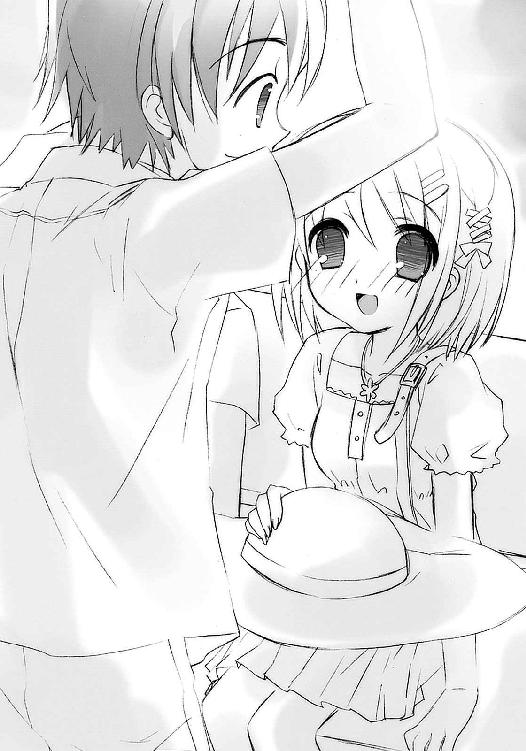

| 灼眼のシャナ 09 | |
| 高橋弥七郎 | |
| KADOKAWA / アスキー・メディアワークス (2013) | |
本書（電子版）に掲載されているコンテンツ（ソフトウェア／プログラム／データ／情報を含む）の著作権およびその他の権利は、すべて株式会社アスキー・メディアワークスおよび正当な権利を有する第三者に帰属しています。
法律の定めがある場合または権利者の明示的な承諾がある場合を除き、これらのコンテンツを複製・転載、改変・編集、翻案・翻訳、放送・出版、公衆送信（送信可能化を含む）・再配信、販売・頒布、貸与等に使用することはできません。
プロローグ
人ならぬ者たちが、この世の日に陰に跋扈している。
古き一人の詩人が与えた彼らの総称を〝紅世の徒〟という。
「これが......この度の託宣に依りて得られた式です。どうですか、おじさま」
「んー、んんーっん！ こぉーれはまた、凄ぉーいものを持ち帰ってくれましたねえー？」
自ら称して〝渦巻く伽藍〟、詩人名付けて〝紅世〟という〝この世の歩いてゆけない隣〟から渡り来た彼ら〝徒〟は、人がこの世に存在するための根源の力、〝存在の力〟を奪うことで自身を顕現させ、在り得ない不思議を起こす。思いの侭に、力の許す限り、滅びのときまで。
「核から二十二層、循環部は五百六......よぉーくもまあ、こぉーこまで複雑な式を構成でぇーきたものです。まぁさにェエークセレントッかつェエーキサイティング、ッジョブ！ なぁーにより、その解析という私への挑・戦!! 『星黎殿』に戻った甲斐があぁーりましたねえー!?」
彼らに〝存在の力〟を喰われた人間は、いなかったことになる。
これから伸び、繋がり、広がるはずだったものを欠落させた世界の在り様は、歪んだ。〝徒〟の自由自在な跳梁に伴い、その歪みは加速度的に大きくなっていった。
「しぃーかし、必要な部分の顕現は、とぉーっくの昔に終わったんですが......この超！ 複雑な式の用途は、いったいなぁーんなのか？ ヘカテー、奴はなにか言ぃーってましたか？」
「これが、最後の式だと」
やがて、強大な力を持つ〝徒〟たる〝紅世の王〟らの中に、そんな状況への危惧を抱く者が現れ始めた。大きな歪みがいずれ、この世と〝紅世〟双方に大災厄を齎すのではないか、と。
そして、一部の〝紅世の王〟らは、同胞を狩るという苦渋の決断を下した。
「んなぁーるほど......いぃーよいよ、本気で始めるつぅーもりですか。組ぅーみ込むための再構成は、慎重に慎重を期ぃーすことにしましょう。少々、時間がかぁーかりそうですねぇ」
「おじさま」
「ん〜ん？」
彼らの尖兵、あるいは武器となったのは、〝徒〟への復讐を願い誓った人間......己が全存在を〝王〟の器として捧げ、異能の力を得た人間......討滅者〝フレイムヘイズ〟。
「『奴』などという呼び方は改めてください」
「......」
この討ち手らに追われ、狙われ、狩られて......それでも〝徒〟らは、生きていく。
思いの侭に、力の許す限り、滅びのときまで。
１ 母の城
早朝の坂井家玄関で、間延びした呼び鈴が鳴ってから一拍、
「御免ください」
平淡な、しかし凛とした女性の声が響いた。
「!!」
なぜか今日は居間にいた、上下ジャージ姿の坂井悠二が、ギクリと体を硬直させる。
「？ ......こんな朝早くに、どなたかしら」
挙動不審な息子をとりあえず置いて、その母・坂井千草は暖簾を潜って廊下に出た。
いつもなら、息子に稽古（彼らは古風に『鍛錬』と呼んでいた）をつけてくれる可愛い少女が現れるはずの時間だが、
（シャナちゃんとは違う声だったわね）
思いつつ玄関に向かう千草を、悠二が追いかけてきた。
「あ、か、母さん」
少女による毎朝の稽古のおかげか、最近、僅かながら線の太さを感じさせるようになってきた息子が、今朝は妙にオドオドしている。
千草はその様子にピンと来た。
（心当たりがあるみたいね......シャナちゃんに関係のある方なのかしら？）
思う間に、短い廊下から玄関に出る。
来客たる女性は声をかけた後も、律儀に扉の向こうに立ったままでいるらしい。
千草はすぐサンダルを履いて、扉を開けた。
「あら、シャナちゃん。おはよう」
開けた先には、毎早朝訪ねてくる、そしてほぼ毎日夜まで坂井家で過ごす少女・平井ゆかりこと『シャナ』が、やはり常と同じ体操着姿で立っていた。ただ今朝、その表情は硬く、ともすれば暗く、さらには緊張さえしていた。
「おはよう、千草」
短い挨拶も、微妙に歯切れが悪い。その黒い瞳は、チラチラと横を窺っている。
千草が目を移した少女の傍らに、欧州系らしい一人の女性が立っていた。さっき来訪を告げた人物らしい。流暢に、しかし平坦な声で挨拶する。
「初めまして、奥様」
顔を確かめ合う間も僅か、女性はからくり人形のように急な動作で腰を折り曲げた。お辞儀のつもりらしい。背負っていた唐草模様の風呂敷包みが、その勢いで後頭部をガツンと打つが、特に堪えた様子もない。
「まあ、奥様だなんて......失礼ですけれど、平井ゆかりさんの？」
照れつつも千草は尋ねた。あだ名ではなく、本名として知らされている方の名で。このあたりはさすが、世間付き合いに長けた主婦である。
「はい」
短い返答とともに、また勢いよくバネ仕掛けのように体を起こした女性は、奇妙な格好をしていた。
丈長のワンピースに白いヘッドドレスとエプロン、編上げの長靴......まっすぐに伸ばされた背筋も含めたその姿は、いわゆるメイドと呼ばれる種類のもの。それが、唐草模様の風呂敷包みを背負っている。今時見ない出で立ちだった。
「幼少よりお仕えさせていただいた給仕であります」
肩までの髪の内にある端正な顔立ちは、声以上に情感に乏しい。
逆に千草は、大いに喜色を表して来訪を歓迎する。
「それはそれは、はるばる遠い所を、ようこそお越しくださいました」
「......」
女性は、それで自己紹介が終わったかのように黙ってしまった。
「......？」
不思議そうな顔をして肝心な部分の紹介を待つ千草に、シャナが急いで付け足した。
「ヴィルヘルミナ・カルメルっていうの。アラストールの古い友達」
「そう、アラストオルさんの......ああ、玄関先でお話するのもなんですから、どうぞおあがりください。ろくなお持て成しもできませんけれど」
「はい。それでは、お言葉に甘えさせていただくのであります」
謹直に、妙な口調で答えて、ヴィルヘルミナは玄関に入った。廊下で顔を強張らせて立つ悠二の姿に一瞬目をやり、しかし反応を示さず靴を脱ぐために屈む。また、背負った風呂敷包みが頭をゴンと叩いた。
千草が、息子の態度を軽く叱る。
「悠ちゃん？」
「え、あ、いらっしゃ......い」
悠二は吐息にさえ擦れる、か細い声しか出せなかった。
そんな彼を気遣うように、
「悠二」
続いて入ってきたシャナが声をかけた。
僅かに安堵する悠二、心持ち微笑むシャナ、その二人の間を塞ぐように、靴を脱いだヴィルヘルミナが立ち上がった。
その双眸が、僅かな感情を表して眇められる。
そのとき、
「どうぞ、カルメルさん」
千草がにこやかに言って、来客用のスリッパを出した。
「......痛み入ります、奥様」
ヴィルヘルミナはこの水入りで、また感情を奥に隠した。
と、その隙を狙っていたかのように、
「悠二、始めるわよ」
シャナが素早く手を伸ばして、悠二の袖を引いた。
「うわっ!? 僕まだ靴、靴履いてないって！」
「いいから！」
引いて引かれて、二人は玄関先から毎朝の鍛錬場所である庭へと走って行った。
「......」
その様子をじっと見送るヴィルヘルミナに、千草は改めて声をかけた。
「さ、おあがりください」
坂井悠二は人間ではない。
かつて彼の住む街・御崎市を襲った〝紅世の徒〟一味に〝存在の力〟を喰われて死んだ『本物の坂井悠二』......その残り滓から作られた代替物・トーチだった。
トーチは、時とともに存在感や居場所、役割を失い、人知れず消えていくモノ。
徐々に周囲の人々からそこに居ることを忘れられ、本人の気力も意欲も失せ、惜しまれることも悲しまれることも、惜しむことも悲しむこともなく......いつしか消える、無情の道具。
〝徒〟にとっては、人を喰らうことで生まれる歪みの発生を和らげ、討滅者フレイムヘイズの追跡をかわすために作られる、誤魔化しの道具。
悠二は、その一つ......ただし、ただの道具でもなかった。
身の内に、宝具を宿していたのである。
時の事象に干渉する、〝紅世〟秘宝中の秘宝『零時迷子』である。
この、毎夜零時に宿主が一日に消耗した力を回復させるという、一種の永久機関の働きによって悠二は人格や存在感を維持したまま、日々を送ることができていた。
宝具を宿すトーチ、『旅する宝の蔵』〝ミステス〟として。
人ではない存在による、人としての生活を。
とはいえ彼も、歴とした〝紅世〟の関係者である。生活の一部には、常人には有り得ない光景や習慣も入り込んでいた。具体的には、毎朝毎晩の鍛錬である。
彼はシャナと出遭ってからの数ヶ月、
短期的には、〝徒〟との戦いで得られた経験を確認し、練磨し、昇華させるために、
長期的には、いつかこの街から巣立ち、シャナとともに歩いてゆく力を蓄えるために、
朝は主に基礎的な体術を、夜は主に〝存在の力〟の繰りを、シャナとアラストールの二人を師として心身に叩き込んできた。そうすることで、今の自分の置かれた不安定な立場に、自分という不可思議な存在に、未来や意義、道を作り出すかのように。
今、坂井家の庭で行っているのは、その朝の方だった。
（分かる）
思う悠二の眼前、体操服を着た小柄な少女が、流れる。
その表現こそ相応しい、滑らかかつ留まることのない体捌きと、木の枝による鋭い斬撃。足の運びと腕の振りは、軽やかかつしなやかで、なにより強い。舞う風の顕現のように、腰まである黒髪が朝日の中に靡き輝いて、思わず見惚れてしまいそうになる。
しかし悠二は今、それらへの痺れるような感嘆とは別のものを感じている。
（分かるぞ）
体術の鍛錬における実際の行為は、『彼女がぶっ叩きにくる木の枝をひたすら避ける』というだけの単純なものである。もちろん、単純ではあっても容易ではないが。
シャナが上から下から、ときにはフェイントもかけて、しかし悠二の体ギリギリの場所に木の枝を振り向ける。刹那の爆発力を備えた、隙と途切れを見せない流麗果断な斬撃だった。
息も吐かせぬ、という言葉の意味を悠二はまさに体感する。
（力が）
恐らくは『零時迷子』の機能の一つなのだろう、〝存在の力〟への──ときにはフレイムヘイズ『炎髪灼眼の討ち手』たるシャナよりも──鋭敏な知覚が報せる。
眼前、木の枝を縦横に振るう少女の中で〝存在の力〟が高まっていくのを、燃焼にも似た力の変換が起きるのを、その爆発の力が噴きだす予兆を、見て取る。
（集まる）
一つ力の流れ、
一つ所への集中、
一つ動作の発生、
幾つも振り回される見せかけの斬撃の中に混じる『本命の一撃』が向かうのは──
（──ここだ!!）
「はずれ」
反応して避けようとした先に、シャナが一言、一歩、一太刀を差し出していた。
回避するための出足を軽く払われて、悠二はつんのめる。
「っと、わあっ!?」
無様に転ぶ寸前、素早く地面に手を着いて、中腰の体勢を立て直す。鍛錬の中でようやく身に付けた（本人としてはいささか不本意な）体捌きである。
見上げた先で、息も乱さず小柄な体躯を屹立させるシャナが、軽く髪を払った。先刻までの不安げな様子を微塵も感じさせない冷徹な声で採点する。
「繰り出すタイミングを感じるまでは漕ぎ着けたけど、その後に手こずるみたいね」
「そ、そんな簡単にフレイムヘイズの、本気の一撃を見切れたら苦労しないよ」
反対に、胸の内まで乾くように息を切らした悠二が、膝に掌を載せて弁解する。
が、もちろん、シャナはこういう点に関しては容赦がない。
「全然、本気の一撃なんかじゃない」
「......」
「何度も言うけど、高まった力がどこに溢れていくか、それも全体の流れに則ったものなんだから、感じることができるはずよ」
珍しく、大きな声で説明を繰り返す少女に、悠二は頷いてみせる。
「......うん。まあ、ここまではできたんだし、やってみるさ」
今度は答えず、シャナは木の枝を軽く手首だけで回した。
ヒュヒュ、と鋭い唸りが早朝の空気を渡り、悠二に緊張を促す。
「いくわよ」
髪が宙に残されるように靡き、また次の二十振りが始まる。
「よーし、来い」
始めた当初、鍛錬の項目は『振り回す枝を、目を開けて見続ける』だけだった。
それがいつの頃からか、『前もって声をかけた一撃を避ける』になっていた。
今では、『十九回の空振りの後に繰り出す、二十回目の本命の一撃を避ける』という複雑なものになっている。相手の手数を数えながら力の高まりと一撃の繰り出される向きを感じるという、冷静さと鋭敏さが求められるこの厳しい鍛錬を、悠二はさんざん打っ飛ばされつつも、とにかく諦めずに続けている。
今朝は特に、身を入れて。
お互いに、と感じながら。
悠二は、斬撃を鋭く繰り出す少女の姿に違和感を抱いていた。
（シャナ、どうしたんだろう）
彼女の厳しさが、いつもとは違う。
常の余裕が、まるでない。からかうこともなく、すぐ黙ってしまう。身動きも最低限で、頬が硬く引き締まっていて、視線をチラチラと他所に移す。短い付き合いながら、それら細かな挙措の全てが分かる。感じられる。
鍛練の場で、こんなに落ち着きのない彼女を見るのは初めてだった。
（やっぱり、あの人......）
ギリギリの場所を過ぎる木の枝に冷や汗を流しながら、また思う。
（ヴィルヘルミナ・カルメルっていったっけ......あの人を気にしてるのかな？）
昨夜、友人たちと花火をした帰り道、シャナと二人きりでなんとなく──
（いや）
正直に認めて、ものすごくいい雰囲気になっていたところに、突如、割って入った、奇妙な格好と口調のフレイムヘイズ......悠二は、このヴィルヘルミナという女性について、ほとんどなにも知らない。遭遇してすぐ、会話の場から追い払われたためである。
（──「今より、フレイムヘイズ同士の会議を行うのであります」──）
という彼女の言葉は、シャナとともに幾度も〝紅世の徒〟との激しい戦いを潜り抜けてきた、と密かに自負していた彼の『少年としての誇り』を、いささか以上に傷つけた。
（いや、そんな、そんなことは、どうでもいいんだ）
と、斬撃の誘導する方向にステップを踏みながら、心中密かに強がってみる。
（それよりも、シャナだ）
彼女の緊張の度合いは、明らかに普通ではない。いかなる敵も恐れず立ち向かうフレイムヘイズ、まさに炎の化身のような烈しくも美しい──
（というか、可愛）
「ぃがっ!?」
つい気を緩ませた悠二は、当てに来た二十振り目を、横合いから肩に受けて吹っ飛んだ。
「あっ!?」
その一撃を振るったシャナも驚く。
〝ミステス〟の少年はゴロゴロゴと二回半ほど転がって、狭い庭の茂みに頭から突っ込んだ。
シャナは大声を上げたことを後悔したらしく、微妙に声をすぼめて、この失態を叱る。
「な、なんで、よりによって今日......馬鹿！」
「そ、そんなこと、言ったって」
打たれた肩をさすりながら、悠二は身を起こした。派手に吹っ飛ばされこそしたものの、ダメージは打撃を受けた箇所に残る鈍痛だけで、負傷というほどのものはない。この打たれ強さは夜の方、〝存在の力〟を繰る鍛錬の成果らしい。安堵の溜息とともに、体に付いた埃や葉っぱを払って立ち上がる。
そのついでに見れば──これで何度目か──シャナは庭の真横、縁側代わりの大窓から続きの居間を、横目で窺っている。言うまでもなくそこは、ヴィルヘルミナ、母・千草、アラストールらによる会談の行われている場所である。
その、あからさまな動揺の姿に、悠二はまた思う。
（よりによって、今日？）
やはりシャナは、相当にあの無愛想な女性の存在を意識しているようだった。
出会った際の会話から、彼女がシャナを育てた云々、興味深い事柄の断片を聞いている。どうやら彼女は、自分の知らないシャナの過去に、深く関わる人物であるらしい。
しかし今、シャナがこうして自分をしごいて鍛錬をアピールし、また無様なことになって慌てたりしていることと、その話は一体どう関係しているのだろう。今さら育ててくれた相手にいいところを見せたいわけでもないはずだが。
（今やってる鍛錬は、別にフレイムヘイズの使命とは関係ないんだし）
そう、シャナ自身には関係がなさそう......とすると、いいところを見せねばならないのは、
（もしかして、僕なのか？）
思う彼の前、やや小さな声でシャナが注意する。
「今度は気を付けて」
「分かった」
悠二は頷いて腰をやや低く落とし、これ以上無様を晒さないよう、構える少女の全てに神経を集中させる。させつつ、しかしあのヴィルヘルミナという女性のことに、重く暗い気持ちを向けずにはいられない。
より正確には、ヴィルヘルミナという女性が、シャナに対してなにをしたか、なにを言ったか、ということにである。
（まさか、この世を荒らす〝徒〟を討滅して回るのがフレイムヘイズの使命なのに、一箇所に留まって......僕なんかに構ったりしているから、怒られたんだろうか？）
悠二は、完全に誤解していた。
（たかが〝ミステス〟一つのために使命を疎かにしている、って......あんな厳しそうな人だからな......なんとか、シャナは悪くないってことを説明できないかな）
悠二は、シャナが叱られたのだとばかり思っていた。
（アラストールも、とりあえずこの街への滞在に納得してくれたんだし......そうだ、なんならマージョリーさんにでも、『シャナは怠けたりなんかしてない、この街を襲った〝王〟を何人もやっつけてる』ってことを話してもらおう......元々、あの人が呼び寄せたらしいし）
悠二は、呑気に思う。
（うん、そうしよ）
「うぼはっ!?」
また懲りずに次の二十振り目を横っ面に食らって、悠二はぶっ飛んだ。
シャナが怒り半分、動揺半分の叱声をあげる。
「ああっ!? もう──！」
昨夜、ヴィルヘルミナ・カルメルは、秘宝『零時迷子』を蔵する〝ミステス〟坂井悠二の扱いについて、シャナに、こう提言していた。
この〝ミステス〟を破壊してしまえ、と。
坂井悠二は、自分の危険な立場に、全く気付いていなかった。
一方、坂井家の居間では、食卓を囲む保護者三人による面談が粛々と進んでいた。
来客を迎えるため居間のテレビは消されていたので、庭から何度か上がる、悠二の間抜けな絶叫とぶっ飛ばされる騒音が、やけに大きく聞こえる。
また一つあがった声と騒音、少女の小さな叱声を聞いて、千草はクスリと笑った。
「まあ、悠ちゃんったら。今日は随分と熱心ねえ」
「......」
対面に座ったヴィルヘルミナは答えず、無表情に見つめ返す。
その二人の間で、
「ゴホン」
と遠雷のように重く深い声が、しかしどこか上擦った調子で、スピーカーから響いた。
声の主は、シャナと契約し、フレイムヘイズとしての力を与える〝紅世〟の魔神〝天壌の劫火〟アラストールである。彼は、
（まったく、今日くらいは模範的にできぬのか、痴れ者め......）
図らずも契約者と同じ形で、情けない少年を心中で叱っていた。
普段は黒い宝石に金の輪をかけたペンダント〝コキュートス〟に意志を表出させている彼は今、それを内蔵した携帯電話として、テーブルの上にある。その携帯電話からは二又のコードが伸びて、両脇に置かれたミニコンポ大のスピーカーに繋がれていた。これこそヴィルヘルミナが背負ってきた大きな風呂敷包みの正体であり、保護者のみによる三者面談を不都合なく行うための設備でもあった。彼女はこういう、機械類の細工においても有能な女性なのである。
（それにしても）
携帯電話の中、アラストールは炎の魔神らしからぬ、冷や汗に塗れる思いをしていた。このテーブルを囲む三者面談において彼の立場は、その身の置き所と同様、非常に微妙である。
背筋を伸ばした、まるで人形のように謹直な姿勢で座るヴィルヘルミナ・カルメル。
常の如く柔らかな微笑みを浮かべ、特に緊張するでもなく対面で向き合う坂井千草。
この両者の間、テーブルの一辺に、彼こと〝コキュートス〟内蔵のスピーカー付き携帯電話が、まるで行司のように配置されているのである。
（この状況は、まずい）
なにか自分が、とんでもない役割をあてがわれているように感じて、偉大なる（はずの）〝紅世〟の魔神は戦慄していた。
そんな彼の心中を知ってか知らずか、千草がなんということもなく話を続ける。
「カルメルさんは、シャナちゃんの養育係だと言うことですけれど、この度、訪ねてくださったのは、シャナちゃんに──」
「......」
能面のように固まったヴィルヘルミナの顔、その前髪の間で、右の眉が僅かに強張りの動きを見せた。
（いかん）
奥方に前もって説明しておくべきだったか、とアラストールは焦る。
ヴィルヘルミナは〝夢幻の冠帯〟ティアマトーと契約した、〝紅世の徒〟討滅の使命を持つフレイムヘイズの一人、『万条の仕手』である。
彼女は、アラストール、もう一人の同志（アラストールは、この男の名を極力思い浮かべないようにしている）とともに、数百年の歳月をかけて純粋培養のフレイムヘイズ『炎髪灼眼の討ち手』たる少女を作り上げた人物である。
特に彼女は、『当時名を持たなかった、持つ必要がなかった、ただ一つの称号を冠することを期待され、相応しいと見做されていた少女』の、人間としての生活における全般の指導を担当してきたため、ひときわ深く、育ての親として少女を愛していた。また、アラストールら三人が、新たな『炎髪灼眼の討ち手』を作り上げる、と誓った女性の、無二の親友でもあった。
そんな彼女は昨夜、自分たちの育て上げた完璧なはずの、どこまでも強く生きるはずのフレイムヘイズと数年ぶりの再会を果たし......そこに、全く思いもよらぬものを見たのだった。
どこの馬の骨とも知れぬ〝ミステス〟の少年に寄り添う、まるで市井の一人間の如く──
（まあ、認めたくはないが、しかし......そうなのだろう）
──恋する少女となり果てた『炎髪灼眼の討ち手』の姿を。
自分たち三人、数百年をかけた情熱と執念の精粋をそのように変えてしまった、この街での暮らしの象徴が、本来は持っていなかった、使命の塊たる『炎髪灼眼の討ち手』には必要のない、『シャナ』という名前なのだった。
それを、元凶たる馬の骨の親・千草が、
「シャナちゃんに──」
とごく自然に通称として使っているのである。不機嫌にならないわけがなかった。
本来これは、悠二がフレイムヘイズの少女に即興で付けた名であり、アラストールもいつしか認めていた通称であり、千草にもそう呼ぶよう言ったあだ名だった。
だから今、彼女がそれを口にするのは当然のことなのだが、ヴィルヘルミナが感じるものに変わりがあるわけではない。
「──一人暮らしをさせていることが、心配だったからですか？」
「その通りであります、奥様」
平然と受け答えしてこそいるものの、代わりに声は恐ろしいほどに冷えている。
「やっぱり。年頃の女の子ですからね、分かりますわ」
「......」
ヴィルヘルミナの眉が密かに、しかしギリギリと音を立てるように半ミリ、釣りあがった。
（うっ、いかん、しかし）
どっちにどう味方すべきなのか、さっぱり見当のつかないアラストールである。
そもそも彼は、シャナ以上に『この世のバランスを守る』という使命に殉じる〝紅世の王〟、戦いに生きる炎の魔神なのである。男女の恋愛など、理解できようはずもない。
（......いや）
実のところ、全く疎いわけでもない。
理解ではなく、感得していた。
しかし、永久に癒せない痛みの下、胸の奥の奥に埋み火として抱いているその気持ちは、決して表には出せない。
シャナのそれとは、なにもかもがあまりに違いすぎるのである。
それは、二人で一人のフレイムヘイズ『炎髪灼眼の討ち手』として、戦火渦巻く千軍万馬、乗り越え踏み越えた末に繋がれた、心の絆。
（──「愛しているわ、〝天壌の劫火〟アラストール、誰よりも」──）
二人の他には、誰への何にもなりはしない、唐突で強引で頑迷な、解けない絆。
彼は、そこからの気持ちしか知らない。
そこへと至るまでの経過はまことに味気ないもので、そうなるとは思わず、そうしようとも思わず、そうなっていきなり、全なる一つとなった。もちろん自ら語る気もない。
（どれだけ我が強く大きなものを抱いていても、助言を欠片も漏らせないのであれば、結果としての現象はなにも分かっていないのと同じ、ということか......愚かしいことだ）
それに、語る語らないを措いても、彼の感得は特殊すぎて普遍性がなかった。気持ちの在り様もあまりに強力すぎて、今の少女の不安定なそれに対する参考にはなりそうにない。
だからその点、ごく普通の主婦、人と人の間にある気持ちを熟知した大人の女性である千草を、アラストールは大いに頼っていた。純粋培養したがゆえに無防備な少女の心身を、無法な少年が抱く邪な欲望から守るために。実際その助言は何度も行われている。
つまり、シャナを守るという観点に立ってみれば、千草はむしろヴィルヘルミナの味方であるとさえ言えた。しかし反面、少女自身が求めるのならば、遠慮なく恋愛の進展に一役買うところもある。千草の中では、その双方は矛盾しない行為であるらしい。
人の心というものが明確に峻別できない複雑なものであることを、長くこの世にあってなお痛感するアラストールだった。
「......奥方」
ペンダントから拾った声を、スピーカーが響かせる。
「はい？」
千草は、いつものように柔らかく和やかな笑顔で答える。
（この笑顔が曲者なのだ）
とアラストールは、対処するに、あるいは〝徒〟よりも難しい相手について思う。
彼女は、他者の心の動きに敏感である。これまでも幾度か彼女とは話したが、その時々、いずれも本心を悟られていた。そして彼女は常に、それと分かっていながら、そ知らぬ顔で相手にとって適切な助言を与えるのである。
今も、恐らくは分かっているはずだった。
理由はともかく、ヴィルヘルミナの心が穏やかならぬものであると。
（危険だ）
と思う。千草が何を言うか、全く予想できない。自分が驚かされるだけなら問題はないが、今日は相手が相手である。事態は密かに切迫していると言っていい。下手をすると──
（──む、待て、我は誰を心配している？）
いくらヴィルヘルミナが内心激昂したからといって、千草に直接危害を加えることは、フレイムヘイズの常識として、まずあり得ない。彼女が危害を加えるのは──
（──ふん、馬鹿な）
内心、わざと大げさに嘲笑う。
たかが〝ミステス〟一体、どうなろうと知ったことではない。そう、これはシャナのため。アレにもしものことがあれば、シャナが悲しむ。だから、そうならないよう気を遣っているだけのこと。そういうことなのである、あくまで。
（ここは、敬意を払うべき奥方のためにも、事を荒立てぬようにせねば）
と〝紅世〟に威名轟かす魔神らしからぬ事なかれ主義で、彼は二人の間に入る。
「ああ、奥方。できれば、ヴィルヘルミナ・カルメルの前では、あの子のことを『平井ゆかり』と呼んでやってはもらえまいか」
「......？ はい、平井ゆかりさん、ですね。なんだか久しぶりで、かえって新鮮ですわ」
言って微笑む千草に、アラストールはやはり感嘆の念を抱いた。
普通は事情を訊き返すものである。それを、興味などおくびにも出さず、あっさり承服してしまった。ヴィルヘルミナが漂わせる不穏な空気を察していればこその対応だろう。
「我らの家は、格式にうるさくてな......ご面倒をおかけする」
などと、アラストールは要らぬフォローまで入れてしまっていた。
ヴィルヘルミナはこのやり取りに口を挟むでもなく、冷ややかな視線だけを、自分の設置した機器の中央、携帯電話へと向ける。
（どのような理由から、その女性の肩を持つのでありますか）
（詮議）
まるで、声を出さずに会話する自在法を使われたかのように、ヴィルヘルミナとティアマトー、二人の女性からの追及を感じるアラストールである。彼女らは、アラストールの事情を知っているため、彼が他の女性と仲良くすることを好ましく思っていない。
（我には決して後ろ暗い所などないぞ）
と断じて思いつつも、その抗議は実際の現象として、また男性による女性への言い訳として、相手の心に届くことはない。どうしようもなく不条理、かつ不利な情勢だった。
辛うじての救いの声が、場の雰囲気を和らげる。
「カルメルさんは今、その平井ゆかりさんのお家に滞在を？」
「はい、奥様」
シャナは、この街で〝徒〟に一家ごと喰われトーチとなった『平井ゆかり』という、悠二のクラスメイトの存在に割り込んでその立場を偽装、生活基盤を得ていた。そうしてからすぐ、トーチとなった他の平井家の人間も消えたため、現在、彼女は一人暮らしをしていることになっている。ほぼ毎日、坂井家に入り浸っていることもあり、その自宅であるマンションの一室は、ほとんど寝床兼倉庫という扱いだった。
ちなみに、数度に渡る千草との携帯電話越しの会談の結果、アラストールは海外で職務に励むシャナの育ての親、ヴィルヘルミナは、彼の元から遣わされた養育係、ということになっている。
「当分......そう、二、三ヶ月ほどは、この街に滞在する予定であります。その間、あの方の日常のお世話も、当然私が行わせていただくのであります」
微妙に挑発的な口調で告げたヴィルヘルミナは、
「それは素敵ですわ」
という、思わぬ同意の即答を受けた。
「──？」
彼女としては、母親面をして少女をいいように玩んでいる女性に、自分こそが少女の保護者であると示した、そのつもりだった。だから当然、少女を取り上げられた女性は寂しがり、自分を疎んじると思っていた。相手がそう感じることに、暗い期待と優越感さえ持っていた。
ところが、その予想に反して千草は笑っている。それは虚偽や阿りでは在り得ない、喜びだけではない笑いだった。
「私どもも、少しは寂しさを紛らわせるお手伝いはしてこられたと思いますけれど......やっぱり本当の家族と一緒にいることが、あの子にとって一番でしょうから」
「家族」
不意を討たれたように、ヴィルヘルミナは声を漏らしていた。
アラストールも同じで、こちらは絶句して言葉の意味を思う。
（家族）
彼女らは戸惑った。
妙な話ではあったが、それは少女を『炎髪灼眼の討ち手』として鍛え上げ作り上げた面々、アラストール、ヴィルヘルミナとティアマトー、そして今は亡いもう一人の男が、一度たりと考えたこともない概念だった。
彼らにとって少女は、使命感と友情と愛情を原動力に数百年、尽きぬ妄執でもって鍛え上げた一個の芸術品であり、魔神〝天壌の劫火〟を容れる無二の器であり、極言すれば、フレイムヘイズという機能そのものだった。
もちろん皆それぞれ、育てた時間相応に少女への愛情を持ってはいたが、それら感情、理非善悪を超えてまず何より優先されていたのは『少女をフレイムヘイズとすること』だった。
少女の方も、自らの境遇を平然と受け入れて育ち、堂々と巣立っている。
しかし、それは他の生き方や価値観を与えられなかったから。
彼ら、少なくとも死んだ男を除いた三人はそのことをよく知っており、ゆえに少女に対して大きな負い目と罪悪感を抱いていた。
少女が〝天壌の劫火〟を容れるに足る器、時空に巨大な可能性と影響力の広がりを持つ『偉大なる者』であればなおさらである。彼らが『少女が本来この世で得るはずだった存在』を摘み取ったことによる人間世界の損失は、決して小さくはない。
そして、育てた四人の内、三人までが常人の価値観を持たない異世界からの客人たる〝紅世の王〟だった。ヴィルヘルミナ・カルメルただ一人だけが、本来の人の在り様を──必ずしも幸福なものではなかったらしいが──実体験として知っていた。
彼女だけが、知っていて、しかし教えなかった。
少女をフレイムヘイズとして作り上げるために。
恐らくは誰よりも近い場所で、愛していながら。
これら思いを巡らせる数秒の間に、アラストールは気付いた。
（......ヴィルヘルミナ・カルメル）
彼女も同じことを考えたのだろう、常の無表情に、僅かな揺らぎが生じていた。
数百年からの長い付き合いである彼には、その『僅か』がこの鉄面皮の女性にとってどれほど大きな衝撃を受けた証なのか、よく分かった。
「そのように、不躾な......私は血の繋がりもない、単なる養育係の身であります」
フレイムヘイズ『万条の仕手』は、なんとか事実で感情を抑制しようと試みるが、
「あの子の方は、単なる、とは思ってないようですよ？」
千草はその感情で事実を圧倒する。
「すごく、嬉しそうです」
あまつさえ、皆のために心から笑った。
その笑みに釣られるように、
「そう、でありますか」
ヴィルヘルミナもつい、声を出していた。
アラストールは毎度のように感嘆する。
（まったく、恐ろしい）
坂井千草は、たった一つの単語を起点に『万条の仕手』の反抗を抑え、怯ませてしまった。その笑顔が、ただの呑気さの表れでないことの意味が、本当に恐ろしい。
「血の繋がりなんか、一緒に暮らした家族にとっては些細なことじゃありませんか」
という駄目押しに、アラストールもヴィルヘルミナも、答えを用意できなかった。
そのとき、
湯沸しポットが、ピー、とお湯が沸騰したことを報せ、
「あら」
千草はあっさりと、張り詰めていた場の空気を融かした。
なんということもなく彼女は立ち上がり、今度は単なるはにかんだ微笑みで、固まっているヴィルヘルミナに尋ねる。
「お恥ずかしいのですけれど......急なことで、紅茶のティーバッグしかありませんの。お茶菓子も、本当にお持たせでよろしいんですか？」
その指すところの物は、ヴィルヘルミナが背負ってきた風呂敷包みに入っていたもう一つのもの、和菓子の包みである。庭で暴れている少女の好みに合わせた、あんころ餅だった。
「どうぞお気遣いなく、奥様」
そう答えるのが精一杯のように、ヴィルヘルミナは声を絞り出した。
「アラストオルさんの分も淹れますね。二人だけというのは落ち着きませんし、せっかくですから顔合わせのお茶会のつもりで、ふふ」
「う、うむ、お任せする」
アラストールは、一介の主婦が腕利きのフレイムヘイズと〝紅世〟真正の炎の魔神を翻弄しているという現状を思い、降参の溜息を密かに吐いた。
坂井千草は、自分の密かな偉業に、全く気づいていなかった。
シャナは、焦っていた。
数年ぶりに巡り会えた、自分の育ての親の一人であるヴィルヘルミナの酷い提言に。
坂井悠二を、破壊する。
目の前で必死に自分が軽く振る枝を避ける少年を、
〝徒〟との戦いを幾度もともに潜り抜けてきた少年を、
自分に使命以外の世界を知るきっかけをくれた少年を、
そしてなにより、『どうしようもない気持ち』を抱くようになった少年を、
破壊する。
その気になれば、ほんの四半秒。
振るう木の枝に〝存在の力〟を集中して、炎の剣を顕現させるだけでいい。
耐久力を高める鍛錬もしていない〝ミステス〟は、ひとたまりもなく蒸発するだろう。
その、ほんの四半秒の距離にあるもの。
（──やだ！）
拒否を心に秘めて二十振り目、当てるつもりの一撃を、上段から真正面に振り下ろす。
悠二はこれを簡単に避けた。
「うわっ！ ......？」
甘い一撃だったのだろう、不審が一瞬、その瞳に過ぎった。
（いけない）
こんな生ぬるい自分がなにを言っても、ヴィルヘルミナは耳を貸してくれない、そう思いを持ち直して、心持ち太刀行きを鋭く速くする。
（強くなって）
悠二には『全く本気ではない』と言ったが、それでも実のところ、始めた当初よりは遥かに力を入れている。本人は、この進歩に全く気付いていないらしい。
（もっと）
シャナはもちろん、そのことを教えない。
悠二が自分の上達を知れば、無用の増長と変な慣れで鍛錬を舐めてしまうだろう。心構えに関係なく起こる、それは必然の病のようなものだった。無自覚な堕落と油断の別名でしかない自信は、実戦での死に直結してしまう。
ゆえに、常時脅威を与え、心身を引き締め続けさせる。
今、悠二の見せている上達ぶりは、そんな教育方針の、一応の成果だった。あくまで一応、という程度ではあったが、それでも確かに進歩はしている。
しかしシャナは、それでは足りない、と焦っていた。
（もっと、もっと強くなって）
悠二は、ただの〝ミステス〟ではない。
内に『零時迷子』という、時の事象に干渉する秘宝を蔵しているのみならず、それを守るための防壁たる自在法『戒禁』までも備えているという、特別製の〝ミステス〟である。
この特性、彼の持つ現実を、大したものだ、とただ感心していられれば良いのだが、残念ながら話は少々複雑である。
問題は、『戒禁』にあった。
この自在法は、戦闘用の宝具を装備した〝ミステス〟を容易に分解させないための、いわば対〝徒〟用の鎧である。ゆえに、作られた直後に施されるのが普通だった。
しかし、悠二はこの御崎市で〝徒〟の一味に喰われてトーチとなり、程なく『零時迷子』の転移を受けて偶然、〝ミステス〟となった......はずなのである。なのに、彼の体には『戒禁』が施されていた。それも、世に名高い〝紅世の王〟たる〝千変〟シュドナイの干渉をさえ跳ね除けるほどに強力なものが。
坂井悠二という〝ミステス〟は、あまりに不審な存在だった。
ヴィルヘルミナに、破壊という選択肢を提示させるほどに。
（破壊なんて......させない！）
「ご、ほっ!?」
想いとは裏腹に、つい強くなっていた二十振り目が横一線、悠二の脇腹に強く食い込んでいた。今度は堪えることができず、〝ミステス〟の少年は地に突っ伏す。
「あっ!? 大丈──反応が遅い！」
ヴィルヘルミナへの聞こえを憚って、あえて強く叱責した。
その声の奥にある辛さを、悠二は僅かな笑みで受け入れ、頷く。
「う、ん、ごめん──」
痛みが頬の強張りに見て取れる。今の状況は、彼にも痩せ我慢をさせているようだった。
彼の気持ちと表情に、胸の奥が、締め付けられるように痛む。
その事実を確認して、また別の、もっと奥深くが、もっと痛む。
（絶対、させないから）
想いを新たに、立ちあがった少年と、向き合う。
「いくわよ」
「うん、」
改めて、彼が身の内に宝具を宿した意味について、思う。
本来、秘宝『零時迷子』を持っていたはずの〝ミステス〟は、一人の〝紅世の王〟とともに『約束の二人』と称された、恐るべき使い手だった。こうして悠二の中に宝具が転移してきている以上、それは破壊されたに違いなかったのだが、
（どうして、そんなことに......？）
と思わされてしまう。
実のところ、『約束の二人』は、フレイムヘイズと〝徒〟双方に伝説として広く語り継がれながら、誰にとっても重要ではない、という奇妙な存在だった。
討ち手たるフレイムヘイズの方には、この二人を追う理由がなかった。
二人は『零時迷子』によって回復した力を互いの間で遣り取りしていたため、その片割れである〝紅世の王〟は人を喰らわずに生きていた。この世のバランスに悪影響を及ぼすこともなく、ゆえにフレイムヘイズは討滅する必然性を持たなかったのである。
一方の〝紅世の徒〟たちも、二人を襲ったりはしなかった。
例えば、強大な〝王〟が『零時迷子』を持てば、力の許す限り、放埒三昧に生きてゆくことができる。しかし、そういうことをしていれば、確実にフレイムヘイズが襲ってくる。
そして『零時迷子』は、長期戦を有利にすることはあっても、直接的に戦闘力を増大させることは決してない。一日二十四時間は、フレイムヘイズと〝徒〟が決着をつけるのには、あまりに長すぎる時間である。持っていたところでなんの役にも立たない。
そもそもこの宝具は、時の事象に干渉するという異常な特性ゆえに秘宝と呼ばれているが、効果の表れ自体は日毎の〝存在の力〟回復でしかないのである（この宝具を使用していたのが件の二人だけだったのだから、巷間に流れている情報量自体少ないのだが）。
常識的に考えれば、〝狩人〟フリアグネのような宝具収集家による単純な興味と執着以外に、この奪取を図るような輩が出るはずもない。強大な〝紅世の王〟クラスの二人と同時に戦う、というリスクに、メリットが全く見合わないからである。
（なのに、どうして）
二人が行方を眩ましてより百年余の今、事態は俄かに動き出している。
何者かが『約束の二人』の片割れ、『零時迷子』を宿した〝ミステス〟、通称『永遠の恋人』を破壊した。偶発的な戦闘の結果か、何者かの謀略の一環か、それとも他に窺い知れぬ事情があったのか。
（──『ここ数年、私は百余年ぶりに現れた非常に危険な〝王〟についての案件に専従していたのであります』──）
そう明言したヴィルヘルミナなら、事情一連の詳細を知っているに違いなかったが、昨日の今日ということもあるのか、まだ話してもらっていない。悠二の破壊、という提言で受けた衝撃を、自分が顔に出しすぎたせいもあるかもしれなかった。
（なんとか、しなくちゃ）
彼女は、自分を呼び寄せたマージョリーの口から、こちらで得られた僅かな、しかし無視することもできない重大な情報を得ていたらしい。
その情報とは、悠二と接触した〝千変〟シュドナイの言葉である。
（──『まさか、貴様──そうなのか』──）
（──『まさか、まさかこれほど早く見つかるとは......』──）
かの〝王〟は直接『零時迷子』に言及したわけではない。悠二の中にあるものを『零時迷子』と分かって言ったのかどうかも不明である。であるが、封絶の中で〝徒〟や〝燐子〟のように自由に動ける〝ミステス〟は、『零時迷子』を除けば、まず戦闘用のものである。
しかし、悠二は弱かった。
それこそが『零時迷子』の証明となる。
（そう、悠二が弱かったから）
なによりこの件を複雑にしているのは、シュドナイという〝王〟が、世界最大級の〝紅世の徒〟の集団、［仮装舞踏会］の構成員......しかもその枢要たる三柱臣の一柱である、という事情にあった。
この街に滞在しているもう一人のフレイムヘイズ、『弔詞の詠み手』マージョリー・ドーなどは、シュドナイの言葉から、〝逆理の裁者〟ベルペオルという、およそ知る者が触れたがらない三柱臣の一柱たる鬼謀の〝王〟による企みが裏にあるのではないか、と疑ってもいた。
とはいえ、情勢が切迫しているかと言えば、それも非常に微妙なところではあった。
先のように『零時迷子』発見（？）を嬉々と叫んだはずのシュドナイ当人が、その奪取に執着するでもなく、早々に逃げ出していたからである。彼ほどに強大な〝王〟が、念願の宝具を打ち捨てて逃走するなど、普通では考えられないことだった。
それに彼は近年、［仮装舞踏会］の構成員というより、他の〝徒〟の護衛者として知られていたほどに、組織との距離が開いていた。そんな繋がりも薄い組織云々よりも、収集癖を持つ誰かに捜索を依頼されていた、という話の方が、まだしも説得力がある。
シュドナイが『零時迷子』を発見した──彼が［仮装舞踏会］にそれを報告した──彼らによからぬ企みがある──それらは全て、疑惑や想像の域を出るものではなかった。
（そうであって、欲しい）
元より『零時迷子』は、風変わりな機能こそあれ、持つことによるメリットは大したことのない宝具である。
魔神を身に容れた『炎髪灼眼の討ち手』、フレイムヘイズ屈指の殺し屋と恐れられる『弔詞の詠み手』、それに今は戦技無双の『万条の仕手』までが滞在している死地に、あえて命を投げ落とさせるほどの魅力を持っているとは到底思えなかった。
ベルペオルが鬼謀の持ち主であるとはいえ、ただそれだけの理由で、全ての事象に怯えるわけにもいかない（フレイムヘイズはその存在の性質上、起きる事象に対して受け身な、出たとこ勝負で生きているため、過度に用心しないということもある）。もし彼女自身が『零時迷子』を得ても、全体の脅威にそれほどの変化があるとも言えない。
結局のところ、シュドナイが悠二になんらかの発見をしたことに間違いはないが、［仮装舞踏会］という組織全体がこれを狙う線は薄い、と見るのが妥当なのだった。
（それより）
もっと直接的な危険の方は、厳然と存在する。
関与もあやふやな［仮装舞踏会］などより、もっと危険な、警戒すべき相手が。
ヴィルヘルミナは、言った。
（──『いずれその者にも『零時迷子』がここにあると知られるでありましょう』──）
その者とは、『約束の二人』の生き残った片割れたる〝紅世の王〟である。
己の愛した『永遠の恋人』の宿していた宝具、その形見か欠片かを、取り戻しに来る可能性は、高い。何者かに暴力でもって、その喪失を強制されたとなれば、なおさら。
（──『確実に、かの〝王〟と［仮装舞踏会］の企図を挫く方法がある......』──）
その〝紅世の王〟に『零時迷子』についての情報が渡るのか、［仮装舞踏会］が一連の事態に関与しているのか、いずれも不明である。
（──『その方法とは、〝ミステス〟破壊による『零時迷子』の無作為転移であります』──）
しかし、危険の種を抱えておくよりは、取り除いておく方が良い。
ヴィルヘルミナは、そう考えているのだった。
悠二を破壊して、中にある『零時迷子』を何処とも知らぬ、無数にこの世を彷徨うトーチのどれか一体に転移させる......そうすれば、この面倒な宝具を、相当な年月、欲する者たちの前から消すことができる。対処のための情報も用意もない現状で敵の襲撃を待つよりは、遥かに身の安全を図ることができる。
討滅者・フレイムヘイズとしての、至極真っ当な主張だった。
（分かってる、そんなこと......でも）
そう、それだけではない。むしろヴィルヘルミナにとってそれは、多分に名目的なもの、お飾り、偽装であり、本当の狙いが別にあることも、また分かっていた。
（悠二を、私から取り上げようとしてる）
つまり彼女の提言は、『炎髪灼眼の討ち手』の保護者としての、非常に恣意的な主張でもあるのだった。もちろん、到底受け入れられるものではない。
（そんなの、やだ）
巣立ってから過ごした時間よりも、彼女に育てられた時間の方が未だ長いこの生涯で、ほとんど初めて抱く反発、以上の反抗だった。
自分の斬撃を必死の面持ちで感じ、かわす少年を見る。
（悠二を、壊すなんて）
自在法『戒禁』は、内部の宝具を取り出されそうになると発動する。しかし、いかにその威力が強かろうと、〝ミステス〟そのものを破壊する分には、なんの障害にもならない。壊そうと思えば、
（ほんの、四半秒）
それだけで、事足りる。
（でも、でも──）
足捌きが地を滑るように流れ、踏み込みを感知させない神速の前進となる。
体が僅か沈むと同時に、腰の回転と腕の延伸が連動して、握った枝が鋭利な斬撃となる。
（──絶対に、やだ！）
風切る音さえなく、木の枝が悠二の首筋まで皮一枚の距離で止まっていた。
揺れる前髪の間から見上げる顔と、その目と、視線が合う。
「......」
「......」
無言で見つめ合う。
もう理屈ではない。
彼が、好きなのだ。
だから、彼を破壊し、永遠に消し去ることなど、絶対にできない、許せない。
彼を、なんとしても守らねばならない。
あくまで、フレイムヘイズとして。
しかし、それ以外の自分としても。
そのためには、
「強くなって」
自分たちが、生半可な気持ちで今に臨んでいるわけでないことを、ヴィルヘルミナに伝えなければならない。言葉ではなく、行動と成果によって。
「もっと、もっと、強くなって」
「......」
多少の危険性さえも呑んで、悠二が自分の傍らにいてもいい、悠二が存在していてもいい、と彼女に認めさせなければならない。言葉ではなく、行動と成果によって。
「うん、分かってる」
少し気弱に笑う少年を見あげて、胸の痛みと安らぎを、同時に得る。
なくしたくない......否、なくさない。
絶対に。
シャナは、ヴィルヘルミナがどれほど本気であるか、全く気付いていなかった。
三人分出された紅茶とあんころ餅を前に、保護者たちの話は続いてる。続いている、といっても声の交差ではなく、あくまで状況としてである。
（なんという、嫌な女でありましょう）
（同意）
声を出さずに意志を伝え合う自在法で、ヴィルヘルミナとティアマトーは、不利な現状への文句を交わした。
食卓の対面でティーカップを傾ける、千草の笑顔がやけに癇に障る。事実としては、単に口に出しているように、
「良かった、今日は薄くないみたい。お恥ずかしい話ですけれど、私、ミルクを入れないと濃さが分からないんです」
と紅茶の美味しさを喜んでいるだけのことである。
しかし二人にはその平然とした姿が、
（知った風な口を、きくのであります......）
（噴飯......）
なぜか自分たちをやり込めて勝ち誇っているように見えてしまうのだった。
（......）
（......）
烈しい性格をした者の多いフレイムヘイズの中、例外的に表面・内実ともに冷静と言われる『万条の仕手』と〝夢幻の冠帯〟が、ともに怒っていた。
もちろんこれは、痛いところを突かれたからである。
家族のように愛しながら、使命を持った芸術品、あるいは自身の作品として少女を扱っている──そんな矛盾と酷薄さをズバリ指摘された、と一方的に思ったのだった。
（家族とは、考えて......否、私は、しかし......）
（......）
双方、怒りで考えがまとまらない。図星なのだから、どうまとめようもないのだが、それでも二人には白旗を揚げるつもりは全くなかった。
「あら、美味しい」
ホコホコとあんころ餅を味わう和やかな主婦を、いつもの無表情で観察する。妙に若い、という点を除けば、別段変わったところもない、普通の人間である。
「カルメルさんがアラストオルさんの元にお戻りになられる際には、私からも何か、日持ちするものをお贈りしますね」
「いや奥方、そのようなお気遣いは、どうぞご無用に願いたい」
「それくらいは、どうかさせてくださいな。いつも平井ゆかりさんにお世話になっている、ほんのお返しですから」
「む、うむ......では、お言葉に......甘えさせてもらおう」
その普通の人間に、アラストールが思う様あしらわれている、と見た二人は、闘志を奮い立たせる。
（〝天壌の劫火〟を、まんまと丸め込んでいるのであります）
（狡猾）
（元々、彼は女性に対して押しが弱いのであります......こんな環境で甘やかされてしまっては、無双の利剣も一晩で鈍らと化すは道理）
（戦闘準備）
二人して沈黙の内に了解し、開戦のための心構えを始める。
元よりヴィルヘルミナらは、少女が世話になったことへのお礼を言うために訪問したわけではない。どのような環境が少女を変えてしまったのか、それを確かめるべく潜入したのである。つまりは敵の手口と性質を掴むための、敵情視察だった。
その所定目標をある程度達成した、と判断した──実際には、これ以上相手のペースに巻き込まれまいと焦った──二人は、即断即決に口火を切ろうとして、
「カルメルさんに──」
「は？」
機先を制された。偶然だろうが、なんとも二人にとって嫌な感じではあった。
「──アラストオルさんへのお土産を持って行っていただくのは、お客様にお使いをさせてしまう形になってしまって心苦しいのですけれど」
「いえ、その際は問題なく務めさせていただくのであります、奥様」
「良かった」
千草は手を合わせて無邪気に喜ぶ。
その姿に心を乱されないよう、ヴィルヘルミナはでき得る限りの剣呑な声で仕切りなおす。
「ところで、奥様」
「はい？」
「私ども......いえ、私、久方ぶりにあの方──」
と彼女はあくまで『シャナ』の名では呼ばない。
「──に再会し、いささかならず失望させられているのであります」
「むっ、う」
と、急な話の運びにアラストールが唸った。
（なにが、むーう、でありますか）
（職務怠慢）
二人は少々八つ当たり気味に、心中で不甲斐ない〝紅世〟の魔神に不平を投げつける。
肝心の千草はといえば、
「まあ」
と怪訝な顔で、頬に手を当てているのみ。ただの主婦の方が落ち着いて見えるというのは、同業者としてなんとも情けない話だった。
「あの方が」
とヴィルヘルミナは強く、改めて言いなおす。
「私どもの許を発たれたときのお姿は、それはそれは凛々しいものでありました」
気付けば、千草はいつしか傾聴の姿勢を面に表している。
その打って変わった真剣な様に、ヴィルヘルミナは密かに驚き、しかし続ける。
「自らの在り様を正しく認識して立ち、的確に対処して切り拓く......育てた私どもが、まさに理想とした姿だったのであります」
「......？」
ふと、千草の表情に不審の影が過ぎった。
自らの言葉に激しつつあるヴィルヘルミナは、構わず畳み掛ける。
「それが今や──」
怒りに燃えるフレイムヘイズ『万条の仕手』の脳裏に、昨夜の光景が過ぎる。あのひ弱そうな〝ミステス〟に寄り添い......『炎髪灼眼の討ち手』が寄り添い、あまつさえ、あのような行為に及ぼうと......!!
「──余事に心乱し、正答への蹈鞴を見苦しく踏んでいるのであります」
この場合の正答とは、もちろん悠二の破壊である。
千草はアラストールとの会談を経て、彼が警察関係の仕事をしており、シャナもその道を目指している、と解釈していた（どちらも大筋、正しくはある）。だから、彼女はそれを前提として話す。
「つまり、養育係のカルメルさんから見て、平井ゆかりさんが勉強を怠けている、と？ たしかに、我が家でくつろぐ時間は多いと思いますけれど」
「堕落であります」
ヴィルヘルミナは一言の下、斬って捨てる。自分だけが言う権利を持つ、と信じる、養育係としての矜持によって。
「確固とした使命の剣、我々が育てた偉大なる器を、このような場所で──」
「ヴィルヘルミナ・カルメル！」
アラストールが、口を滑らせまいかという懸念、千草に対するあからさまな難詰への叱責、双方の意味を込めて鋭く言った。
千草は、自分の前ではかつてなかった彼の大声に驚き、僅かに目を見張る。それほどに深刻な話がなされていることを思い、改めて自分の立場を重く受け止める。
しかし、怒鳴られたヴィルヘルミナの方は止まらない。それどころか、グリン、と機械のように首を回して、自分の設置したスピーカー一式を睨みつけた。
「貴方が......」
不当かつ無責任な非難を受けたことでタガが外れたのか、その無表情の奥から、遂に憤怒の低い声が吹き出す。
「貴方ほどの男が......監督する立場にいながら......なんという、体たらく......」
食卓の上に置かれた両の拳が、鉄球をも砕き潰すほどの握力でメキメキと固められていく。彼女は、常には全くないほどの激昂を見せていた。
対面にある千草は、この養育係が燃やす怒りの性質を、注意深く計る。今の話が、少女にとってどんな意味を持っているのかを、しっかりと見定める。
ヴィルヘルミナは、強張る唇を無理矢理に開いた。
「いったい、いったい」
犠牲にした大切な男への気持ち、
自分に望みを託した戦友との絆、
成就までに費やした歳月の長さ、
少女と出遭えた奇跡の中の奇跡、
かけがえのない全てが、彼女の背に重くのしかかり、血を吐くような言葉を紡がせる。
「なんのために、あれほどの、力を尽くしたのか」
しかし、だからこそ、千草は気付いた。その顔にあった不審が疑問へと変わり、すぐ理解を経た哀しみになる。
「カルメルさん」
なにを今さら言うことがある、と怒れる面を上げたヴィルヘルミナは、
「......、っ!?」
千草の表情を見て、驚いた。
彼女の顔にあったのは、恐怖でも、感嘆でもない、哀しみ。しかも、同情や感傷からのものではない、感情の渦中にある者を本能的に恐れさせる理性の厳しさ、間違いを犯した者を叱咤する辛さの表れだった。
その唇から、静かに、一撃の前置きが放たれる。
「なんのために？」
「......」
（......）
身の内にあるティアマトーともども、ヴィルヘルミナは口を閉ざした。形勢が不利であることの認識、次に食らう言葉が痛撃であることの嫌な予感があった。
そして千草は、問い質すように、言う。
「あの子の、ためではないのですか？」
「ぅ──」
受けた衝撃に、ヴィルヘルミナは無様な、唸るような声を漏らしていた。
やはり千草は察していた。
彼女の抱いている矛盾を。
彼女にとって、少女が一体どんな存在であるかを。
知らない振りをして強制していた、ずるい立場を。
「──、っ、それは」
ヴィルヘルミナは、咄嗟に続けようとした声を詰まらせてから、
（しまった）
と思った。
彼女は、自分が融通の利かない性格だと自覚している、ゆえに、より強き意志を保つという超級の頑固者である。『この世の本当のこと』を知らない素人になにを言われようとも、その意見が妥当なものであろうとも、自説を曲げる気はさらさらない。
だからただ、そんな自分が、無理に反抗しようとして動揺を表に出してしまったことのみを激しく後悔した。
対する千草はあくまで平静に言葉を継ぐ。
「今から、少し分かっているつもりでお話しします」
「......？」
動揺を再び沈黙に隠し、ヴィルヘルミナは正面から、手ごわい素人を見据えた。
「皆さんが力を尽くされたことには、いろいろと事情もあるのでしょう。歳月の中で、たくさんの苦労もされたこととお察しします」
（......たしかに、分かった風なことを言うのであります）
心中吐き捨てつつ、密かに眉根を寄せる彼女に、
「でも」
千草は先からの厳しさを不意に表して、言う。
「それらがなんのためであったのかは、はっきりしているはず......いえ、していなければならないはずです」
ヴィルヘルミナは、今度は黙るのではなく、絶句した。
声だけは穏やかに、しかし厳しく千草は追及を続ける。
「あの子のため──違いますか？」
口答えができない。
「それ以外のどんなことで、あの子に望みをかけるのですか？」
ヴィルヘルミナは、気付いた。
気付かされてしまった。
（私は）
千草の方こそが、怒っている。
（私は──）
坂井千草の方こそが、『炎髪灼眼の討ち手』のために怒っているのである。
そのあんまりな事実、自分の醜悪さに気付かされて、彼女は愕然となった。
と、アラストールが、
「奥方」
同志を気遣い、千草に寛恕を求めた。
大丈夫、とばかりに千草は小さく頷いて、一瞬で微笑みを取り戻す。
「はい」
その和やかさ、全く純粋ではない微笑みに、
（......敵わぬな）
アラストールは困った風な苦笑を、心中で漏らした。
元より千草としては、ヴィルヘルミナを責めて一時の快を得ることなどが目的ではない。だから、ただ一人の母親として、少女のために言う。
「平井ゆかりさんは、誇り高く力強い心を持った子です。私のように僅かな付き合いしか持たない者でも、そのことがよく感じられるのですから......カルメルさんは当然、それが本質だと分かっていられるのでしょう」
「......」
ヴィルヘルミナは、僅かに顔を伏せて黙ったまま。
構わず、千草は言う。
「だからこそ、その凛々しく毅然とした姿が変質してしまう、してしまったのではないか、という恐れを抱かれたのでしょう」
「......」
はい、という相手に擦り寄る声を、意地でも出さないヴィルヘルミナである。
さらに、千草は続ける。
「カルメルさんが仰った、『心を乱す余計なこと』というのは、家の悠二とのこと、と拝察します。でも、私はあの子から悠二を、その問題を取り上げるのには反対です」
「......なぜ、でありますか」
ヴィルヘルミナは、答えを欲するように訊いてしまっていた。
千草は、断言で答える。
「あの子が、あまりに幼いからです」
もちろん皆が分かっている、これは事実だった。
「もし今、むりやりに取り上げ、相手から引き剥がしても、長い人生......いつかは同じものにぶつかるでしょう。あれは、陥ることを避けられないものですから」
千草があえて明言しなかったものを思い、ヴィルヘルミナは胸の奥深く、傷の疼きを得た。陥ることを避けられない、甘く辛く、しかし鮮やかすぎる、それは傷。
（ぁ──）
分厚く高い城壁を容易く打ち砕く、一条の虹。
見上げた太陽の中、竜の頭上に一人立つ騎士。
翻るマント、余裕ぶった傲慢極まりない笑み。
戦友を数多屠った恐るべき敵、嫌な、嫌な奴。
でも。
（──っ）
数百年の時を経て、未だ完全なる姿で蘇る、それは傷だった。
不意に見た、その眩さから目を背けるように、ヴィルヘルミナは顔を伏せた。
「ただ、逃げることだけはできますが......そのとき、誇り高いあの子は、自分を許せなくなるでしょう。そうならないよう、多少乱暴であっても、実地に教えられるものを教えておかなければならない、と私は思うのです」
声が、心に痛い。
「それが、あの方の、ため......」
千草は答えず、改めて話しかける。
「日ごとに悩むことが多くなっています。悩んで、悩んで......でも、あの子はそれを乗り越えて、もっと、もっと強くなるのでしょう。その程度には、私も分かっているつもりです」
ヴィルヘルミナは、伏せていた顔を上げる。
正面にある笑顔と、向き合う。
和やかで、厳しい、微笑み......全てに優しさを通底させた、母親の笑顔と。
その女性は、しかし困った風に笑って言う。
「でも本当のところ、親としては、我が子には純真無垢なままでいて欲しい、と願うのは当然とも思っているんですけれど」
「無知と清らかさは違うもの......奥方の、言葉であったな」
アラストールが、ようやくの溜息とともに口を開いた。
場に慣れぬ父親の日和見主義に、千草はクスリと笑うことでトゲを刺す。そうして、同じ育ての親である女性に向けて助けを請う。
「実は私も、他人の助言だけで果たして効果があるものか、不用意に踏み込んでよいものか、計りかねているところでもあったんです。カルメルさんがしばらくこちらにご滞在なら......お別れでないというのなら、あの子のためにこれほど有り難いことはない、と思っています」
「......」
この期に及んでも、ヴィルヘルミナには負けを認める気は全くない。ただ、貴重な助言への答えを返すことについては、吝かではなかった。
「......悩みに付き合う程度には、滞在期間は取るつもりであります」
「良かった！」
ポンと手を叩いて、千草は陰なく笑った。
その無邪気な喜びようを見たヴィルヘルミナは、茶飲み友達にされてはかなわない、と慌てて念を押す。
「私はあくまで、ご令息との交際には断固反対であります」
「ええ、構いませんとも」
千草は悪戯っぽく笑う。
「不甲斐ないと思えば、遠慮なくぶっ飛ばしてやってくださいね」
ヴィルヘルミナは、小声で答える。
「......了、解であります」
答えつつ、心中でこっそりと、負け惜しみの罵りを放つ。
（くそっ）
（下品）
（......）
パートナーに短く窘められ、心中においても黙る。
黙って、しかし思いを巡らせる。
この女性は......正直、嫌いではない。
なるほど、〝天壌の劫火〟は丸め込まれたわけではなかったのである。
尊重に値する賢明な婦人、と評価すべき人物にして、母親だった。
少々癪ではあるが、たしかに助言については参考になる点も多い。
口にする気はないが、正直、感謝もしている。
（しかし、それとこれとは......別であります）
（方針確認）
断念するつもりは、ない。
実行するとして、なんの不都合があるか。
この平和な家庭にある、〝紅世の徒〟によって蝕まれた証。
坂井悠二という彼女の息子。
否、
彼の息子は、もういない。死んでしまっている。
そこにあるのは、故人の残り滓から作られた紛い物である。
（気の毒......では、ありますが）
（現実受容）
もう、彼女の息子はいない。
それが、厳然たる事実である。
今ある光景、暮らしは、全てが虚構、泡沫の夢。
（あの〝ミステス〟を破壊しても、奥様は忘れ、日々を過ごしていくのみであります）
（無問題）
いつか覚める、覚めて忘れる、夢。
意味も価値も、なにも残さない、夢。
対面で再びあんころ餅に舌鼓を打つ女性が見ている、これは夢なのである。
（ならば、今であろうと、後であろうと、なんら変わらないのであります）
（決行）
果たして、〝天壌の劫火〟は、どういう態度を取るだろう。
憤激するとは思えない。
彼は誰よりも、フレイムヘイズとしての使命感に厚い男である。
妥当性さえあれば、彼は自分たちの行動を、その結果を受容するだろう。
そして、
（......）
（......）
果たして、果たして、『炎髪灼眼の討ち手』は、どういう態度を取るだろう。
気が重い。
坂井千草の助言を聞いたあとでは、なおさら。
しかし、彼女はフレイムヘイズである。
その任務にとって、十分に優先されるべき事態があれば、それを採るべきである。
彼女は、自分たちが育てあげた、完全なるフレイムヘイズなのだから。
（取るべき行動は......男女の情愛などによって、左右されてはならないのであります）
（確定事項）
それでもふと、千草の言葉が思い出される。
（───『あれは、陥ることを避けられないものですから』────『ただ、逃げることだけはできますが......そのとき、誇り高いあの子は、自分を許せなくなるでしょう』──）
一声、一声、言葉が浮かび上がる度に、ジリジリと体中を焦がされるような、硬く身の縮まるような感覚が湧いてくる。
（──『あの子の、ためではないのですか？』───）
その感覚の名は、恐れ。
悲しさと辛さを混ぜて、襲ってくる。
しかし、断固として、行う。
（......奥様は、なにも、知らないからで、あります）
（......同意）
少女が、『炎髪灼眼の討ち手』が、フレイムヘイズとして採るべき行動は一つ。
それ以外にない。
恐れを、感じる。
自分たちは──〝天壌の劫火〟と、自分たちと、そして彼は──『炎髪灼眼の討ち手』をそのように鍛え上げ、作り上げ、磨き上げた。
他でもない、彼女自身が、そう生きると選んだ。
なんの問題があろう。
なんの問題も、ない。
恐れを、感じる。
「カルメルさん？」
気付けば、千草が気遣わしげな顔で見ていた。
「いえ、少々、考え事であります」
やや慌ててティーカップを取る。取って、中身を一気に流し込む。
「まあ、カルメルさんったら」
千草の微笑みが、胸を締めつける。
それでも、
（坂井悠二を、破壊するのであります）
（了解）
紅茶は、悲しいほどに冷めていた。
ヴィルヘルミナは、シャナがどれほど本気であるか、全く気付いていなかった。
２ 帰る場所
坂井家で朝食を呼ばれてすぐ、ヴィルヘルミナは平井ゆかりを連れて家に戻る、と千草に伝えた。
「本当に、お帰りになるんですか？ もっとお話できれば、と思ってましたのに」
門前に立つ二人に、見送りに出た千草が心底残念そうに言う。
再びスピーカー等を、大きな風呂敷に包んで背負ったヴィルヘルミナが、ガクンと腰を折って答えた。
「ご厚意のみ、ありがたく頂戴いたします、奥様」
頭を下げた拍子に、また風呂敷包みが後頭部をゴンと打つ。
「ただ、私も昨日到着したばかり。今日は、荷物の整理などをお嬢様に手伝っていただく予定だったのであります」
もちろん、これは嘘である。シャナと坂井家の狎れ合いを牽制するための、見え見えの予防線だった。
初めての称号で呼ばれたシャナは、自分の養育係たる女性への不満を表すわけにもいかず、気丈に踏ん張りつつも、どこか寂しげな風を漂わせて立っているのみである。
その装いは、鍛錬における彼女のユニホームたる体操服ではない。涼しげな薄手のワンピースだった。
これは常の如く、鍛錬後に朝風呂を使ったためだが、今日は少しだけ経緯が違っている。普段なら千草が責任を持って洗濯する体操着を、ヴィルヘルミナが回収して風呂敷の中に背負っていた。
「私が参りましたからには、そうそう奥様に無駄なお世話をかけるわけにもいかないのであります。どうぞ、この程度の雑事はお任せを」
と丁寧に求められてしまうと、千草の方も無理にと言うわけにはいかなかった。
シャナの寂しげな表情は、早々に家に連れ帰らされるだけでなく、この微妙に坂井家と距離を取らされて、しかも逆らえないという状況からも来ていた。
少女の様を見かねた千草は、無駄かと思いつつも訊いてみた。
「なんなら、そのお手伝いに悠ちゃんを遣りましょうか。もし男というのが不都合でしたら、私が出向いても......」
しかし、やはりと言うべきか、ヴィルヘルミナは社交辞令で厳重にくるんだ、断固たる拒否で答える。
「いえ。それはあまりに失礼。荷物も大した量というわけでなし、重ねてお気遣いは無用であります」
そうして彼女はまた、機械的に一礼する。
「では」
また明日、とも言わず、母子が返事をする間も与えず、彼女は体の向きを変える。
千草の脇、シャナの前に立つ悠二が言う。
「それじゃ、また」
今夜、とは千草の手前、さすがに付け加えられなかったが。
「......っ」
シャナは表情の端に一瞬だけ嬉しさを覗かせ、そしてすぐ、ぷいとそっぽを向いてそれを隠す。答えは傍らの女性の方に返していた。
「それじゃ千草、また来るから」
また、という言葉を改めて返す少女の気持ちを察して、千草はいつも以上に優しい微笑みで答える。
「ええ。アラストオルさんにも宜しく言っておいてね」
「うん」
頷くと、シャナはすでに離れたヴィルヘルミナの後を、小走りに追いかけて行った。
坂井母子は久しぶりに、二人きりが寂しいと気付いた。
悠二と千草が家の中に入っていく、寂しい気配から数秒、
「お気付きでありますか？」
ヴィルヘルミナが小さく問い、
「当然でしょ」
シャナが強く答え、
「結構」
ティアマトーが短く受けた。
シャナは胸元に手をやり、言う。
「アラストール」
ボッ、とその手の中に紅蓮の火が走り、
「うむ」
少女はいつの間にか、胸にペンダント〝コキュートス〟を取り戻していた。
フレイムヘイズと契約した〝紅世の王〟の意志を表出させる『神器』は、契約者と〝王〟、どちらかが望めば、即座に契約者の元に現れる。
そのアラストールが（先の坂井家における三者面談での情けなさを欠片も感じさせない）威厳に満ちた声を、やや低く響かせる。
「どう見る」
「気配は〝徒〟や〝燐子〟じゃない。人間のようだけど」
シャナは答えつつ、身の内で〝存在の力〟を練る。小さな体躯と足運びに、じわりと重みを加え、いつでも動作の急な転換に応えられるよう、力を溜める。
ヴィルヘルミナは、少女の決して鈍っていない力と勘、なにより強者の雰囲気に僅か目を細めつつ、しかし声だけは冷静に確認する。
「いつからでありますか？」
「鍛錬の途中から」
短く最低限に返してから、シャナは改めて感覚を研ぎ澄まし、周囲の状況を探る。
自分たちを監視する、何者かの視線がある──鍛錬の途中から、それに気付いた。
最初は坂井家への押し入りを企む賊かとも思ったが、それにしては感じられる視線に欲得の粘っこさがない。そして今も尾いてきている。となると、
「標的は我々、と見るのが妥当か」
アラストールが結論付けた。
人間がフレイムヘイズを探る、というのは、奇異なようだがあり得ないことではない。
フレイムヘイズと〝紅世の徒〟の双方とも、中世以降は人間との近しい協力や関わりをほぼ断絶させているが、何も知らない人間を、その社会やシステムに則って活用することは、今でも頻繁に行われている。
ときには人間という立場を生かした偵察や調査を依頼し、またときには双方の組織の外郭や構成員として雇われ......人間はさまざまな形で〝紅世の徒〟、あるいはフレイムヘイズとの関わりを持たされている。当然のこと、その種の人間は、自分たちの行為がどんな事件を起こす引き金になっているのか、どんなモノを相手にしているのか、知らされないのが普通である。
この街で言えば、坂井千草がその典型であり、それより遥かに少ない、事実を知らされた協力者、ということなら、佐藤啓作、田中栄太、吉田一美などが挙げられる。
今、シャナたちを探っている者も、その利用されている人間の一例なのか。
歴戦のフレイムヘイズ『万条の仕手』として、ヴィルヘルミナは首を──本当に頸骨が折れたようにガクッと──傾げる。
「しかし、かの〝逆理の裁者〟は、人間を尖兵として使うことを好まぬため、［仮装舞踏会］は偵察攻撃、総員を〝徒〟によって固めているはずであります。となると、異なる組織、あるいは単独の〝徒〟の手の者か......」
「［仮装舞踏会］は悠二の件に絡んでないのかな」
やや短絡的に結論を出す、というより望む方向に持っていこうとするシャナを、アラストールが窘める。
「喜んでいる場合ではないぞ」
「用心」
ティアマトーも言う。
たった一つの失言で未熟者扱いをされて、シャナはムッとなった。さすがにそれを口には出さず、胸の内で呟く。
（分かってる）
もし［仮装舞踏会］ではないとしても、自分たちを特定し尾行して来る何者かがいる、というのは事実である。それに、相手が人間だからといって油断は禁物だった。目的が偵察ばかりとは限らない。さすがに封絶が発明された近世以降にはほとんどなくなっていたが、それ以前は、強力な宝具を持った人間が〝紅世の王〟を倒した例も相当数あるのである。
もちろん、人間に扱える攻撃型の宝具など、数としては希少もいいところだったし、使ったところでフレイムヘイズの身体能力は常人とは根本的なスペックが桁で違う。よほどの不運と気の緩みがなければ直接の危険はない。危険は、全体の状況にこそ潜んでいる。
（分かってるんだから）
もう一度、シャナは胸の内で唱え、自分がもはや巣立った頃とは違うことを証明すべく、心を奮い立たせる。周囲の状況を、首を動かさず、目線だけで確認してゆく。
天気は快晴。夏休みに入った、学生だけが感じる解放感を漂わせる朝は（シャナも僅かに、習慣からの解放、という意味で感じている）、すぐ熱気に跳ね上がることが分かる、ワクワクするような涼気で満ちていた。
さしてないはずの緑が匂う住宅地の中ほど、坂井家から平井家のあるマンションへと向かう歩き慣れた道は、車の行き来もほとんどないのに、低いレンガ敷きの歩道がきちんと整備されている。辺りはほとんど二階建てまでの民家やアパートで、ところどころマンションや鉄骨に載った給水塔が、屋根の間から突き出ている。
とりあえず、フォローやバックアップの存在など、光景の中に異常は見られなかった。
今歩いている道の両脇も、全て一般の住宅で、前後には人通りも──
「！」
シャナの相貌が、対向に走って来るものを捉える。
見る間に近付くのは、大学生くらいの少年を乗せた自転車。
その少年は、
「？」
まるで珍獣でも見るかのように、二人を──正確には、ワンピースにフリル付きのエプロンとヘッドドレスという今時ない服装、しかも大きな風呂敷包みを背負っているというヴィルヘルミナを──横目に流しながら通り過ぎた。
通り過ぎ様、小さく鳴った口笛の意味を、二人はまず深読みする。
（合図、ではなさそうでありますな）
（こっちへの意識の集中も大したことないし、無関係かな）
それぞれ判断し、改めて『自分たちを注目する者の在り処』を探る。
本来は敵の気配や攻守の際を感じ取る、このフレイムヘイズ特有の能力を、彼女らは戦いの場以外、今のような索敵や、逆に隠密活動においても頻用していた。
「後ろ」
シャナが、先に看破した。
ヴィルヘルミナは小さく答える。
「人間の取る、正統な尾行術でありますな。では、次の角を曲がって、上から」
「うん」
養育係の女性と使命を果たせる喜び、未熟者扱いされたことを見返そうという気負い、双方を示してシャナは頷く。
二人は四辻に差し掛かると、右に折れた。すぐさま右手の屋根に飛び乗り、引き返して尾行者の頭上を取ろうとする、
「え!?」
そのとき、
「むっ？」
尾行者が逃げた。
自分たちに向けられていた意識が、急に途切れるのを感じたのである。
（ど、どうして？）
シャナは状況への戸惑いと不手際への焦りの中、屋根に跳び乗って、後方に引き返した。
並んで跳ぶヴィルヘルミナが念を押す。
「接触は、あくまでも慎重に」
これは、相手が本当にただの人間だった場合のことを考えて、フレイムヘイズとしての力を見せるような真似を慎む......つまり、常識の枠内で行動せよ、という意味である。
シャナは当然それを理解して、しかし少し腹立たしげに答えた。
「分かってる！」
彼女も、年数こそ少ないとはいえ、幾多の戦いを経てきた一人前のフレイムヘイズなのである。新米扱いの助言は心外だった。
（もう『天道宮』の中にいるわけじゃないのに）
一方、そんな怒りの声（と感じた）をぶつけられたヴィルヘルミナは、内心、大きく驚き、またへこんでいた。もちろん表情には出さない。屋根を一蹴り、少し前まで尾行者が潜んでいたはずの角に、棒のような姿勢で、まくれないようスカートを絞り、ズドンと着地する。
同時、突進の姿勢で軽やかに降り立ったシャナが叫ぶ。
「あっち！」
声と姿勢で指す先をヴィルヘルミナが見れば、やや遠くの角に、慌てて走り去る足先がチラリと見えた。
言ったシャナは、すでに駆け出している。フレイムヘイズの脚力で追いかければ、さほどの手間もかからず追い詰められるはずだった。
ほどなくと言うも短い間に、二人は尾行者が消えた角に駆け込む。が、相手はよほど巧妙であるらしい。曲がった先は、ほとんど数件ごとに横辻がついている細切れの区画で、容易にその逃走経路を図らせない。すでに不審者の姿は影も形もなかった。
「アラストール」
「うむ」
シャナは身の内の魔神と短く言い交わして、再び非常手段を取る。路面を強く蹴り、大きく跳躍した。ワンピースをはためかせて夏の濃い空気を貫き、足下に広がった御崎市の住宅地をぐるり見渡す。
ヴィルヘルミナは、その宙に咲く一輪の姿態を見上げる。
「......」
そして一瞬、少女が自分に何も言わず対処策を取ったことへの寂しさを覚え......すぐにその馬鹿馬鹿しい気持ちを打ち消した。自分たちが、かくあれ、と望む姿を少女は取っているのである。思い煩う必要も意味もない。
その少女・『炎髪灼眼の討ち手』が叫ぶ。
「いた！」
着地してすぐ駆け出す背中を、ヴィルヘルミナは並ばずに、追う。
やがて、少女の見つけた標的、自分たちを尾行していた不審者の背中が、四つほども角を曲がってから、ようやく見えた。
ひょろりと背の高い男で、夏だというのに褐色のロングコートを羽織っている。コートから出た首も、のんびり歩を進める足も細い。
と、その男もこっちに気付いたらしい。顔をコートの立て襟越しに振り向かせると、慌てて再びの逃走にかかった。
「あ、待てっ！」
シャナは叫び、今度こそと追いすがる。
もちろん、待てと言われて待つ馬鹿はいない。
男は、細い足を物凄い勢いでぶん回して、まさに脱兎の如き勢いで疾走する。しかも、直線を徒競走する愚を犯さず、小まめに曲がって追っ手を撒こうとしている。先の逃走経路も、まず常識では見つからないほど巧妙な順路で曲がっていた。
（もし〝徒〟絡みでないとしても、よほど厄介な人間でありますな）
ヴィルヘルミナが思う間に、その背が近づいてくる。いかに訓練されていようと所詮は人間、フレイムヘイズの相手ではない。
曲がって曲がって、道も直角に交わらない生垣に挟まれた裏道まで入り込んでから、ようやくシャナは不審者に追いついた。
「っはあ！」
飛び蹴り、という形で。
ところが、
「!?」
シャナは驚愕した。
蹴りを背のど真ん中に受ける寸前、男がひらりとこれをかわしたのである。
いくら本気ではなかったとはいえ、フレイムヘイズの蹴りを、ただの人間が。
正確には、よろけて転んだ男が、頭から生垣に突っ込んだ、という状況である。
しかし、事実として蹴りを避けていた。お世辞にも格好良くとは言えなかったが。
シャナは驚いた半秒の後、地面に爪先を着けて反転、生垣の下で腹ばいの匍匐姿勢になった男の背中を強く踏みつけて、その動きを封じた。制圧の完了を鋭く告げる。
「動くな。抵抗、反撃、脱出、全て不可能よ」
踏みつけた下から、やけに渋い声が響いた。唸り声である。
「うーん......やられたな」
その声に敵意がないのを感じて、シャナは男の背中から足をどけた。すぐ反撃のカウンターを取れる位置に足を下ろす。現在の複雑な情勢下、慎重に対応しようと、傍らにやってきた同業の先輩に、質問を譲ろうと視線を向けた。
ヴィルヘルミナは頼られたことを感じて、先の怒りの声による落ち込みを嬉しさに反転させた。やはりもちろん顔には出さず、努めて平静な声色で男を問い質す。
「一体、貴方は何者でありますか？」
ようやく身を起こすことを許された男は、地面に胡坐をかいて座った。自分の前に聳える恐ろしい女性たちを、臆さず見上げ、笑う。
「それは、こちらが教えてもらいたいところなんだがね」
渋い声とは裏腹に顔立ちは若く、三十過ぎほどと見えた。細長く尖った輪郭を、ひ弱さを感じさせない強靭な線で形作った、不思議な容貌である。
落ち着いた様子で、男は髪の毛に絡まった葉っぱを払いながら言った。
「初めまして、お嬢さん方」
その尋問への回答ではない挨拶に、フレイムヘイズらは揃って目を白黒させる。
生垣による引っ掻き傷だらけの顔で、しかし泰然と、胡坐をかいた男は名乗った。
「私の名は、坂井貫太郎だ」
数分後、大通り沿いにある喫茶店のボックス席で、三人は向かい合って座っていた。
当初こそ、メイド（しかも大きな風呂敷包みを背負っている）の方から喫茶店を訪ねてくる、という珍妙な事態に周囲の注目も集まったが、座って数分した今では、誰もが自分の話題と興味に立ち戻っている。異変も奇異も、刺激が続かなければ維持されないものらしい。
貫太郎と、その対面に並んで座るシャナとヴィルヘルミナの間、テーブル上には、一皿のピザ、サンドイッチ、ウーロン茶、スパゲッティ、トーストエッグ、特大チョコパフェ、山盛りのサラダ、ホットコーヒー、ホットケーキ等が、所狭しと並んでいる。
ちなみに、ヴィルヘルミナのホットコーヒー、シャナの特大チョコパフェ（既に空）以外は、全て貫太郎が頼んだものである。
「赴任先で『我が家のある街が大惨事になっている』と聞いて、慌てて帰ってきたんだよ」
その彼は真正面、酷い目に遭わされたばかりの二人に、隔意なく話しかけた。渋い声と落ち着いた挙措の割に、構えない人物のようだった。
「報道では死者はゼロとのことだったが、やはり家族のことだから、実際にこの目で見て安心したかったんだよ。休暇を取るまでは、それなりに波乱万丈な展開でね」
声を切ると、前に座る二人がギョッとするほどの物凄い速さと勢いで、まさに『片付ける』ように口中へとピザを一皿分、一気に詰め込む。そうして、
「っっっ」
ごくり、と音が聞こえるほどの力で呑み込んだ。すると途端に、元の落ち着いた雰囲気に戻る。傍らのナプキンを取って、丁寧に口元を拭う仕草も上品で、さっきまでのムチャクチャな食べっぷりは片鱗も見えない。変な男だった。
「ともかく、まず早急に安否を確かめるつもりで戻って、まだ二人とも眠っているだろう、と早朝の我が家を遠くから見守ってみたら──」
（どうしてすぐ帰らないで、そんなことするんだろう？）
とシャナは思ったが、その説明はない。
「──庭で息子が、棒を持った可愛いらしい女の子に追いかけられているじゃないか」
貫太郎は別段責めるでもない、むしろ平静な口調の中に、親しみさえ込めているのだが、それでもシャナはションボリとしてしまう。
坂井貫太郎といえば、千草の夫であり、悠二の父である。その意味は制度でしか理解していないが、何百回と聞かされた千草の話を総合するに、『とても大好きで大事な人』であるらしい。外国に単身赴任している、『優しくて可愛い人』なのだとも言っていた。
悠二の方は、これらを聞く度に、またか、と呆れるだけで、自分から話してくれたことはないが、彼も決して嫌っているわけではないことは、言葉の端々から容易く推測できた。
とにかく、いかに敵の襲来にぴりぴりしていたとはいえ、その人物を追い掛け回した挙句、生垣に突っ込ませたり背中を踏んづけたりと、酷いことをしてしまった。相手にそれを気にしている様子が見えないとはいえ、やはり落ち込んでしまう（ちなみに、悠二を棒で追い回していたことについては、全く気に病んでいない）。
「それに、我が家の中を窺ってみると──」
（塀や遮蔽物があったはずでありますが、どうやって？）
というヴィルヘルミナの疑問にも、説明はない。
「──千草さんはもう一人、珍しい服装で飾ったお嬢さんと歓談中だ」
貫太郎は言って、彼女を見る。
その妻にやり込められた後ということもあり、ヴィルヘルミナは少々警戒感を持って、この妙に落ち着いた男の視線に応対する。
が、貫太郎はすぐに視線を外して、今度はホットケーキを一皿六枚、まるで隠し芸か早食い競争のように、ムリヤリ口に詰め込んだ。引っ掻き傷だらけの顔が噛みに噛んで、朝食にもかかわらず、また細身のどこに入るのかという勢いで呑み込む。
「あんまり千草さんが楽しそうだったから、その邪魔をするのもどうかと思ってね。君たちが帰るまで、外で待ってたというわけさ」
言ってから、傍らを通ったウェイトレスに、
「ああ、ウーロン茶をもう一杯たのむよ」
と気軽に注文する。そうしてまた、布巾を取って口元を拭う彼に、
「ならば、なぜ家に帰らず、私どもの方を尾行したのでありますか」
とヴィルヘルミナが、単刀直入に核心の質問を発した。
言われた貫太郎は、すでにテーブルにあったコップを傾けて中身を飲み干している。
「いいね、ウーロン茶は。日本に帰ってきたという気が──」
軽口の間に、相手が会話に遊びを持たないことを見て取ると、
「分かった、答えよう」
コップを静かに置き、真面目な顔、渋い声で答える。
「趣味だ」
ボックス席の中だけに、沈黙が降りる。
シャナは『そういう趣味もあるのか』と熱心に頷き、ヴィルヘルミナは凍りついたように固まった。
貫太郎は念のために確認する。
「......冗談だが？」
「当たり前であります」
ヴィルヘルミナは眉根を強張らせ、言葉でぴしゃりと叩いた。
「？」
シャナだけが一人、会話の意味が分からず、怪訝な表情で二人を交互に見る。
貫太郎は頭を掻いて苦笑し、そして何気なく、本当の答えを返した。
「まあ、実際のところ、君たちが何者なのか、突き止めようと思ってね」
「......」
押し黙るヴィルヘルミナ、
「どうして？」
不思議そうに尋ねるシャナ、
双方の反応を見てから、再び答える。
「自分の留守中に見知らぬ人間が家にいたら、普通は不審に思うだろう？ 私は普段、我が家に連絡を入れないから、余計にそういうことが気になるんだよ」
彼は、美男子という類ではなかったが、細っこい容貌の中に妙な深さを持っていた。妻である千草にも通じる、人に安心を齎すそれの底には、妻の明るさとは対照的な、重さがある。
「いくら可愛らしいからといって、それだけで人は信じられない」
そんな彼に笑いかけられて、シャナは意味もなく頬を朱に染めた。
貫太郎は少女の初々しさに笑みを深めると、本当の相手、自分の対面にいる無表情な女性に向き直る。
「私どものことは、奥様に尋ねればよろしいのであります」
果たして、少女の様子を逆に苦々しく思うヴィルヘルミナが言った。
「そうだね、それはその通りだが」
笑顔の底の、重さが増す。
「世間には、悪事の手口は山ほどある。家の千草さんと悠二も馬鹿ではないが、単身赴任の大黒柱としては、いろいろ心配だ。たまに帰ってきたときくらいは全力でフォローしたいのさ」
ヴィルヘルミナは静かに、挑むように訊く。
「もし私どもが、その悪事の手先だったら？」
「ヴィルヘルミナ!?」
シャナは驚いて傍らを見上げたが、フレイムヘイズ『万条の仕手』は正面の笑顔に相対したまま、微動だにしない。
貫太郎の方はといえば、笑顔はそのままに、皿の上のサンドイッチを鷲掴みにしていた。またまた丸ごと無理矢理に詰め込み、猛然と噛み、そして呑み込む。まるでそれが、答えを用意する時間ぴったりだったように、呑み込んで即、口を開く。
「そうではない人に言う必要はないな」
「もう、その疑いは晴れていると？」
ヴィルヘルミナ再びの質問への答えを、貫太郎はシャナに贈った。
「可愛いだけでなく、いい子なようだからね」
笑って、引っ掻き傷をさする。
「──それに、そう、強い子でもあるな。全力フォローの結果がこうなるくらいだ」
その原因を作ったシャナが、またションボリする。
「......ごめんなさい」
「ああ、そういう意味じゃない」
自分の失言に気付いて、貫太郎は頭を掻いて詫びた。
「どうも私は冗談が下手でね。気にしないでくれ。全然大丈夫だから」
少女の前に置かれた空の器を見て、せめてもの償いを持ちかける。
「特大チョコパフェ、もう一つ食べるかい？」
「......」
シャナは、傍らの女性を恐る恐る見上げる。
許可を求められていることを感じたヴィルヘルミナは、短い溜息とともに答えた。
「いいでしょう」
「ありがとう、ヴィルヘルミナ！」
「さあ、遠慮せず、どんどん食べなさい」
ボックス席に明るい声が響き、
「私どものお代は自分持ちであります」
「......」
「......」
すぐ収まった。
既に昼前、軽い朝食を終え、またシャナたちとも別れた貫太郎は、
（さて、ようやく我が家に......）
帰宅を果たすべく意気揚々、我が家のある通りをまず角から窺う。
「......？」
と、彼はその門前に、さらなる来訪者を捉えた。
（今日の坂井家は千客万来だ）
自分も含めてそう思いつつ、抜き足差し足で近づいてゆく。
近づくほどに、門前にある姿がはっきりしてくる。
女の子だった。
さっきまで一緒だった二人の、丁度中間くらい、悠二と同じ年頃の体格である。大人し目な色合いのブラウスにプリーツスカートという服装。少し色素の薄い肩までの髪は、絹糸のようにさらさらで、日の光の下、淡い輝きを見せている。
「──、──っ」
（？）
少女が何か言っている。体を前にやや傾けて、なにかブツブツと。
しばらくすると、体を伸ばす。深呼吸をしているらしい。
（アブナい人だろうか......こういうケースは、想定していなかったが）
などと、酷く失礼なことを考える貫太郎である。
やがて、その少女の言葉が耳に届くようになってきた。
「──坂井君────ナちゃん──」
（坂井君？）
君付けされる坂井には、一人しか心当たりがない。
「──ゃんには関係のないことで、私が──誘って──」
（誘う？）
細い体躯を平然と歩かせ、しかし影のように音もなく、少女の背後に近付く。
「──私が、坂井君を、誘って、どこに行こうと、──」
（ははあ）
ようやく分かった。どうも、我が家に入った際の予行演習を、今ここでしているらしい。
「──ちゃんには、関係ないことでしょ、私が、坂井君を誘って、どこに行こうと──」
しかも、どこかのライバルを押しのけまでして、息子をデートに誘おうとしてくれているようだった。
（ほう、悠二のやつ......少し見ない間に、なかなか隅に置けない男になっている）
我が子の思わぬ成長に目を細めつつ、少女の背後を取る。肩越しに派手な色のチケットを持っているのが見えた。いつもの習慣として確認し、覚える。
少女は再び深呼吸した。
「すぅー」
「はぁー」
後ろで、貫太郎も一緒に。
「はひゃわっ!?」
「こんにちは」
驚いて飛び上がった少女に、貫太郎は抜け抜けと挨拶した。
「我が家に、なにかご用かな？」
「え、え......？」
真っ赤な顔に涙目、ドキドキしているらしい胸を押さえるという、初々しい少女の仕草に、妻の若き日を重ね合わせる。
「おっと」
動揺の極みにあるらしい少女は、自分から話しかけられる様子ではなさそうだった。
一度目、平井ゆかり、ヴィルヘルミナ・カルメル両女史相手のときは甚だ情けない状況だったので、今度はできるだけ格好をつけて、自己紹介する。
「失礼」
もっとも、引っ掻き傷だらけの顔は、隠しようもなかったが。
「悠二のお友達ですか、お嬢さん。私は、坂井悠二の父で貫太郎と──っわ!? ど、どうしたね、お嬢さ......千草さーん!!」
坂井貫太郎、久々の帰宅は、自分のみっともなさ、現れた意外な人物、双方へのショックから失神した少女を担ぎ込むという、さらに情けないものとなった。
「少しは気をつけてくださいね、貫太郎さん。あなたは昔から茶目っ気が変な方向に飛びすぎてるんですから」
居間と続きの和室で、寝かせた吉田を介抱する千草が、少し怒った様子で言った。
食卓には、紺色の作務衣に着替えた貫太郎の姿がある。
「まったくもって、申し訳ない......」
渋い声も台無しな弱々しさで答え、済まなそうに頭を掻いた。
その対面にある悠二が麦茶を飲みながら、久々の再会を果たした父に追い討ちをかける。
「いつも無駄に人を騒がすんだから、父さんは。そうでなくても、吉田さんは体育の授業で倒れちゃうくらいに体が弱いんだよ？」
「そのようだ、すまない......ときに悠二」
「？」
父が、真剣かつ興味津々な風に訊いてくる。こういう場合、彼は大抵碌なことを言わない。
「平井さんと吉田さん、どっちが本命なんだ」
「ぶはっ!?」
悠二は思わず口に含んでいた麦茶を吹いた。
それを危うく避けた貫太郎が、息子の狼狽振りに正答を見出す。
「......決めてないようだな」
悠二は咳き込みながら、なんとか言葉を繋げる。
「げは、な、なっ、げほ、なんで、父さんが、シャナのこと、知ってんのさ？」
「父を侮るものじゃない。すでに面接も済ませ──『しゃな』？」
さっそく馬脚を現す父である。
「平井さんのこと。それに、別にまだ、二人は、そういうんじゃなくて、その」
悠二もブツブツと言い訳をする。
と、そんな情けない男どもを制するように、
「吉田さん、気が付いた？」
隣室で千草が言った。
額のタオルと、見慣れない天井に、吉田は戸惑いの声を零す。
「......あ、私......ここは？」
その顔を、千草が柔らかな微笑みとともに覗き込む。
「私のお家。ごめんなさいね、貫太郎さんのジョークって、笑えないのにショックばかり大きくて」
「大丈夫、吉田さん？」
妻の酷評にがっくりする父を置いて、悠二も和室に入る。
吉田は、ようやく現状を理解し、慌てて身を起こそうとする。
「あ、私......すいません！」
「だめだめ、まだ寝てなさい」
「でも、別に調子が悪いとかじゃなくて、びっくりしただけで......」
「いいから、落ち着くまでくらいは、ね？」
千草が有無を言わせない優しさで、少女を再び寝かしつけた。そうして、布団の脇に置いたお盆から吸い飲みを取って訊く。
「頭とか、打ってない？ 咽喉は渇いてないかしら？」
「それなら大丈夫だ。倒れる前に、しっかりと抱き止め──」
と口を挟む貫太郎を、
「黙っててください、大事なことを訊いているんですから」
千草が一言で抑えた。
萎れる大黒柱の姿を哀れに思った悠二は居間に戻り、グラスに麦茶を注いで渡した。
「ホント変わらないね、父さんは」
「こういうところは......たぶん、永遠にな」
受け取った貫太郎は、苦くも嬉しげに、微笑んだ。
数分後、ようやく起き上がることを許してもらえた吉田は、改めて介抱してくれた千草にお礼を言い、貫太郎と悠二にも遅ればせな挨拶をした。
その坂井貫太郎こと自称・一家の主は、食卓に額を擦り付けんばかりに謝る。
「いや、なにをやってるのか気になったもので......申し訳ない」
「い、いいんです、本当にいいんです。さ、坂井君」
大げさに謝られて困る吉田は、悠二と、次いで千草に助けを求めた。
「父さん、もういいってさ」
「ほらほら、貫太郎さん。かえって吉田さんを困らせてしまってるじゃありませんか。もう止めてくださいね」
なにを止めるべきか、彼なりの葛藤があったのだろう、少し考えてから頷く。
「分かった。極力考える」
その奇妙な返事に、思わず吉田は悠二と目を合わせて笑った。そんな二人を見た千草も、どさくさで貫太郎も笑って──余計な道を回り回った、ようやくの談笑となった。
「......いつも急に帰ってくるんだから」
困った半分、笑い半分の千草が台所から現れ、
「はい、どうぞ。用意とかしてないから、大した量はありませんよ」
ベーコンエッグと野菜炒めを載せた大皿が、食卓の上にドンと置かれる。
「ああ、構わないとも」
取り皿を手にした貫太郎が、大きく深く頷いた。
「わあ──」
吉田は、その量の多さに目を見張る。千草の言葉とは裏腹に、双方ほとんど山盛りだった。
千草が坂井家のローカルルールを、和やかかつ満足気な笑みとともに教える。
「おかずは大皿いっぱいに載せて、各自で取り分けるのが家のやり方なの。貫太郎さんがこうでしょ？」
その視線の示す先では、細長いのにひ弱に見えない変な男が、自分の食べる分を皿に取り分けている。
「こうして皆で一緒に、楽しく騒ぎながらご飯を分けて食べるというのは、なんとなくワクワクするだろう？」
自説を行為で肯定する貫太郎の姿は、容貌や声の渋さとは裏腹に、なんだか無邪気な子供のようで、妙な愛嬌がある。
吉田はその様に、千草が彼を好きな理由の一端を見たような気がした。
悠二が声をかける。
「吉田さんも早く取らないと、みんな父さんに食べられちゃうよ」
「はい。じゃあ、少しだけ、いただきます」
「どうぞ、召し上がれ」
千草は、どことなく弾んだ声で勧めると、食卓に頬杖を着く。その視線を傍ら、自分の作った料理を、急きたてられるような勢いで掻き込んでいる男に向ける。なにをするでもなく、ただ見つめて微笑む。
吉田はそんな『妻の姿』に、激しい羨望を覚えた。少し意識して、自分も傍ら、適量を取って食べている悠二へと視線を向ける。
彼も久々の帰宅が嬉しいのか、父の無茶な食べっぷりを呆れつつも笑って見ている。
貫太郎は一人、食欲の男になっていた。
「美味い。やはり千草さんの料理だ」
と、なんだか分かるような分からないような誉め方をする。
「お客様にお出しする分にも足りない、有り合わせですよ」
頬杖を着いたまま、ニコニコと千草は答える。
「いや、材料は関係ないな。美味しいものは、美味しい」
「父さん、あんまりみっともない食べ方しないでよ。今日は吉田さんもいるんだから」
息子に言われて、貫太郎は素直に謝る。
「ああ、そうか。いや、我が家の食事はしばらくぶりでね。重ね重ね申し訳ない」
「いえ」
吉田は、この団欒に混じっていられることを嬉しく思っていた。
「坂井君のお母さんもですけど、お父さんも、すごくお若いんですね」
素直な感想である。千草が例外、と思っていたら、なんと父までが若々しい、というより若い。従兄弟と言われれば信じてしまいそうだった。
「そうかな」
貫太郎は軽く首を傾げ、
「まあ」
千草は素直に照れ、
自然と目線を合わせて、単純ではない笑みを交わす。
「二人は学生結婚だったしね」
そんな二人の様子には慣れっこな悠二が、投げやりに言った。
「そうなんですか」
吉田は、恋する乙女として、打算のない憧れをその言葉に抱く。
艱難を実際に味わった二人は、そのことを表に出さない。
ただ、貫太郎が、自慢ではない実感を口にする。
「当時は、未熟さに見合った苦労が容赦なく襲ってきて、大変だったよ」
そうして、急に笑って付け加える。
「そうだ、年齢は訊かないでくれ。千草さんに怒られてしまうから」
「もう、貫太郎さんったら」
千草も笑い、そうして、ようやく気が付いたように吉田に向き直った。
「そういえば、吉田さん。今日はどうして家に？ 悠ちゃんになにか御用？」
「──あっ」
すっかり馴染んでしまっていた吉田は、ようやく自分の用事を思い出した。
「えっと、あの、シャナちゃんは？」
まるで舞台公演に必要な相方を求めるように、当然この家に入り浸っているはずの少女、ライバルの姿を探す。
悠二はベーコンエッグを取る手を止め、少し複雑な表情で答えた。
「今日は、ちょっと用事があって帰ったんだ」
「そう、ですか」
吉田は、その事実に奇妙な落胆を感じた。
（チャンス、なのかな）
すでに貫太郎に目撃されたように、今日、彼女が坂井家を訪れた目的は、悠二をデートに誘うことである。
そして彼女はその場合、ほとんど当然のように『シャナを正面に置いて、悠二を取り合う』という状況を想定していた。そのための台詞もしっかり（といっても短いが）用意して、万全の態勢で乗り込もうとしていたのである（その出端を貫太郎に挫かれたが）。
だというのに、そのシャナが、今日に限っていないという。
気合を入れて臨んでいた彼女としては、正直拍子抜けする思いだった。
大前提の消失に、
（どうしよう）
と途方に暮れてさえいた。
もちろん彼女にも、今の状況がとてつもなく有利だというのは分かっている。分かっているのだが、なんだかライバルの留守を狙ってこっそり、というやり方が、卑怯であるように思えた。別に格好をつけているわけではない。あの『フレイムヘイズという強い少女』がライバルである、という事実に、奮起と対抗心を抱かされるのである。
（でも）
ふと、狼狽する中で思う。
つい先日、花火をクラスの仲間たちと楽しんだ夜、シャナは抜け駆けのように、手作り弁当を悠二に渡していた。あれは少し、卑怯な手口だったとは言えないか。
（なら、私だって──）
とまで考えて、
（いけない、そんな根に持つようなこと）
と思い直す。一方で、
（でも、それじゃ、今日はなんのために）
という焦りも生じる。
そして不意に、
「吉田さん？」
と悠二に呼ばれて、我に返った。
「えっ？」
気付けば、その葛藤の様子、無自覚な百面相を、坂井一家が揃って見ていた。
「あっ──」
首から上に全身の血が集まってくる。
「いえ、違うんです。私、これ、その......」
吉田は恥ずかしさのあまり、言葉を切った。
彼女としても、悠二とシャナを相手にすることについて、覚悟はしていた。坂井家を訪ねる以上、千草もいるだろう、と予測していた。それに、千草は時と場合によっては味方になってくれる、最低でも中立でいてくれるだろう、と判断していた。場所も、玄関で言い合うくらいだろう、と思っていた。
（で、で、でも）
まさか父である貫太郎までもが加わって、シャナのいない坂井家という一まとまりの中、自分という部外者が団欒に混じって、こんな度胸試しのように取り囲まれる形で、答えを求められることになるなどとは、全く想像だにしていなかった。
（ど、どう、なにが）
パニックが起きそうになる。自分がなにをしに来たのか、熱を持った頭、痛いほどに鼓動する心臓、潤んでしまう瞳、全てが邪魔をして、わけが分からなくなる。
（──私、私──）
そのとき、救いの神・千草が、絶妙なタイミングで一言。
「そうだ、悠ちゃん、せっかく来てもらったんだから、お部屋にお通ししたげなさいな」
悠二は吉田の、自室への予期せぬ訪問に、慌てて部屋を片していた。
「ごめん、その、いきなりだったから」
といっても、それほど汚いわけではない。寝乱れたベッドを整え、床に散らかっていた雑誌と漫画をまとめる程度である。
「いい、いえ、思ったより片付──す、すいません」
ドアの前で立ちすくむ吉田は、見回すのが不躾と思い、視線を板敷きの床にやった。好きな少年の部屋に初めて入った、それだけのことに緊張していた。
「は、はは、別にいいよ」
悠二はこういう場合においてどうかと思いつつも、シャナに感謝していた。
彼女が坂井家に入り浸って、ときに無造作に踏み込んできて疑問点を問い質したり、またときにベッドの上でゴロゴロしながら本を読んだりするおかげで、部屋の片付けが常習化していたのである。
ようやく雑誌を一まとめに本棚へ押し込むと、悠二は千草の持たせた座布団を取る。
「お待たせ。床に座布団と、ベッドに腰掛けるの、どっちが......あっ、椅子もあるよ」
「それじゃ、座布団、お願いします」
「どうぞ」
「はい」
微妙によそよそしい遣り取りとともに、二人は向き合って座った。
吉田は渡された座布団に正座で、悠二は自分の椅子のクッションの上に胡坐で......座りかけて、慌てて正座に直す。
「......」
「......」
まるで、お見合いのような格好だった。
二人とも、坂井夫婦という潤滑剤をなくして、つい口が重くなる。
（さ、坂井君の部屋に、入っちゃった......）
吉田は、二人きりという願ってもない状況下、口火を切るきっかけを必死に探していた。全て予行演習とは違いすぎる、しかも嬉しい方への誤算ばかりなので、かえって動転していた。
（え、と、なんだろう、僕から話を振らないとダメかな）
悠二は、そもそも何を言われるのか分かっていない。なにか話を、といっても共通する主な話題の学校は休みに入っている。まさか〝紅世〟関連のことを言うわけにもいかない。
互いの躊躇いで空気が重くなる、その寸前、
「悠ちゃん、入っていい？」
千草の声と共にドアがノックされた。
「う──どうぞ」
うん、といういつもの返事を、途中で余所行きの言葉に変えて、悠二は答える。
「お邪魔します」
と丁寧に断って、千草がジュースを注いだコップをお盆に載せ、運んできた。静かに二人の間にお盆を置いて、吉田に一言、
「落ち着いて、ね？」
「は、はい」
それだけで、少女は顔を明るく輝かせた。
逆に悠二は恥ずかしくなって怒鳴る。
「母さん！」
「はいはい、それじゃ」
全部分かっている風な母は、そそくさと退出した。
その階段を下りる気配もまだある中、吉田は湧いた勇気の枯れない内にと、（彼女としては）大きな声で言った。
「明日、お暇ですか!?」
「わっ!? ......うん、暇、と言えばたしかに暇だけど」
飛び出た質問の意味を悠二は数秒考え、自分の立場やらなにやら、いろいろ考える。
そんな彼の躊躇を押し切るように、吉田は前のめりに詰め寄る。
「チケット、買ったんです」
「えっ......？」
「行きませんか？」
詰め寄られた分だけ仰け反る悠二は、
（つ、つまりこれは......デート、か？）
と今さらのように理解した。差し出された、赤やら金やら派手な色合いのチケットの文字に目をやる。その丸っぽい文字のデザインには見覚えがあった。
「あっ、『ファンシーパーク』......そういや、まだ行ったことなかったな」
正式な名前は『大戸ファンシーパーク』。
数年前、御崎市に隣接する大戸市の山手、往還道沿いに開業したテーマパークだった。地方ローカルらしいが、コマーシャルもよくやっている。割と笑えるコマーシャルソングが、一時期クラスで流行ったりしていた。
悠二個人としては、『ファンパー』という略称を知らないまま話を合わせようとして、結果トンチキな受け答えをしたという、非常に恥ずかしい思い出があったりする。
たまに誰かが休日に遊びに行ったのを又聞きするくらいで、特に興味というほどのものは持っていなかったのだが、
（遊園地、か......池がいつだったか、狭いけどアトラクションは面白いのが揃ってる、って言ってたっけ）
いざ、こういうことで誘われてみると、急に気になってきた。
（たしか、駅前から出てるシャトルバスでいけるんだよな？）
「あの、どうでしょう」
吉田に訊かれ、答えようとした一瞬、悠二の脳裏に後ろめたさが過ぎった。自分の置かれた立場や状況、なにより、
（シャナ、どう思──）
と、
彼の想いの端を察した吉田が、さらに詰め寄った。
「行きませんか!?」
前のめりに倒れそうな剣幕に、思わず悠二は唸るように、
「っう、ん」
頷かされていた。
野菜炒めをバリバリ食べていた貫太郎が、呑み込んでから千草に訊く。
「どうやら、上の二人はデートらしいな。千草さん、我々もどうだろう、ひとつ？」
新たに大盛りのチャーハンを持ってきた千草は笑って答える。
「お仕事は大丈夫なの？」
さっそく取り皿にこれを移す貫太郎は、なにをか深く、笑って返した。
「たまの休みだ、文句は言わせないさ。とりあえず午後から、久しぶりの散歩がてら調べておこう。希望はなにかあるかな？」
「最後がいつものなら、なんでも」
「よし、じゃあ手広く見繕うとしよう......これは、新メニューかな？」
チャーハンの具を見て訊く夫に、妻はテーブルに頬杖を着いて、充実の微笑みを返す。
「さあ？ まずは食べてみてくださいな」
３ 過信と痛撃
湯気の中から、シャナが声を上げる。
「ねえ、ヴィルヘルミナー」
平井家の風呂場である。
「一緒に入ろうよー、知ってるー？ お風呂って面白いんだよー？」
湯船の縁に顎を載せて、すりガラスの引き戸、その向こうを窺う。
マンションの風呂場であるため、あまり大きくはないが、小柄なシャナがくつろぐには十分な空間である。
シャナは今日、平井家の風呂を初めて使う。御崎市で暮らすため『平井ゆかり』に偽装して以降、彼女にとってこの家は、寝床兼倉庫でしかなかった。生活の主体が、入り浸っている坂井家にあったためである。風呂も当然、向こうで使っていた。
そもそもフレイムヘイズは、『清めの炎』という自在法で体を清潔に保てるため、入浴する必要がない（本来は傷ついた肉体の消毒に使うものという）。
シャナ個人は特に、幼少からアラストールの炎の中でこの清めを受けてきたため、入浴という習慣の存在さえ知らなかった。彼女は自分が新発見したこの娯楽に、養育係を誘おうと思ったのだった。
「──？」
ところが、返事は一向にない。
（他に片づける所、あったかな）
シャナは、彼女の張り切りようを思い出す。
平井家は今日、『万条の仕手』ヴィルヘルミナ・カルメルの手によって、全面的な生活環境の改善が行われたのだった。とりあえず、普通に人の住める程度まで。
昼前、貫太郎と別れてすぐ後、少女の暮らす家の扉を、ややの期待とともに開けたヴィルヘルミナが最初に見たのは、
「......」
狭い玄関先にドカンと置かれた巨大な業務用のゴミ箱だった。
やはりと言うか、その中はお菓子類の残骸ばかりである。
「......」
その向こう、突き当たりの窓にカーテンも閉まったきり、という薄暗い廊下は、ひたすらに殺風景だった。見る場所、全てに堆く埃が積もっていた。
殺風景な理由は分かっていた。トーチだった家族の消滅により、その私物や痕跡が存在を許されなくなり、一斉になくなったのである。
トーチが消えることによって起きる現象は、本来在った全ての痕跡を書き換える、というポジティブな『改変』ではない。そこに存在していた繋がりや証がこの世から抜け落ちる、というネガティブな『消失』である。写真からも記録からも、なくなるだけ。矛盾があっても、理由など誰も突き止められない。そんなものはないのだから。残された矛盾点や不自然な現象には、周りが勝手に理由と理屈を付けて納得してしまう。
現代社会における、それが『喰われた結果』なのだった。
この結果の現れの一つとして、平井家にはシャナが存在を割り込ませた『平井ゆかり』という個人に繋がっている物だけが残されていた。
そして、それらのほぼ全てが、彼女がこの部屋にやって来たときのまま、ほったらかしにされていた。
玄関のゴミ箱と、見た限りの無惨な有様を前にしたヴィルヘルミナとシャナの、
「......これは？」
「なにが？」
「......」
という受け答えで分かるように、このフレイムヘイズとして育った少女は、掃除なる行為の必要性を、全く認めていなかった。
「どこを、使っているのでありますか？」
玄関先で固まるヴィルヘルミナに対する彼女の答えも、簡潔明瞭だった。
「ベッドと机」
たしかに、確認すれば、ベッドに行くまでの道と勉強机だけが清潔に保たれていた。衣服や下着は、纏め買いしたものらしい、大きな段ボール箱の列として部屋に鎮座していた。
反面、その他の場所は、完璧に放置されていた。台所どころか、そこに至るまでの廊下、かつて両親がいただろう空っぽの部屋、フレイムヘイズに必要がないとはいえ風呂もトイレも、全てが堆く埃をかぶって、静寂と沈滞の空気に澱んでいた。
かつて少女を育てた『天道宮』という広大な宮殿を、たった一人で保守管理していた綺麗好きのヴィルヘルミナにとっては、まさに耐え難い惨状である。少女にフレイムヘイズとしての技能以外、なにも授けなかったのは彼女らなのだから、これは必然の結果であり、因果の応報というものではあったのだが。
ともかく、己のその手落ちに少なからぬショックを受けつつも、彼女は養育係として、この惨状を打開すると決めた。
「......買出しに行くのであります」
「え？」
「近隣に、ショッピングセンターの存在を確認しております」
「まだ下着はいっぱい残ってるよ」
本気で言う少女に、ヴィルヘルミナは宣言した。
「暮らす家を、作らねばならないのであります」
「でも、ヴィルヘルミナ、状況の後片付けは......？」
そう、彼女がこの御崎市にやってきた（表向き）本来の（ものとされた）理由は、〝紅世の王〟との戦闘でボロボロになった御崎市における〝紅世〟関連の事物、その痕跡の抹消と情報操作なのである。こんな所で無駄なことをする暇はないはずだった。
フレイムヘイズの常識として使命を優先させるシャナに、しかしヴィルヘルミナはもう一度、強く言い直した。
「暮らす家を、作らねばならないのであります」
「......？」
その断言に怪訝な顔をする少女への言い訳、理由付けとして、ヴィルヘルミナは、
「この家を、御崎市における我々の活動のベースキャンプとして機能させねばならないのであります。どうぞ、その設営に助力を」
と非常に大げさな虚偽申告を行った。
「......うん」
シャナも、ここまで言われては反抗もできなかった。
こうして、平井家の大改装が始まった。
ヴィルヘルミナは生活に必要な調度品を揃えるため都合五度、巨大な登山用のザックに荷物をくくりつけてショッピングセンターと平井家を往復した。
この間、シャナも彼女とともに出かけ、あるいは指示されたとおりに掃除や模様替えというものを手伝っている。彼女としては、ほとんど全てが初めての興味深い作業で、しかもそれが大好きな女性と一緒に暮らすためのものであることから、終始ご機嫌だった。
指示する側のヴィルヘルミナも、僅かながら顔に出るほどの喜びを示していた。
ただ、
「これから一緒に暮らせるんだね」
という少女の言葉が、辛かった。彼女としては、この作業は実のところ、一時の滞在における快適さを得るためと、少女のこれからを思っての実地研修でしかない。なにせ、長期滞在には決してならないのだから。
ともあれ、ほとんどその日一日をかけて、平井家は普通の家庭並みの生活環境、その体裁を整えた。
夜も相当に更けた今、ようやく、初めて、自分が掃除した風呂に、シャナは浸かっていた。湯船に張ったお湯が、満足感そのもののような安らぎを与えてくれる。
「二人で入るとねー、『背中を流す』ってのができるんだよー？」
封を切ったばかりのシャンプーや石鹸、タオルを使う嬉しさに弾む声を再びガラス戸越しにかけるが、やはり返事はない。
「ヴィルヘルミナ？」
怪訝の色浮かぶその呼びかけに、アラストールが代わりに答えた。
「つい先刻、外に出た」
その声がガラス越しである以上にくぐもっているのは、少女が風呂に入る際の決まりとして、神器〝コキュートス〟がタオルの下の方に隠されるためである。
「まだ足りぬ物があるらしい」
「ふうん......じゃあ、ちょっとだけ待ってよ......」
残念そうに言うと、シャナは鼻先までをお湯の中に潜らせた。ぷくぷくと口から泡を吹いて遊びつつ、
（早く帰って来ないと、夜の鍛錬の時間が来ちゃうな）
と思う。そうして、意外に気持ちのいいものだった今日の掃除と『これからの、ヴィルヘルミナとの新しい生活』を想像し、水面下で微笑む。悠二のこと、『零時迷子』のこと、〝徒〟のこと、全ての懸念材料を加味して、それでも微笑む。
（背中流すのは、また明日でいいかも）
その目の前で、泡が弾けて消えた。
タオルの下で、アラストールは思う。
（シャナのために、あ奴の存在を『万条の仕手』と〝夢幻の冠帯〟に納得させる方法が、なにかないものか）
彼は、さすがに数百年ともに暮らしてきただけに、彼女らの性向を熟知していた。
あの二人は、決して納得していない。
そしてそれを、表面に出しはしない。
分かっている。
あの二人は、頑固者である。
意志を、行動によって示す。
坂井悠二を破壊する、という行動を。
断固として。
分かっているのだ。
（とはいえ、あの頑固者どもに、シャナ個人の感情や愛着を理由に断念を迫るは、まずもって下策......いや、むしろ逆効果でさえあるだろう）
もちろん彼自身、そんなみっともない真似をするつもりも、契約者にそれをさせるつもりもない。彼も少女も、フレイムヘイズなのである。
（しかし、理を以って説くには、状況が不利に過ぎる......せめてあの二人が来るまでに、それなりの時が経っていれば、［仮装舞踏会］が無関係、あるいは無関心であることの説得力も出たのだが......いや、それだけでは駄目か）
そう、『零時迷子』については、関わりがあやふやな［仮装舞踏会］などより、もっと重要な懸案事項が存在する。
他でもない、その宝具本来の持ち主だった『約束の二人』である。
現時点では、シャナもアラストールも、『約束の二人』がどうなったのか、どうなっているのかについて、未だにヴィルヘルミナらから聞かされていない。重要な案件であるはずなのに、一体どういうことであろうか。
（妙と言えば、なぜその発見以降、どのフレイムヘイズにも漏らされない極秘事項などになっていた？）
いくらあの〝王〟と〝ミステス〟が通常の範疇から外れた、世に害を為さない存在であるとしても、普通ならまずあり得ない処置だった。
（まあ、その件に関しては、明日以降にでも改めて訊き、坂井悠二処断の参考とすれば良いだろうが）
と、アラストールでさえ思っていた。
（戦いでも起これば、あ奴の有用性についても、多少は弁護でき──まったく、なぜ我がこんなことを）
と憤激してから、これも全てシャナのため、と気持ちを落ち着ける。実のところ彼は、敵の謀を見抜き、反撃の手管を思いつく悠二の才能を、シャナと同等に買っている。そのくせ、
（とにかく現状では、あ奴は間の抜けた、凡愚市井の一存在に過ぎぬ......）
と酷い評価を下す。
（夜毎の鍛錬において、さらなる刻苦の課題を与えねばなるまい）
と酷い試練も課す。
（それに、そう）
ふと、思った。
（そろそろ......求めても、良かろう）
ヴィルヘルミナとティアマトーの到来が、なんらかの踏ん切りとなったものか、彼はいつになく真剣に、『坂井悠二という存在』について思いを致していた。
シャナがどれほど強く想っていても、アラストールにとって悠二は所詮〝ミステス〟となった『ただの人間』でしかない。そんな少年を、慣れからくる『愛着』ではない、冷厳極まりない『信用』を持ってよい存在か確かめよう──彼はそう思った。
単なる戦いの経験だけでは足りない。
もっと根本的な、心構えが必要である。
（どう共に生き、どう共に在るか......その覚悟を、問い質そう）
少女の下手な鼻歌と、バタ足（というそうだ）の水音をタオル越しに聞きながら、魔神は密かに決意する。
夜の十一時を過ぎたことに気付いた悠二は、クーラーを止めると、小さなベランダに続く大窓を開けた。
シャナが来るのを待つ傍ら、部屋に夏の夜風を通すつもりだったのだが、クーラーの人工的な涼気を割って入ってきたのは温い湿り気の塊だった。
街灯と屋根の向こうに広がる空は薄曇りらしく、星は一つも見えない。街灯りの反射が、低い天蓋を灰色に照らし出して、微妙に不穏な気配を漂わせていた。
（今日は遅いな......）
夜の鍛錬は、概ね午後十一時前後から始まる。
場所は、お互い特に決めたわけでもなかったが、概ね封絶を張った屋根の上。
主眼は、将来の自在法行使を視野に入れた〝存在の力〟の繰りと簡単な実技。
そのついでにシャナも、悠二の〝存在の力〟を使って、自分の力を磨いている。
終了の時刻は、彼の体に宿った『零時迷子』が発動し、その日一日に消耗した〝存在の力〟を回復させる午前零時。
普段なら、もうやってきてもいい時刻である。
（やっぱり、あの人と積もる話でもしてるのかな？）
思って、ベランダの手すりにもたれかかる。
真下の玄関から右手に視線を流すと、普段とは違うものが、もう一つ見えた。
居間から庭に漏れる灯りである。
千草は専ら早寝早起きを習慣としているが、今日はさすがに特別だった。貫太郎はどういう事情なのか、赴任先から連絡を寄越すことはまずないので、いざ帰ってくると夫婦ともにお祭り状態になる。開けっ放しの窓から、灯りとともに漏れ出てくる話し声の端が、楽しげに弾んでいた。
（よくこんなに長く家を空けて仲の良さが続くもんだ......いや、だから続くのかな？）
と生意気かつ分かったようなことを思う。
（明日の朝、母さん、起きられないかもな）
自分は絶対に起きないと、シャナが締め出しを食らってしまう、
そうだ、念のためにこのベランダの大窓の鍵を開けておこうか、
それなら寝坊しても、いや、別にするための言い訳じゃなくて、
などと、すっかり当たり前となった、シャナとの毎日を脳裏に巡らす少年の前に、
（......ん？）
ひらり、と、
（これは）
風に混じるような、リボンが一条、
（たしか──）
それが突然、硬質な流れに乗って彼の両手首に巻き付いた。
「うあっ──っ!?」
悠二はベランダの手すりに体をぶつけられる乱暴さで、一気に屋根の上まで放り上げられた。まるで一本釣りされた魚のように宙を舞う彼は、眼下に力の脈動を感じる。
その力が弾け、坂井家を丸ごと飲み込む、鮮やかな桜色の炎が湧き上がった。
爆発でも炎上でもない。内部をこの世の流れから断絶させ、外部から隠蔽隔離する、ドーム状の因果孤立空間を作り出す自在法──
（──『封絶』！）
思う間に、ガン、と容赦なく屋根の上に落とされる。
「ぐ、がはっ!?」
背中を硬い瓦にしたたか打ちつけて、悠二は息を詰まらせた。衝撃に揺れ、瞬く視界一面、坂井家の周囲に、桜色の炎を混じらせた陽炎の壁が形成されているのが見え──
「う──わっ!?」
悠二は知らずバランスを崩して、転げ落ちそうになった。間一髪、屋根に手を這わせてしがみつく。いかに彼が特殊な宝具を宿した〝ミステス〟であるとはいえ、身体能力は常人と変わらない。不用意に落下して首の骨でも折れば、それで終わりだった。
「はあっ、はあっ」
やや斜めに下を向く形でへばりついた悠二は、全身にどっと冷や汗をかいた。そんな目の向く下方、屋根も含む地面各所に、奇怪な紋章が、やはり桜色の火線によって描かれていた。
背後から、冷徹な、二人で一人の声が響く。
「この程度の存在が......現在『零時迷子』を入れている」
「〝ミステス〟」
悠二が体勢を気にしつつ振り向いた先、
屋根の頂に、孤影ながら二人たるフレイムヘイズが立っていた。
給仕服に身を包んだ『万条の仕手』ヴィルヘルミナ・カルメルである。
陽炎の壁を背負い屹立する女傑の姿はあまりに幻想的で、悠二は自分の危機感や戸惑い、あるいは怒りや恐怖さえも忘れて数秒、見入らされていた。
もちろん、すぐに覚める。
「なっ、な」
言おうとするが、背中の打撲による痛みと緊張から、上手く切り出せない。
「──ふん」
影の中、女性が侮蔑の吐息を漏らしたように見えた。
十人並みの気の強さしか持たない悠二も、この態度にはさすがに少年としての誇りを傷つけられる。痛みへの怒りとともに荒い声を張り上げた。
「いきなり、なにするんだよ！」
しかし、棟に立つヴィルヘルミナが、ブーツの底を、ゴリ、と削るように僅か動かす、それだけで悠二は絶句させられる。感情の昂ぶりの程が、桁で違う。それが分かる。
少年の戸惑いを無視して、『万条の仕手』は声を掛け合う。
「身体機能の強化すら、できないようでありますな」
「無様」
確認するような、平静な声、
ただし、そう聞こえるだけの、
突つけば灼熱の溶岩が溢れ出す、
そうと分かる、平静な声、だった。
悠二は今、〝徒〟相手に何度も抱かされた恐怖を、この女性から同様に得て、心底からの寒さに震えた。まさか今、感じるとは思ってもいなかったそれは、
死の、消滅の、恐怖だった。
「......」
「......」
その二人は言ってから、なぜか黙り込む。屋根にへばりついている〝ミステス〟の少年を、直立の中、僅かに首だけを前に傾けて見下ろす。
陰になったその顔に、より以上の恐怖が凝ってゆくように、悠二には見えた。
彼にとってあまりに長い、しかし実際にはほんの数秒の沈黙を経て、二人は平然と告げた。
「鍛錬であります」
「特訓」
「こ、このことをシャナは？」
不用意な少年の質問が、恐怖の凝りを一気に塊へと変えた。
「──シャ、──ナ、──」
ヴィルヘルミナが、ゆっくりと、その不愉快な音を、なぞる。
（だめだ）
なにはなくとも、その言葉が思い浮かんだ。歴戦のフレイムヘイズほどではないにせよ、彼も幾度か、生死の線上に踊った経験を持っている。それが、教える。
（彼女は、危険だ）
この素人の怯えと危機感は当然、伝わっているはずだった。
しかし、ヴィルヘルミナは、突然話題を変える。
「ご存知でありますな、『約束の二人』を」
無論、知らないわけがない。
ともに恐るべき使い手として名を馳せた〝紅世の王〟と、その恋人である〝ミステス〟。
己の中にある『零時迷子』本来の持ち主にして、恐らくは製作者でもある二人。
三百年の放浪の末、百年あまり前、行方を眩ましたという、謎の存在。
そのことを、なぜ今。
嫌な予感がした。
（どういう、つもりだ......？）
恐怖の塊が眼前にある、その事実に、悠二は体を強張らせつつ答える。
「ちょっとした、上辺の情報なら」
「未だ〝天壌の劫火〟、『炎髪灼眼の討ち手』にも話していないことでありますが──」
（なんだって......？）
彼女らの意図が、掴めない。
しかし、嫌な予感がした。
「──二年ほど前、私は一人の〝紅世の王〟を追って、中央アジアに向かったのであります」
「〝壊刃〟サブラク」
悠二が初めて聞く名前だった。
「いずれの組織にも属さない、殺し屋......『弔詞の詠み手』のように、ただ殺す、それゆえに付けられたものとは違う、依頼を受けて標的をしとめる、本来の意味における『殺し屋』であります」
「難敵」
ティアマトーの短い声に、僅かな苦渋が滲んだ。
「中央アジアのとある都市において、その〝壊刃〟と遭遇した私は敗北し──」
「──ぇ」
悠二が上げかける驚きの声を、
「傾聴」
ティアマトーの声が制した。
ヴィルヘルミナは、悠二を依然見下ろして、話を継ぐ。
「──そして、救われたのであります」
興味から、嫌な予感を押して聞き入り始めた悠二は、
（救われた？ 誰、に......、──まさか）
ようやく話の意味を理解した。
果たしてヴィルヘルミナは言う。
「〝壊刃〟の標的たる者たち、『約束の二人』に」
「ど、どういぅ」
震える声による問いを中途で切るように、答えが返ってくる。
「私は〝壊刃〟を追っていた。〝壊刃〟は『約束の二人』を追っていた。そして〝壊刃〟が二人のために張っていた必殺の罠に、私が掛かったのであります」
「それで......負け、た？」
ヴィルヘルミナは影を落とした顔を無頓着に頷かせる。彼女にとって、自身の敗北は大した恥ではないらしい。淡々と、しかしどこかでなにかを膨れ上がらせつつ、話を続ける。
「結果として難を逃れた二人は、救い出した瀕死の私と力を合わせ、〝壊刃〟を退けたのであります」
（......そんなことが、あるのか、〝紅世の王〟同士......〝壊刃〟と『約束の二人』が戦って、それをフレイムヘイズのカルメルさんが助けて、助けられて、今度は三人で......？）
悠二は複雑怪奇な成り行きに、眩暈のする思いだった。
「以降、私は執拗に追跡をかけてくる〝壊刃〟から二人を守り、ともに世界を巡っていたのであります」
「......」
悠二にとって、真実は驚きの連続だった。
彼も〝屍拾い〟ラミーという実例を知っている。フレイムヘイズと〝徒〟は、利害が一致した場合、必ずしも敵対するわけでない。そう、知っている、知っていて、それでもやはり、世界というものは一枚二枚、想像の上を行くものなのだ、と思わされる。
「しかし──数ヶ月前」
ヴィルヘルミナの影の中に、さらなる感情が渦巻く。そこには喜怒哀楽、なにもかもがあって、しかし唯一つの色に集約されていた。
痛恨、という色に。
悠二が、恐る恐る訊く。
当然のことを......〝ミステス〟たる自分が今ここにあることの、理由として。
「やら、れた......のか」
「〝壊刃〟の追跡を、我々は遂に撒けなかった......そして、全てが、あの戦いで......無茶苦茶に、なったので、あります」
独白に近いフレイムヘイズの呟きは、ややの間を置いて、続く。
「次に奴は、ごく短い期間〝探耽求究〟ダンタリオンと組んで動き回っていたようでありますが、知っての通り、この街には現れていないようで──」
「──待ってくれ」
「？」
悠二は、思わず口を挟んでいた。
さっきの話は、肝心な部分が省略されていた。怯えの中、神経を尖らせて聞かされた話の締めくくりであるというのに、それではあんまりだ、と思った。
「その〝壊刃〟って奴に、『零時迷子』を持った〝ミステス〟が破壊されたんだよな？ もう一人、〝王〟の方は、どうなったんだ？」
不意な問いかけに、鉄面皮の輪郭が僅かに強張った。
「......道を違えはしましたが......存命であります」
「存......生きてる？ でもさっき、〝壊刃〟の目的は果たされたような言い方をしてたよな？」
悠二はなぜか、ひどく焦っていた。全身に、恐怖と熱意を混ぜ合わせた、不気味な焦燥感があった。まるで、今を逃せば永遠にその機会がなくなってしまうかのように、頭に浮かんだ疑問を、片っ端から口にしてゆく。
「じゃあ、標的は『零時迷子』の〝ミステス〟の方だったってことか？ 宝具が目的なら、なぜ僕に転移したりしたんだ？ その奪取に失敗したってことなのか？」
自分の在り様に関わる全てを知っているかもしれない相手を前に、噛み付くように迫る。不安定な屋根の上であることも忘れ、伏せていた身を起こして。
「その戦いで『零時迷子』は一体どうなって、僕の中に転移したんだ？」
己の核心たる答えを求める少年に、二人は答えない。貧弱で頼りなげな姿からの異様な豹変ぶりに、密かに面食らってさえいた。
（こいつは......？）
（奇怪）
悠二は、勢い込んでいても逆上はしていない。それどころか、一方的に受けた通告の端々から手がかりを掴んで、どんどん事態の中心へと近づいてくる。
そういえば、少女からやや自慢げに、この少年に対する評価を聞いていた。危難に際して頭が切れる、と。図らずも二人は、それを自分たちの行為で証明してしまっていたらしい。
しかし、それに感心はできない......否、するわけにはいかない。
（断じて）
（即実行）
これからの行為に対する自分たちへの言い訳をしていただけなのに、この〝ミステス〟の少年に妙な感じで食いつかれてしまったことに、後悔を覚える。やはりこういうことは、妙な気を回さず、さっさとかかった方が良いものらしい。それに納得できていれば、そもそも余計な話などしていないのだが、そこはあえて無視する。
「いったい『約束の二人』と〝壊刃〟の戦いで、なにがあったんだ？」
「不明であります」
ヴィルヘルミナは、急な即答で強引に会話を断ち切った。
驚いた悠二は、惜しむようにすがるように継続を求める。
「えっ、でも、目の前で見てたんじゃ」
「そんなことよりも、刻限である零時が迫っているのであります。早々に鍛錬を」
「開始」
もはや、二人に話を続ける気はなかった。
屋根に座り込んでいた悠二の右手首に、再びどこからか伸びた白いリボンが絡まる。
「待っ──」
抗議を口にする間もなく、再び宙に放り上げられた。
「──わあっ!?」
「より確固と自己を意識せよ！」
下方でヴィルヘルミナが怒鳴る。と同時に、手首に絡まっていたリボンが解けた。
「──わあああああ！」
数メートルの高さから、一気に硬い屋根へと落下する。指示された内容を実践するどころか、理解する暇もない。見る間に屋根が迫り、
「ぐっ、が!?」
ゴグッ、という重くて嫌な打撃音と共に、自分の体が跳ね上がるのを、次いで転がるのを感じて、悠二は焦る。
「う、わああ！」
必死に爪をかけて屋根に踏みとどまろうとするが、跳ねた反動は思ったよりも強い。
（落ち──!!）
なかった。辛うじて。運良く、両腕ともに瓦の段に引っ掛けられたのである。落ちたときの打撲は、むしろ痺れていてあまり感じない。代わりに心臓が、胸郭を内側から破りそうなほどに踊っていた。
「む、ムチャしないでくれよ！」
心臓の鼓動を耳にまで鳴らして、悠二は声を上げる。今こうして屋根の端に引っかかることができたのは、単なる運に過ぎなかった。恐らく、本当に落ちそうになったら、あのリボンで助けてくれるのだろうが──
（──っ!?）
悠二は不意に、背筋に寒気が走って驚いた。
物凄い勢いで、鼓動する胸の内を黒い恐怖が浸食してゆく。
（本当に、助けてくれるのか......？）
痛む両手の爪先を瓦から剥がすと、その何本かに血の湿りを感じる。
依然同じ棒立ちの姿で棟の上にある、彫像のような女性を見上げる。
自分を見下ろす黒い影の中を、封絶の外壁である炎を混ぜた陽炎が時折、照らし出す。
垣間見える整った容貌は、しかしあくまで無表情だった。
笑っていない。
怒ってもいない。
ただ、こっちを見下ろしている。
（──いや）
不気味な確信が、来た。
「自己の確固たる意識が存在をより強く現し、全ての力の根本となる」
教本を棒読みするかのような指示がある。
と同時に、見えた。
彼女のフリルつきエプロン、その後ろにある結び目あたりから、まるで鞭が奔るように、白いリボンが伸びた。柔らかに伸びる、その純白の一条は、悠二の肩を横から打った。
「うぐあっ！」
柔らかに、見えただけだった。実際は鋼鉄の棒よりも硬く、かわせるような速さでもない。ひとたまりもなく宙を、真横に吹っ飛んでいた。二、三度転がって、大の字になることでなんとか止まる。
「はっ──、あっ」
息継ぎとも喘ぎともしれない声を漏らす彼に、非情の声が降りかかった。
「できないのでありますか」
「怠惰」
「そん、な──」
二人は返事を求めていない。今度は寝転がった腹に、恐らく上からの（どこから来たのか全然分からない）打撃をまともに受けた。
「──！」
もう悲鳴も出ない。
胃の内容物を吐き出しそうになって、思わずむせる。咽喉の奥に溢れた嫌な味を、うつ伏せになることで堪える。なんとか膝を立てようとする、そこにあの感覚がある。
シャナと毎朝、鍛錬していた〝存在の力〟の高まり。
（──くそおっ！）
その現れである新たな一撃が来て、
そして、もちろん、
避けることなどできない。
立てかけた足の臑を鉄の棒のようなリボンで殴り飛ばされ、顔から屋根に突っ込む。歯が、嫌な音を立てて瓦と擦れ、また唇を切った。
（──あ、っ──）
朦朧とした意識の中で、それでも強く恐怖する。
危険だった。
間違いない。
殺そうとしている。
（──、──）
どうしようもない暴力が、襲ってくる。
顎が震え、肩が震え、腹が震え、腰が震える。
痛みのような痒みのような、恐怖の味が全身に染み渡る。
彼女は、殺すための言い訳を終えようとしている。
その、死刑宣告が、来る。
「この基礎ができていれば、全ての行為は人間を超える」
言葉自体には、なんの意味もなかった。
彼女の内に高まる力が、また自分に向けられる。
想像するまでもなく、なにが起こるか分かった。
（破壊され──殺さ──）
自分の中にある『零時迷子』は、沈黙している。
分かっていた。危機に際してなにか効果があるような宝具ではない。
それが、現実というものだった。
しかし、そんなこと、今はもう、
（──消え── いや、だ──）
思ったところで、止められはしない。
屋根に斃れ伏した、その頭上から、死の先鞭が、一片の容赦もなく奔る。
（──っ）
死を迎える中、誰かの名前が、
両親か二人の少女か友人たちか、
過ぎりかけて、
バガン、
「!!」
と素足が、
小さくて丸い指も見える、
柔らかそうなその素足が、
目の前の瓦を、死もろとも踏み砕いていた。
「っなにしてるのっっ!!」
裏返りかけた怒声が、よく知っている少女の声が、迸った。
ズドン、
と鼻先を削るような寸前に、これも見慣れた大太刀の切っ先が振り落ちてきた。瓦を割った銀光の中に、眩い紅蓮が映っている。
半秒遅れて、ハラリ、と視界の内に落ちてきたのは、自分に死と消滅を与えようとしていた白いリボンだった。それは瓦に接触するや、桜色の火の粉となって散り、消える。
ようやく、震えの残る咽喉から、空気を声にして搾り出す。
「──シャ、ナ」
半分閉じた目に、聳える黒衣『夜笠』が、その上に煌く炎髪と灼眼が、見える。
いつ見ても思う。
こんなときでも、思った。
（──綺麗だ──）
悠二の声に答えたのは、アラストールだった。
「ふん」
鼻で一息。
それだけだったが、確かな安堵の一息だった。
シャナが答えなかったのは、怒りで全身を戦慄かせていたためである。
「何を、なさるのでありますか」
「不審」
抜け抜けと答えるヴィルヘルミナとティアマトーに、シャナはその戦慄きをまま、声に変えて差し向ける。
「もう一度、訊く......なにしてたの」
少女の怒りをもちろん、『万条の仕手』の二人は感じていた。
しかし、動揺してはいなかった。
二人は揃って高をくくっていた。
こんなことは、今までに何度もあった。
平然としていれば、なんの問題もない。
養育係として、本気でそう思っていた。
「この者に、体術における〝存在の力〟の繰りを教示していただけであります」
「実地演習」
ゆえに答えは、とぼける以上に開き直りに近かった。
「ヴィルヘルミナ......」
シャナはそんな二人の嫌な嫌なところを見て、悠二に対する仕打ちへのものと同等、あるいはそれ以上に、悲しくなった。
「ヴィルヘルミナなんか......」
悲しくて、あまりに悲しくて、怒りが湧き上がる。
「？」
「？」
訝しむ二人に向けて、シャナは怒鳴った。
「ヴィルヘルミナなんか、大嫌い!!」
その言葉のあまりな衝撃に、
「な──」
「え──」
間抜けな声を上げた『万条の仕手』は、口を僅かに開いた表情、やや右後方に傾いた姿勢で固まった。
そんな二人をシャナは完全に無視する。大太刀を、翻る黒衣の裾、なぜか下の方にゆっくりと収める。そうしてから、傍らに転がっていた悠二を向き合う形で軽々と抱き上げた。彼の打撲で膨れた頬や血の滲む爪先などに気が付いて、ギュッと唇を引き絞る。
「痛っ──痛いよ、シャナ」
「我慢して。飛ぶ」
声の切りとともに紅蓮の双翼が爆発して、少年を抱いた少女は封絶の外、薄曇の夜空へと飛び去った。
──それから数分。
未だ張られた封絶の内に、
「んー？ なにコレ、どーゆー状況？」
「いよー、久しぶりだなあ、『万条の仕手』！ ......？」
封絶と戦闘の気配を感じて現れた、もう一人のフレイムヘイズが、まるで自在法に囚われた人間のように固まったままのヴィルヘルミナを発見した。
雲の帳を目指して、紅蓮の翼が一直線に上昇する。
流れる血も固まるような、痛いほどに猛烈な風が、悠二を叩いていた。
「シャナ......」
「なに？」
シャナの肩に頬を載せ、口中に血の味を感じながら言う。
「いい匂いがする」
「なに、言って......こんなときに」
言ってから、小さく続ける。
「お風呂、入ってたから」
「温かい、な」
呟くと、悠二はようやく恐怖の強張りを解き、全てを少女に預ける。
シャナは傷に障らない程度に、しかししっかりと強く、少年を抱き締める。
「......なに？」
悠二が呟いていた。
耳を澄まして、夜の風に混じる声を判別する。
「僕、全然、なにも......」
途切れ途切れに、声が漏れ出していた。
「んな、ことされたのに、せっかくあれだけ......すごく、弱いんだな、僕は──」
「当たり前でしょ、たった数ヶ月の鍛錬だけでフレ──」
「シャナ」
アラストールが、声を切らせた。
「......？」
やがてシャナは、自分の肩に頬を押し付けた少年が、震えているのに気が付いた。
「くそ、──っ、なんで、こんな......弱いん、だ......」
「悠、二？」
「くそっ──くそ──、く、そぅ──、──」
「......」
声は次第に小さく絞られてゆき、やがて必死に堪える、唸り声になった。
「ぅ──ぅぅ、ぅ」
肩に伏せた彼の顔から、飛翔に取り残された涙の雫がポロポロと落ちていく。血の滲んだ指先が、少女の黒衣を強く掴む。まるで力を、渇望するように。
「ぐ──、う、ううう、うう──」
シャナは、抱いた少年から零れる涙に驚き、漏れる嗚咽に戸惑う。
「......」
締め付けられるよりも強く、貫かれるよりも激しく、その胸に痛みを覚える。しかし、それを収める方法を、知っていた。教えてもらっていた。
「......いいよ」
この、少年に。
「いいよ、泣いても......だから」
今度は、自分がそうできることの、なんという喜びと、切なさ。
自分の前にあって震え、むせび泣く少年が、たまらなく愛しい。
ともにあるのが当然のように、それで一つ形のように、少年を強く抱く。
「もっと強く」
いつかと同じ言葉を、少年の耳元で小さく呟く。
いつか言葉が積もって、少年を大きく育てるようにと。
「もっと、強くなって」
紅蓮の双翼が、心に応えて大きく咆え、三人は雲上に出た。
小さな、三人にして二人の影を浮かび上がらせるそこは、月光満つ雲海。
シャナは、自分と向き合うように抱えた少年に訊く。
「悠二、寒くない？」
「うん......シャナの、方こそ」
少し落ち着いたのか、悠二はハッキリした声で答えた。今見せた自分の無様さが恥ずかしいらしく、顔を合わせようとしない。
「わ、私はいいの。フレイムヘイズなんだから」
シャナも、変な言い訳で適当に答えた。さっきの、いつもなら考えられないほどに突っ走った言動、その気分の高まりを強いて忘れようとする。
「便利なんだな」
悠二は少女の肩に頬を載せたまま、しばらく煌々の広野を感嘆とともに眺めた。やがて、小さく、遠慮がちに言う。
「なん、というか......その」
「うん」
「ごめん、いろいろ」
「いい」
シャナは一言で、それ以上の謝罪を封じた。
「ふん」
その二人に挟まれた格好のアラストールが、鼻を鳴らした。今度は、今の二人とさっきの状況の双方に対する、不機嫌な色で。
「いささか、読み違えたようだな。まさか〝夢幻の冠帯〟と『万条の仕手』が、あそこまで強攻策を採るとは」
「......大嫌い、ヴィルヘルミナなんて」
シャナは嫌悪ではない悲しみの声を、もう一度繰り返した。
悠二も安直な追従からの同意を避け、考える。
（あの二人の、あの行為は、シャナにくっついた......僕っていう悪い虫を追い払う、それだけだったんだろうか？）
どうも、そんなに単純なものとは思えなかった。柔らかくて安心できる、小さな肩の上で溜息を吐き、自分が叩きのめされる直前の会話を振り返る。
（そういえば、結局答えてくれなかったな、『約束の二人』の顛末......シャナやアラストールにも話してないって言ってたけど、やっぱり黙ってた方がいいんだろうか？）
自分を殺しかけた相手であっても、その真剣な気持ちを思うと、やはり。
（──『全てが、あの戦いで......無茶苦茶に、なったので、あります』──）
なにか意味があって、黙っているのかもしれない。誰のなんにとって有利になるのかが全く分からない話である。迂闊に口にするのは憚られた。
（そうだな、あの人がシャナと仲直りしたら、改めて話を聞いてみよう）
「もう、こんな目に遭わされるのは、ゴメンだし......」
「痛い？」
気遣うシャナに振り向こうとするが、お互いの顔が近すぎる。
シャナもそれに気付いたのか、ぷいと顔を反対側に背けた。
その仕草があんまり可愛くて、悠二は痛みの中、思わず笑っていた。
「そりゃあ、ね......この怪我、零時に治るのかな」
「シャナ、窮屈だ」
アラストールが発言を求める前振りとして、声をかける。
「うん」
シャナは答えて、軽く悠二を放り上げた。
「うわおっ!?」
空中でジタバタする悠二が何度か回ってから、シャナは笑って、しかしふわりと優しく受け止める。横抱え、いわゆるお姫様抱っこの形だった。男としては非常に格好悪いが、彼我の力量を考えれば、妥当な形ではある。お互いの顔も適度に離れて話しやすい。
ただ、
「どうしたの、悠二」
今度は悠二が顔を背けていた。
「いや、その......はは、そ、そうだな、お風呂、入ってたんだっけ」
あらぬ方向を見ている頬が、冴えた月光の中、真っ赤になっている。
「え？」
シャナには、彼がなにを言っているのかよく分から──
「──あっ！」
分かった。
「み、見た、なに、なに見たのか言いなさいよ！」
悠二に負けず、真っ赤になってお姫様抱っこのままギリギリと器用に体を締め上げる。
「いだだだだ！ 見てない見てない見てない！」
封絶発生の気配を感じて急遽──文字通りに──飛んで来た彼女は、コートのような黒衣、それ一枚きりしか着ていなかったのである。投げた拍子に、それに気付かれてしまったらしい。厳しく問い詰める。
「じゃあなんでそっぽ向いたのよ!!」
「見てない見てないいだだだ、いやちょっとだけ足が、それ以外いだだだだ、死、死ぬ、実は胸元、上から、ちょっとだけだだだだ、死ぬって!?」
「うるさいうるさいうるさいうるさいうるさいうるさい！」
別の理由、締め上げられることで真っ赤になる悠二の様に、ようやく罰を与え終わったと判断したらしいアラストールが声をかける。
「もうよかろう、シャナ」
「うー」
まだ不足とばかり、シャナは涙目で唸り、しかしとりあえず力を緩めた。なんとか窮地を脱した悠二も、ぜえぜえと荒い息を吐いてぐったりする。
そんな二人への苦笑を混ぜつつ、アラストールは瀕死の少年に、遅い回答を与えた。
「怪我は、恐らく零時になれば治ろう」
きつく襟を合わせた黒衣の胸元、月光に照り映えるペンダント〝コキュートス〟が、強い口調で釘を刺す。
「だが、それだけのことだ。一日の内に破壊されるか否かは、偏に貴様自身の力にかかっている。ゆめゆめ油断するな。現状では、シャナに要らぬ手間をかけさせるばかりだからな」
シャナは、ぷいとそっぽを向いた先で小さく誓う。
「別に、守ったげるのは、いいけど」
「......ありがと」
苦笑と息継ぎを混ぜて、悠二はできるだけ軽く聞こえるよう答える。その陰で密かに、
（本当に、情けないな、僕は）
と思う。厳然たる力の差への諦めや拗ねでは、もうない。ただ、ひたすらに、いつかは、という悔しさと渇望を、胸中で燃やす。痛いほどに、苦しいほどに。
と、そのとき、彼のポケットの中でアラームが鳴った。
「零時だ......よく壊れなかったな」
常なら鍛錬の終わりを告げるその音は今日、雲海の浮遊を終える合図となる。
（こういう夜を、僕は何度、越えられるんだろう）
思う彼の身の内に、唐突に力が溢れた。
「来た」
「......どう？」
「うん」
心配げなシャナに、悠二はことさら強く頷いて見せる。
頬、指先、背中......アラストールの言ったとおり、ヴィルヘルミナにボロボロにされた体は、すっかり回復していた。ほとんど初めて、自分の蔵する宝具の有難味を実感する。
「治った」
「当然だ」
アラストールが短く返した。
シャナも少しだけ笑って、これからの話をする。
「明日からはもう、好きにさせないから。ヴィルヘルミナたちが反省するまで、付きっ切りで守ったげる」
保護者の一人に対して偉そうに物を言う、その得意げなシャナに同意しようとして、悠二はハタと気付いた。
（......明日から？）
「どうしたの？」
「なんだ」
二人に訊かれて、悠二は高空の中に脂汗をかく。
「い、いや、その......」
悠二の回復に満足げなシャナは、笑って答える。
「なに？」
「怒らないで、聞いて欲しいん、だけど」
「うん」
「......明日、僕は、吉田さんとファンシーパークに、その、出かけるらしい、ですよ......？」
悠二は、なぜか笑顔のままのシャナに、仁王の憤怒する様を連想した。
「ふうん、そう」
あくまで笑顔のまま、シャナは抱えていた悠二を、落とした。
「ッ─────────────....................................
判別つかない言い訳を残しながら、悠二は雲の底へと落ちていった。
一人の少年がまっ逆さまに御崎市の地表へと特攻している頃、
吉田家の台所では、エプロン姿の吉田一美が、明日のための準備を余念なく行っていた。
鼻歌を歌いながら、片付けと準備、双方を手際よくこなす。彼女の後ろ、テーブルの上には、材料や浸け置きの容器などが所狭しと並べられている。
その台所のドアを開けて、
「あれ、姉ちゃん。夏休みだってのに、また弁当？」
パジャマを着た中学生くらいの少年が入ってきた。
吉田と顔立ちは似ているが、目は少々釣り上がり気味で、仕草も素早い。
さっそくその素早さで伸ばされる手を吉田は叩いて、
「健！ それは摘んじゃ駄目」
お姉さんらしく、上から睨むように弟・健を叱りつける。実際は背丈も近いので、あくまでように、としかならないのだが。
「ケチケチすんなよー、こんだけあんだからいいじゃん」
健はブー垂れつつも、もう一切れ、浸け置きの肉をヒョイと掻っ攫う。鈍い姉の美味しい献立を勝手に味見するのは、いつものことだった。
吉田も、呆れながら、そのふてぶてしい摘み食いを咎めない。生意気ではしっこい弟にしてやられてしまうのは、いつものことだった。
「もう......一個ずつだからね」
「はーいはい。にしても、『写真の兄ちゃん』も大変だ。毎度これじゃ太っちゃうよなー。男は胸に贅肉いかないんだからさ」
吉田が真っ赤になって叱る。
「健！」
「おやすみー！」
懲りずに最後の一切れを摘むと、健は逃げていった。
ちなみに『写真の兄ちゃん』とは、言うまでもなく坂井悠二のことである。一度、部屋に辞書を借りに来た際、写真立てに入れていた彼の写真を見られてしまったのである。それ以来、吉田は弟から写真、写真とからかわれている。
もっとも、健は悠二のことを『姉の彼氏』と見做し、からかっているので、吉田の方も密かにそれを許す、以上に楽しんでさえいたのだが。
恋する少女は、『写真の彼』と過ごす明日に期待し、また鼻歌とともに台所を跳ねる。
「明日......晴れるといいな」
とある少年が高空からの落着寸前に受け止められ、軽い鞭打ちにかかった頃、
御崎市東部、旧住宅地の一角にある佐藤家の豪邸は、急な来客を迎えていた。
「マージョリーさん、あの人いったい誰......どちらさんですか？」
長い板張りの廊下を行く佐藤啓作が、前を歩く長身の女性に訊いた。
簡素なシャツ・ドレスを翻して行く、その妙齢の美女は、フレイムヘイズ屈指の殺し屋として知られる『弔詞の詠み手』マージョリー・ドーである。
「フレイムヘイズよ。言ったでしょ、後始末の人員を呼んだって」
伊達眼鏡と栗色の長髪を特徴とする麗容が、しかし無愛想に答えた。彼女は現在、大邸宅の多い旧住宅地でも特に立派な構えを持つ、この佐藤家に居候している。
佐藤は、いわば家主筋にあたるが、同時に彼女の子分を自認してもいる。親分に対する慇懃な口調で、
「へえ、あの人も......でも、なんでいきなりコレなんです？」
と自分が抱えているものを見て言った。
氷を満載した、小さなバケツほどもあるアイスペール。マージョリーが片手に持つつまみを山盛りにした大皿ともども、佐藤家の厨房から持ち出したものである。
佐藤家に招かれたその女性は、幾つもある応接室ではなく、いきなり室内バーの方に通されたのだった。
「再会の乾杯、って言うには、なんか、あの人......」
お祭り騒ぎの大好きな佐藤は、人のテンションに敏感である。
さっき佐藤家の玄関で出くわした、その女性の第一印象は、妙に無愛想な人、だった。
ただそれは、マージョリーのように、持てる力の余裕から人を突っぱねる傲慢さ（佐藤は少年として、こういう格好よいところに憧れる）とは違う......抜け殻になったため他人への応対もロクにできないという、ひどい落胆の姿だった。
（まあ、いきなり玄関にメイドさんが現れたりするもんだから、こっちもリアクションに困ったんだけどさー）
なにか冗談でも言って場を和ませるべきだったかな、と彼がトンチキな後悔をする間に、室内バーに着いた。
マージョリーは、そのドアを軽く開けると振り向き、空いた方の手を差し出す。
「ほら」
示すところはアイスペールの譲渡だった。
「え、あれ？」
当然のように酒宴に混じることができると思っていた佐藤は驚いた。
マージョリーはふざけるでもなく、事実を告げる風に言う。
「こっからは、お子様お断り。酒場ってのは、溜め込むものを持った大人だけの天国なの」
「つーか、腹のモノぶち撒ける地獄だ、ヒャッヒャッヒャ！」
彼女の右肩から掛け紐でぶら下がるドでかい本が、軽薄な声で笑った。神器〝グリモア〟に意志を表出させる〝紅世の王〟、『弔詞の詠み手』に異能の力を与える〝蹂躙の爪牙〟マルコシアスである。
請われて宿借る居候のマージョリーは、全く遠慮をしない。露骨に子供扱いされて不満げな少年から、ひょいとアイスペールを取り上げた。
「いーから今日はもう寝なさい。明日の朝、〝ミステス〟の坊やの家に『万条の仕手』がこっちにいるって連絡するの、忘れないでね」
佐藤啓作は悠二のクラスメイトで、日常の面では特に親しい友人、非日常の面では互いにフレイムヘイズと関わっている者同士である。ヴィルヘルミナと繋がりの深いシャナの方に直接連絡しないのは、彼が平井家の電話番号を知らなかったためだった。
「はい......」
がっかりする少年を見かねて、情に厚い〝紅世の王〟が言い聞かせる。
「しょげるなよ、ケーサク。俺たちゃなにも偉ぶってるわけじゃねえんだ。ただ、大人ってなぁ、飲んでるところを見られたくねえのさ、ヒヒ」
「私は違うわよ」
「おめーは別の意味で見せられねブッ!?」
マージョリーがアイスペールを持った腕の肘で、器用に〝グリモア〟を小突いた。その動作のついでにクルリと回れ右して、佐藤に背を向ける。
「んーじゃ、おやすみ」
「安き眠りを、ケーサク」
「......っ、あ」
佐藤が返事する前に、マージョリーは扉の中に滑り込んでいた。悄然と立ち去る少年の気配を背に、こっちも溜息を吐く。
「はあ......」
「ヒーッヒヒヒヒヒ、まったく、あっちもこっちも応対に忙しいこったな、我が懇切なる世話人、マージョリー・ドー？」
「ホント。最近、こーゆーことばっかやってる気がするわ」
相棒の同情に苦笑で答え、両手の荷物も軽々と、もう一人の方に向かう。
（ま、私が呼びよせた責任ってのもあるしね......）
早くも自分の決断を後悔する彼女だった。
佐藤家にある室内バーは、広い部屋の一角に本式のカウンターと酒棚を備える、豪華なものである。後になって改築したためか、室内に水場こそないが、グラスにバー・ツールに冷蔵庫等、飲む分だけなら、足りないものはバーテンダーだけという状態だった。
ランタン型の淡い照明の下、そのバーテンダーのいないカウンターに突っ伏すような姿勢で、一人の女性が酒を飲んでいた。
見間違えようもない給仕服。
フレイムヘイズ『万条の仕手』ヴィルヘルミナ・カルメルである。
突っ伏す肩の線に力もない、典型的な自棄酒の姿である。
（駄目だ、こりゃ）
マージョリーは自分の役回りへの抗議として、再び溜息を吐いた。そうして、今日はいつものカウンター席ではなく、足りないバーテンダーの位置、カウンターの中に入る。
「ほら、つまみ持ってきたわよ」
「......」
返事もなく突っ伏す女性の傍らに、アイスペールとつまみの大皿、ついでのように〝グリモア〟も載せる。そこから、互いにしか通じない声で文句が来た。
（我が非情なる相棒、マージョリー・ドー、下に隠してくれねえのか）
（あんただけ逃げようったってそうはいかないわよ）
フレイムヘイズ屈指の殺し屋にも、恐い情景というものがある。
目の前の、ワインの空き瓶なども、その一つだった。辛口のサペラヴィばかり、しかもコルクを抜かず、ビンの首を鋭利に切り落としてある。三本あって、その全てが空だった。
カウンターに伸びた手の先、脚を持つのでなく掌で包んでしまっているワイングラスに、傾いた赤い水面が透けて見える。
マージョリーは頭をガシガシ掻いて、その前に頬杖を着いた。広がった髪の内に伏せられた同業者の顔を覗き込んで、いきなり言う。
「話しなさいよ」
「......」
返事は、やはりない。
しかし構わず、マージョリーは続ける。
「さすがの私も、子持ちの気持ちは分かんないわよ。自分から言ってくれないと。愚痴、言いに来たんでしょ」
「......」
来ない答えを数秒待ってから、マルコシアスが言う。
「子持ちの相談にゃ山ほど乗ってきただろ？」
「まーね。それにしたって、ダンマリ決め込まれたら、顔覗くしかやることないじゃない」
「......た、で......す」
マージョリーの言った語尾に紛らすように、伏せた下から、僅かに声が零れた。
二人は黙って、次の声を待つ。
ヴィルヘルミナの両掌が力を失って、ワイングラスが下にずれた。僅かに身を起こして、揺れる赤い、紅い水面を、見つめる。
「......醜い、私は、すごく......勝手で......」
酔うと蒼白になる質であるその容貌は、いっそ凄艶でさえあった。
「分かっ、てる......だからこそ、なのに......分かって、欲しいのに......」
マルコシアスは、グダグダで要領を得ない『万条の仕手』ではなく、彼女と契約する〝紅世の王〟に訊く。
「よお、〝夢幻の冠帯〟、なんのことか説明......は、無理か」
言う途中で諦めた。
端的な単語でしか話さないティアマトーは、その意志を表出させるヘッドドレスをピクリとも動かさず、それでも短く一言だけ答える。
「反抗面罵」
「炎髪灼眼の嬢ちゃんに、ひでえこと言われたってか？」
「一大衝撃」
「ふうん、あのチビジャリが、ね」
マージョリーは、干戈を交えたことさえあるフレイムヘイズ『炎髪灼眼の討ち手』、その在り様を脳裏に思い浮かべる。故なく反抗するとも思えない......いっそ嫌味なまでに、使命を生真面目に捉え、また果たす少女だった。
（可能性があるとすれば......）
自分が呼んだ理由しかない、と呆れる。
「ったく、到着したのは昨日でしょ？ あれほどデリケートな問題はないってのに、もう手ぇ付けて......というより」
「手ぇ出したな？ ははぁ、そーりゃ嬢ちゃんもおカンムリになるわけだ」
同じ推測をしたマルコシアスが、同じく呆れの声で受けた。
「──！」
バシ、とワイングラスにヒビが走る。
血の滲むように、握る指の隙間からワインが染み出してゆく。
そんな図星の姿にマージョリーは頬杖を止め、傍らの布巾を取ってやる。
「あんたたち、やっぱ育ての親と子供だわ。単刀直入すぎるトコなんかそっくり」
「......そっく、り」
布巾を受け取ったヴィルヘルミナは微笑みの気配を浮かべ、しかしすぐにそれを崩した。前に立つ女性に見られまいと、掌で顔を隠す。
「......でも、大嫌い......大嫌い、と......どうしよう......」
あのときのショックを思い出して、肩が震え始めた。
そんな、フレイムヘイズの体面を保とうとする哀れな姿に、マージョリーは簡単に言う。
「とりあえず、その鉄面皮を外して泣いてみたら？」
「......え......」
「いいもんよ？ たまにはこうでなければって仮面外してみるってのも」
言いつつ、自分用に後ろの酒棚から一本、適当にウイスキーの瓶を取る。
「フレイムヘイズってのは、その気と力があればゴリ押しで突き進めるから、多少の悩みとか苦しみなんて無視できるでしょ？ なくなったわけじゃないのに、中身は人間そのままだってのに、そいつらはどんどん奥底で溜まって、凝り固まってく」
彼女は、永き流浪の中で何度か訪れた、切迫感と殺戮衝動の塊となった時期に、心に、思いを馳せる。その症状が最も重かったのは、ごく最近で......
「ふん」
ついでに蘇った不愉快な記憶を、鼻息で消し去る。そのついでとして瓶の首を、掴んだ片手の親指、その捻りだけで吹き飛ばした。
「とにかく、そーゆーのをたまには吐き出さなきゃやってらんない、ってこと。スッキリしたら、いい考えも浮かぶでしょ」
「ヒーッヒヒヒ、グダグダ悩んだ挙句、死にかけるような戦いをして、やーっと気付けた教訓か、我が神妙なる哲学者、マージョリー・ドブッ!?」
相棒を、〝グリモア〟に平手を一撃することで黙らせた。
言われたヴィルヘルミナは、思う。
（いい、考え......）
「アンタ、チビジャリと外面だけはそっくりだからね......まだワインはいる？」
「いえ......」
言葉に僅かな嬉しさを得、答えは即座に出している。
（そんなもの、あるわけがない......）
頑固に、あくまで頑固に、決めている。
（ないから、やるしかない......）
貰った布巾で、ワインに濡れた手を拭き始めた。
（嫌われても、私は、あくまで、やる......）
ゆっくりと掌を、指を拭いていく、その上に、ポツリと雫が落ちる。
（私たちのフレイムヘイズを......守る、ために......）
それでも構わず彼女は、手を拭き続ける。
「......──」
雫がさらに一粒、二粒と落ちてきたので、布巾を顔に当てた。隠すように、その雫の元、両の瞳に当てる。自分の愚かしさが、少女に与えるだろう悲しさが、嫌われるだろう辛さが、とうとう限界を超えて襲ってきた。
「──う......う」
彼女は、子供のようにクシャクシャになる顔を布巾で隠し、自分にできる精一杯の嗚咽を漏らし始めた。
「う......ふう、うう〜〜......」
マージョリーは首を捻じ切った瓶を小さく掲げ、
「ほいじゃま、こっちも乾杯。他人事に」
「美女の涙と少女の怒りに、だろ」
ガブリと乱暴にウイスキーを呷る。
薄く淡い照明の下、ヴィルヘルミナは身を震わせて泣き続けた。
４ 抗う子供たち
悠二とシャナが封絶の解けた坂井家におっかなびっくり戻り、夜通しの警戒を経て迎えた翌朝は、冗談のような快晴だった。
その強い陽の光が差し込む自屋で、
「坂井悠二。貴様にこのようなことを語るのは、いささか以上に癪だが──」
悠二は微妙な緊張の元、アラストールと話していた。早朝鍛錬後の、ボロボロヨレヨレのジャージ姿である。
悠二の部屋に泊まったシャナ（当然、悠二はベッドを彼女に譲り、自身は床で毛布に包まって寝た）は、いつもの時間に玄関へと回って千草に挨拶し、庭で悠二を厳しくしごき、今はその後の入浴中である。
「──ヴィルヘルミナ・カルメルを許してやれ」
「えっ？」
床に正座する自分（なんとなくそういう姿勢になってしまう）の前、ベッドの上に置かれたペンダント〝コキュートス〟からの意外な声に、悠二は少し驚いた。
「あれは、全てにおいて情の深い女なのだ」
と言われても、悠二はピンと来ない。
「情の、深い？ そうは見えないけど」
冷静沈着にして冷酷非情、フレイムヘイズの使命に従って自分を始末しようとしたことといい、シャナを育てた師匠の一人という想像通りの人物にしか見えない。
「見えにくいだけだ」
アラストールは、そんな少年の浅い見識と鑑定眼を叱った。この少年には、もっと深くなってもらわねば困る。
「実際に取る行動が、使命と重なっているがために起きる錯覚に過ぎん」
「錯覚......だとしても、フレイムヘイズは普通、復讐者なんだろう？」
どこが違うのか分からない、という抜けた顔に、
（全く、なぜにこのような奴を......いや、こ奴が普段から切れ者としての面を表していれば、なんの問題もないのだ）
と心中、シャナにではなく、あくまで悠二に責任を被せつつ、辛抱強く説明する。
「フレイムヘイズにも、さまざまな人間がいるのだ。ヴィルヘルミナ・カルメルは、使命を果たすことを、自身の激しい感情によって誓っている。だが、その理由が、他とは異なるのだ」
「情が深くて、使命の理由が違う......？ 自分の復讐じゃないとしたら......他の人のため、ってこと、なのか？」
今度は満足のいく回答だったが、もちろんそれを声色には出さない。
「そうだ。あれは、己の怒りという単純で容易な衝動からではなく、他者との交わり、繋がりの中で使命の遂行を誓い、抱いた心を守り続けようとしているのだ」
「そう、か」
言われて、悠二は、なんとなく納得できたような気がした。
あの、文字通りの死地だった封絶の中で、自分を殺そうとしていたヴィルヘルミナ・カルメル。彼女の顔に落ちた陰の内に滾っていたもの、その中から語られた言葉、全てが他者への想いだった。シャナ、アラストール、『約束の二人』......まだ、他にいるかもしれない。彼女が心を捧げて誓った、誰かが。
「ゆえに、あれは容易には曲がらぬ」
アラストールの言葉に、悠二は自然に頷いていた。
「我は志で、あれは情で、シャナを育ててきた。『完全なるフレイムヘイズ』は、あれにとって他者への誓いの姿、そのものなのだ」
「それを......変えられたと思ったのかな」
考えて、ふと訊いてみる。
「シャナは、あの人のそんなところを、知ってるのか？」
「いや、明確に理解はしていまい。我も、進んで教えるつもりはない。どちらにも......辛かろうからな」
「いいのかな、それで」
アラストールはしばらく黙って、答えを搾り出した。
「それを告げたところで、納得できる質のものでもあるまい。互いに、こうして暮らす内に気付いて、許してゆければよいのだが」
「シャナはともかく、カルメルさんは、そんなに悠長な人かな」
実際に襲われたばかりの悠二が抱く当然の危惧に、しかしアラストールは保証も回答も与えず、ただ現状を解説するに留める。
「さてな。今度はいささか、己が育てたという自負も過ぎたようだが......次にどう出るかまでは量りようもない」
「自分が大切に育ててきたシャナに反発されたってのは......ショックだったろうな」
その同情する風な声を、アラストールは意外に思った。
「怒っては、おらぬのか？」
「許してやれ、って言ったのはアラストールの方だろ」
悠二は、その質問こそ意外と答える。
「そりゃ、殺されそうになったんだから、恐いには決まってるよ。けど、今ここから生き延びるためには、僕が彼女のことを理解して、彼女にも僕を理解してもらう、それしかないと思うんだ」
「......ふむ」
フレイムヘイズに近い、現実主義者としての考え方が板についてきた、そのことに密かに満足するアラストールである。
「どう言えばいいのかな......カルメルさんは、僕に向き合って詰ってたときも、僕を消そうと力を振るってたときも、すごく辛そうに見えたんだ。シャナにどれだけの望みをかけてたか、聞いてるだけでも痛いくらいに分かってさ」
悠二は一旦言葉を切り、少女のための怒りを口にする。
「でも、納得もいかなかった。それはあの人の都合であって、シャナの生き方は、シャナ自身が決めるべきだと思う。シャナが怒ったのは、あの人がそれを、力で押し付けようとしたってところもあるんじゃないかな」
（ふむ、いいだろう）
アラストールは絶対に口にはしない合格点を心中で出した。代わりに、
「シャナも、そう思っていよう」
などと他人にかこつけて同意する。
悠二はそれを分かってか分からずか、困った半分、嬉しさ半分に笑った。
と、そこに、階下からシャナが声をかけた。
「悠二──、お風呂空いたよ──？」
「うん、すぐ降りるよ──！」
腰を上げて答える悠二に、アラストールは話を終える意味も込めて念を押す。
「シャナには言うな」
「分かってる。でも......」
「？」
悠二はベッドから〝コキュートス〟を取ると、それを目の前にやって口を尖らせた。
「なんだかずるくない？ 僕にばっかり、シャナのそういうことに当たらせてさ」
「ふん、言うようになったものだ。なにもかも貴様の播いた種、シャナを困らせ心乱させている張本人なのだから、全ては自業自得というものだ」
責められて、しかし悠二は笑った。
アラストールの声が、隠しようもなく笑っていたからである。
それから数時間後、悠二は佐藤からの電話を安堵とともに受け取っていた。
彼は今朝から、微妙にイチャイチャしている貫太郎と千草、微妙にイライラしているシャナに囲まれて、非常に居心地が悪い居間に座らされていた。せっかく父が帰っているのだから、と部屋にも帰れない空気の中、ひたすら耐えていたのである。
早く吉田一美と出かける時間よ来い、でもそのときシャナがどんな反応を見せるか、そもそも自分はカルメルさんに命を狙われている、なのにこういう呑気な真似をしていていいのか、とはいえ昨日は断れる状況じゃなかった、カルメルさんがその内なに食わぬ顔で現れるかも、などなど、思考の堂々巡りに逃げ道を作って、朝から見るでもないテレビを呆然と見ていた。
そこにかかってきた佐藤からの電話を、悠二は文字通り一息吐くように受け取って、しかしすぐ切ってしまった。向こうから伝えられる用件が、大したものではなかったからである。まさか長電話してくれとも言えない。体裁を気にした躊躇の間に、あっさり電話は切れらた。
悠二が居間に帰ってくると、読んでいた分厚い本から顔を上げたシャナが、
「なに？」
と訊いてきた。佐藤からの電話というのは滅多にない。とすれば、まずその家に居候しているフレイムヘイズ、『弔詞の詠み手』マージョリー・ドーの関係する話に決まっていた。
さっきから食卓の上に開いた本（漏れ聞いたところでは、家のリフォームとかなんとか）の内容を説明している千草、静かな相槌を打つ貫太郎らにも配慮した形で答える。
「やっぱり、マージョリーさんとこに泊まってたよ。夜遅くまで飲んでたらしくて、今は酔い潰れて寝てるってさ」
「そう」
シャナはほっとした様子で、貫太郎の書斎から持ち出したものらしい本を閉じた。さっきから頁が進んでいなかったことを悠二は知っているが、もちろん指摘はしない。
「とりあえず、大丈夫みたいだね」
悠二は当然、自分の存在は当面安全である、という意味で言ったのだが、
「......そうみたいね」
シャナは当然、吉田一美とのデートに支障がない、という意味に取った。
そして悠二には、そんな少女の気持ちが分かってしまったりするのだった。腹の底に氷の杭を打ち込まれたような寒気を覚える悠二に、
「シャナちゃん、カルメルさんとケンカでもしたの？」
と千草が状況を知らぬまま、助け舟を出した。
「えっ、あ、だって......」
シャナは、不意を突かれて言葉に詰まった。それでもなんとか、最低限の言葉で自分の意見を表明する。
「......ヴィルヘルミナが、悪い」
千草は昨日のこともあって、その状況をなんとなく察する。察して、確認する。
「ちゃんと話し合ったの？」
「そ、それは......でも」
確かに、話し合ってはいない。しかし、断固たる行動でヴィルヘルミナは示し、自分も一言で返した。今さら話は、やりにくい。
しかし千草は、ヴィルヘルミナのために、シャナへの譲歩を迫る。
「駄目よ。せっかく久しぶりに会えたんでしょ。お互いに納得いかないことがあるなら、キチンと本音をぶつけ合わないと」
「でも、きっと許してくれない」
僅かに頬を膨らませて駄々をこねるシャナに、
「シャナさん」
今度は本を閉じた貫太郎が向き直る。
「きっと、という言葉は、そういう風に使ってはいけない。使うなら、そう──」
「きっと、許してくれる──ね？」
千草が続けて、にっこり笑った。
二人に笑いかけられて、シャナは素直に頷く。
「......うん」
ただの言葉遊びのはずなのに、拗ねていた自分がひどくみっともなく思えてしまう。
（どうしてこの人たちが言うと、世の中がスッキリするんだろう？）
とシャナは不思議に思った。こういうところが、息子の方に僅かでもあれば、と少し恨めしげに傍らを見て比較する。
「......な、なに？」
ジトッとした目で睨まれて、悠二は上擦った声を返した。
「別に」
鼻でフンと（〝コキュートス〟の中の誰かとともに）小馬鹿にして、そっぽを向いた。
それを隙と見たのか、
「あ、もうこんな時間だ」
悠二は時間をわざとらしく確認して立った。そっぽを向いた先でムッとなるシャナを置いて、居間から駆け足で出てゆく。
「じゃ、そろそろ、いってきまーす」
千草が見送りと諸注意のためついていく。
「吉田さんに、昨日のお詫び、改めてしておいてね。せっかくのデートなんだから、ちゃんと楽しんでくれてるか、気を遣ってあげなさい。ハンカチとちり紙は──」
「分かってるって、小学生じゃないんだから！」
居間に残って、悠二のうるさげな声と扉の閉まる音に聞き耳を立てていたシャナは、僅かに口を尖らせ、胸中で叫ぶ。
（悠二の馬鹿、馬鹿馬鹿馬鹿馬鹿）
部屋に戻ってきた千草は、
「まあ」
まだそっぽを向いたままでいる少女を見つけて、困ったような笑みを漏らす。
シャナは背けた顔を真っ赤に染めて、できるだけ冷静を装って訊き、
「吉田一美......昨日、来てたの？」
「ええ。一緒にお昼ご飯を食べたの」
「......」
そして、膨れっ面を見せたくなくなって、体ごと後ろを向いた。
（千草は、分かってるくせに）
と思いつつも恨めない。
自分でも、分かっているから。
怒る前に、自分で悠二をふん捕まえてしまえばいいだけなのだ。そうするために決断するのは自分自身で、そこは決して他人の助けや後押しを得られない部分なのだ。
（分かってる、けど......）
たった一言、こう言えばいいだけ。
「悠二、吉田一美なんかより、私とここにいて」
しかし、言えない。理由はいろいろあるようにも、たった一つであるようにも思えた。
と、不意に、貫太郎が声をかけた。
「シャナさん、今日はお暇かな？」
恐る恐る、佐藤啓作はドアをノックした。
さっき、電話の前にどうなったかを確かめに来てから二度目である。
「......マルコシアス？」
「あいあいよー」
ドアのすぐ中から、小さく声がした。
「まだ二人とも寝てんのかな？ そろそろ爺さんたち来るから、カルメルさんの分も朝と昼の飯、作らせるかどうか訊きたいんだけど」
爺さんたち、というのは佐藤家のハウスキーパーらのことである。佐藤はこの大きな屋敷に元々一人で住んでおり、家の雑務は昼勤の彼らに任せていた。
「あー、朝は二人とも無理だろ。『万条の仕手』はカウンターで伸びてやがるし、我がふしだらな泥酔者、マージョリー・ドーは、ソファでいつもの如しだ、ヒッヒ」
「そうか......ふう」
なぜか溜息を吐いた佐藤に、暇を持て余す〝紅世の王〟は、からかい半分で訊いてみた。
「どーしたケーサク、美女二人の寝乱れた様子でも覗きたかったか？」
「ち、違──っ!?」
心情的には割と図星ではあったが、とりあえず溜息の理由ではない。ドアにもたれかかって本音をぼやく。
「......さっき、坂井に電話しただろ？ そしたらあいつ、今日はファンシーパーク......大戸の遊園地だけどさ、そこにデートに行くんだってさ。ちょっといいなー、とか思ったわけ」
「キーッヒッヒッヒ、そりゃ大変だ。炎髪灼眼の嬢ちゃんが、不機嫌の腹いせに殴り込んでくるかもしれねーな」
「はは、それならそれで楽しいかも」
他愛もない会話をドア越しに続ける二人は、気付かなかった。
坂井に、と聴いた瞬間、カウンターに突っ伏していた肩がピクリと動いたのを。
とある〝紅世の王〟との戦いで散々に破壊された御崎市駅の前には、未だに多くの重機・建機が常駐している。駅前大通りが歩行者天国となっていることと合わせて、駅前のバスターミナルは狭く、また混んでいた。
ここで待ち合わせした悠二と吉田は、予定よりやや遅れて、ファンシーパーク行きのバスに乗り込んだ。
御崎市駅は複数の路線を連絡している大きな駅だが、今は使用不能である。夏休みであってもバスの乗客はそれほど多くはないだろう......と二人は油断していたのだが、実際に行ってみると、停留場は人員整理のロープが差し渡されるほどの人だかりだった。
ようやく発車した、派手な赤いシャトルバスの中は、クーラーの涼しさに一息吐くカップルや、大声で騒がしい子供を叱る親子連れ、今からお土産のぬいぐるみをなんにするかで揉めている女の子の一団など、まるで音と人いきれの坩堝だった。
そこに混じって吊り革に掴まる悠二は、すぐ前、幸いにも確保できた空き席に座らせた吉田に声をかける。
「大丈夫、疲れなかった？」
大げさに気遣う悠二に、吉田はクスリと笑って答える。
「まだ着いてもいませんよ。大丈夫です」
今日の彼女は、落ち着いた色合いのブラウスとプリーツスカートという装い。座った膝の上には大きなバスケットとショルダーバッグ、白いリボンをひと巻きした麦藁帽子がある。
「大きいね。もしかして、全部お弁当？」
もはや悠二にとって、吉田が弁当を用意してきてくれるのは当然のこととなっていた（その代わりに彼は、いつものお返しも含め、今日は中での全てを自分が奢ろうと気張っている）。
果たして椅子に行儀よく座る少女は嬉しそうに頷く。
「はい。暑くても大丈夫そうなのを、たくさん作ってきました」
こういうなんでもない、ごく普通の、しかしだからこそ大切な『恋人同士の会話』を交わせることに、吉田は至上の喜びを覚えていた。
彼女は、悠二の境遇を知っている。
二度と人間に戻ることはない──たまたま『零時迷子』を身の内に宿したがために意志と存在感を残している──本物の坂井悠二の残り滓──いつかこの街を去ってしまう──そんな〝ミステス〟坂井悠二の境遇を。
それら全てを知って、しかし彼女は告白した。
自分は、今ある坂井悠二が、好きなのだ、と。
彼女にとって、このデートや普段の触れ合いは、思い出作りなどという呑気で諦めのいいものではない。今、抱いている気持ちを必死に彼にぶつける、その表れだった。
少し前までは、彼のような境遇を持つ人物をこういうことに誘っていいものか悩んだりしていたが、それも、とある女性の助言によって吹っ切っていた。
自分の心、坂井悠二を好きだという、今持っている気持ちに、正直になると。
消えてしまういつかが来るかもしれないのなら、なおさら大切に、この今を。
その悠二が、窓を覗くために腰を折って、吉田に言った。
「あれかな、ビルの間に光ってる塔の先が見えたよ」
その距離の近さに一瞬ドキリとした吉田は、誤魔化すように彼と視線を同じくした。
「え、ど、どこでしょう」
「えーと、どう言えばいいのかな......あ、ほらまん前」
「あっ本当！ やっぱりあの水晶の塔、すごく目立ちますね」
「山手だから、建っている場所自体が高いのかも」
ふと悠二は、遠くを見て喜ぶ吉田の笑顔を、嬉しさと切なさの中で見た。
ほんの数ヶ月前なら、この光景をどれほどに喜べただろう──一時間後の未来さえ思い煩わず、嬉しさを享受できたろう──自分が人間でありさえすれば。
そしてもちろん、そうではない。
体の中にあるもの、
自分が死んだという最悪の認識を齎した、
それでも生きていける力を与えてくれる、
一人の少女と出会い、知り合う機会をくれた、
そして、人知の及ばぬ敵に狙われる理由たる、
宝具......『零時迷子』。
なにもかも、全てが全く思い通りに行かないこと、
どうしようもなくなったからこそ、見出せるもの、
知らなければ、平穏に暮らすか、死んでいたこと、
不幸と幸福が表裏一体だと気付かせてくれたもの、
ふと気付けば、なにを喜んでいいのか、なにを悲しんでいいのか、こんがらがって分からない日々と世界の中に、放り込まれていた。
そんな、決して知るべきではない日々の中に、目の前の少女は自ら飛び込んできてくれた。好きだといってくれた。その包んでくれる優しさに引かれて、今一緒にいる。
そして、
もう一人の少女は、放り込まれたときから、ずっと以前から、その過酷な戦場に在った。強烈な憧れとなって常に自分を惹き付け、後に続かせられ、吸い寄せられる。
（......好き、か）
吉田が告白してくれた気持ちを、嬉しいと思う。
シャナが憧れの中から歩み寄ってくれたことも。
ただ、
そこまでなのである。
（僕は......どう、思っているんだろう）
二人に対して、好きか嫌いかしか言えないのだとしたら、当然好きに決まっている。
だが、愛情が分からない。
感じているのかいないのか。
（そもそも、ハッキリした答えはあるものなんだろうか）
中途半端なまま、お互いに引っ張り回されている、これが理由だった。
誰も、答えを与えてくれない。自分で見つけるには、あまりに難解だった。あるいは簡単なのかもしれないが、気付くことができない。答えはどこまでも茫漠としている。
それに、今の自分が置かれた微妙極まりない立場から、自分が愛情以外の要素で決定的な選択をしてしまうことへの恐れもあった。
吉田一美に、留まりたい今の生活、学校や友達、両親や家、
シャナに、避け得ず来る旅立ち、戦いや流離、未知の世界、
彼女らの気持ち、自分の気持ちに、それらへの願望や打算を混ぜて、小汚く計ってはいないか......向けられる気持ちのあまりな真摯さから、そんなことを考えさせられる。
（真剣に、できるだけ真剣に、答えたいんだ）
ガタン、とバスが揺れて沈思から覚める。
ふと、笑みが零れた。

（こんなときに、ホント呑気だよな......それに、臆病、なのかも）
「あっ、看板が。もう一キロ！」
喜ぶ少女に、悠二はその笑みのまま答える。
「意外に近かったね」
どこまでも嘘のない、しかし答えを持っていない笑顔で。
大戸ファンシーパークの全景は、緩い裾野の造成地を連結した『大きな段々畑』である。
そこには稲穂の代わりに、大きな水晶を頂く不細工な複合施設『シンボルタワー』を中心とした、アトラクションとパビリオン、レストランや各種店舗などの施設が、所狭しと賑やかに軒を連ねている。
もっとも、敷地そのものは大して広くない。これは、元々がしがない地方博覧会のパビリオンを移設した山上公園だったためである。簡単に潰せない上に維持費だけはやたらとかかるこれらの施設を、なんとか有効活用できないか......市当局から県までが頭を捻った苦心の結果が、このレジャー施設化というわけだった。
いざ開園すると、その地味なパビリオン（花の常設展や土器の博物館）よりも、周囲のアトラクションに客は集まったが、遊園地としての評価は概ね高く、県外からも客を呼べる貴重な市の財源となった。企画者としては、まずもって成功といってよい結果であろう。
そんな企画者らの成功の大きな要因、設計時には無駄としか思えなかった、やたらと広い駐車場とバスターミナルに、悠二と吉田は降り立った。
悠二は降り場から一直線に続く正面ゲートまでの歩道を見回して言う。
「へえ、けっこう綺麗だね」
普通は出店などがあるはずのそこは、看板と幟、大きな分別用ゴミ箱しか置かれていないため、非常にスッキリしているように思えた。
「吉田さんは、来たことがあるの？」
悠二は再び吉田からバスケットを受け取る。彼女の美味しい弁当と引き換えなら、この程度は安い駄賃だった。
「はい、二度ほど両親や弟と」
「へえ。じゃあ、迷わなくても済むかな」
「はい、任せてください！」
張り切って叫ぶ吉田と並んで、悠二は人ごみの中を歩いていった。
シャナは、しつこくアラストールに説明──という名の言い訳──した言葉を、心の中で繰り返していた。
（悠二に近ければ近いほど、ヴィルヘルミナが襲撃をかけてきた際の即応性が高くなる）
降り立ったファンシーパークのバスターミナルで、（もちろん千草がかねてより用意していた）キュロットスーツを見せびらかすように大きく伸びをする。
「ん──！」
ポニーテールにした髪も、気分が変わっていい感じである。
彼女の姿は今、なぜかファンシーパークにあった。
悠二が出かけた直後、貫太郎と千草に、
「今日はお暇かな？ 実はこれから、私たちもデートに出かけようと思っているんだが」
「一緒に来ない？ なんなら、シャナちゃんの好きな所に連れてったげてもいいわよ」
と誘われたのである。
実のところ、シャナはその一日をどう過ごすかについて迷っていた。
悠二のことなど知ったことではない、勝手にすればいい、と思っていた。といって放置しておくのも、フレイムヘイズとしては手抜かりであるような気がした。
どこに行くか、と訊かれて、パン屋やフルーツパーラー、ドーナツ屋などなど（食べ物関連の場所ばかりなのは、彼女の行動範囲が他にないからである）を思い描いたが、結局、
（──「明日、僕は、吉田さんと、ファンシーパークに」──）
なにより強い気持ちを、声に出していた。
「......ファンシーパーク」
「えっ、あの大戸の遊園地？」
千草は、世知に疎いはずの少女が持ち出した意外な提案に、僅かな驚きを示した。
逆に、彼女を誘った当人である貫太郎は、微妙に視線を宙にやって、少し笑った。
「だめ......？」
僅かに不安げな顔をした可愛い少女に、千草は首を振って見せる。
「いいわよ。シャナちゃんが行きたいんなら。ねえ、貫太郎さん？」
「ああ、調べてあるよ。すぐにでも出かけられる」
いつものように万全な夫に頷くと、千草はむしろこれを待っていたのか、シャナの手を引いて立った。
「え、千草......？」
「さ、そうと決まればシャナちゃんもおめかししなきゃ」
そんな遣り取りから一時間余、
シャナは貫太郎、千草らとともに、この地にやってきたのだった。
（悠二に近ければ近いほど、ヴィルヘルミナが襲撃をかけてきた際の即応性が高くなる）
と、また念じる。
その後ろ、バスから降りた千草が、伸びをした少女に、楽しく弾んだ声をかける。
「窮屈だった？」
彼女は珍しいスーツドレス姿で、僅かに化粧もしていた。久々のデートということで、めかしこんでいるらしい。
「すまないね。生憎とレンタカーというのは縁起が悪くて、プライベートでは極力使わないようにしてるんだ」
変な言い訳とともに貫太郎が続いて降りてきた。こっちはさすがにコートこそ着ていなかったが、味も素っ気もないグレーのスーツはそのままである。千草は、彼に合わせて自分とシャナの服をコーディネートしたようだった。
二人に言われたシャナは、もちろん不機嫌なわけではない。その反対だった。
「全然大丈夫」
ポニーテールの感触を楽しむように首を振り、今度は逆に、少しすまなそうな面持ちで二人に尋ねる。
「でも、いいの？ 私の行きたいところ、優先して......せっかく貫太郎、帰ってきてるのに。千草、もっと他に、行きたいところはなかった？」
今さらな少女の確認に、坂井夫婦は、顔を見合わせて笑った。
「デートというのは楽しむものだ。そして私は今、とても楽しいよ」
「そうそう、余計な気を回さなくてもいいの。私は、貫太郎さんが一緒なら、どこでも楽しいんだから。シャナちゃんがいればもっと、ね？」
さあ、と貫太郎と千草が、それぞれ左右から手を差し伸べた。
「......ん」
シャナは照れつつも、二つの手を取った。なんとなく嬉しくて歩が弾む。
三人は、どこからどう見ても、行楽に来た普通の親子連れだった。
「こうしてると、悠二の小さい頃を思い出すな」
と貫太郎が言えば、
「貫太郎さん、すぐ持ち上げたり振り回したりするから、悠ちゃん、よく泣いてたわね」
と千草が返す。
「もっと回してやっていれば、体も鍛えられてたかもしれないな」
「駄目駄目。ごくたまにしか帰ってこないのにそんなことしてたら、懐かないどころか逃げ回るようになってましたよ」
特別、何がどうという話でもないのに、
「ふふ」
シャナは嬉しくて、楽しくて、温かかった。
来る途中までは、悠二のことをどうしよう、とゴチャゴチャいろんなことを考えていたが、到着した今では、そんなことはどうでもよくなりつつあった。
悠二と一緒にパン屋を巡ったときのように、千草と一緒にお祭りを回ったときのように、今日も好きな人と変わった場所で知らないものを見る、その楽しみに胸がいっぱいになっていた。
「『デート』って、楽しいね」
少女の無垢な感想に、二人はまた揃って笑う。
（楽しもう）
とシャナは呑気に思う。別に使命を忘れたわけではない。悠二の近くにいさえすれば問題ない、と思っていた。彼女なりに妥当と思える理由がある。
（今日はヴィルヘルミナ、お酒に酔って寝てるらしいし）
酒というのは、なんだかよく分からないが、今朝、貫太郎に聞いたところでは、
「美味しくて気持ちよくなる薬だが、飲みすぎると毒に変わる飲み物だよ」
というもので、要するにアルコールを含有した特殊な飲料であるらしい。気持ちよいのに油断して、よく量を誤るという。
シャナは冷静なヴィルヘルミナらしくない失敗だと思った。しかし、もう大丈夫、彼女は危険ではないだろう、と踏んでいたのは、彼女が酔い潰れたと聞いたからではない。貫太郎の説明から、
（そんな気持ちのいいものを飲んだんだから、少しは機嫌も直ってるよね）
と、酒というものの性質を完全に勘違いしていたからだった。話し合って仲直りする機会はすぐに来る、と思っていた。
シャナはやはり、ヴィルヘルミナの本気に気づいていなかった。
入ってすぐにあった売店（外では設営が許されないため、中で営業しているらしい）でソフトクリームを買った悠二と吉田は、それを舐めつつ、入り口前の広場に聳える、巨大な案内看板の前に立った。
初めて来た悠二には、なにが良くて悪いのか、というより感覚的にどう歩けばいいのかの見当がさっぱりつかない。大雑把にパビリオン、乗り物、絶叫マシーン、公園、レストラン、土産物店、と分けてから、隣に尋ねる。
「吉田さんは絶叫マシーンとか苦手？」
「......は、はい、すいません」
早々に楽しいデートに蹴躓いたと思って、吉田は小さくなった。
悠二は笑って言う。
「違う違う、二人で行って楽しい所を選ぼうってこと。なんなら吉田さんの言うとおりに回ってもいいよ。もう遠慮はしないでね」
最後に付け加えたのは、今舐めているソフトクリームを奢る際に散々押し問答をして、やっと吉田に今日遊ぶ分全て奢ることを同意させたばかりだからである。
「は、はい......それじゃ、選んでいいですか？」
まだ躊躇いがちに訊く少女に、明るく請け負う。
「うん。なんといっても、今日は吉田さんに誘ってもらったんだから。真ん中にある塔でもカートでも、なんならメリーゴーラウンドとかコーヒーカップでも、好きなのに付き合うよ」
というわけで、
悠二は自分の発言に責任を取り、本当にメリーゴーラウンドの馬車に、吉田と並んで乗る羽目となった。
街の死角は、ビルの谷間や裏道だけではない。
上にも、存在する。
建ち並ぶビルの屋上は、下からは見えず、また見上げる者もない。遠くから見咎められることも稀で、仮に目に留まっても、鳥の飛翔、あるいは単に錯覚と思われるのが常だった。
今まさに、その死角を一人の女性が跳ね、跳んでいた（同時刻、ソファから床に転げ落ちて目を覚ましたマージョリーは、来客が帰ったことを相棒によって知らされている）。
厚い靴底を持つ編上げブーツが、屋上のコンクリに罅を入れ、階下の人間に衝撃を与える。その力は上昇と前進によって消え、また新たな踏み切り台が、風の中近付いてくる。それをまた蹴って、跳躍、前進。
（見えた）
（視認）
寝ぼけた頭に佐藤の声を聞き、位置を地図で確認してから時も僅か、もはや目的地は眼前にあった。ビルの向こう、山の裾野に広がるレジャー施設。
大戸ファンシーパーク。
彼女は、あくまで〝ミステス〟坂井悠二を破壊するつもりでいた。
鍛錬を装っていたため少女による介入を招いた、昨夜のようなヘマは、もうしない。
今日は、問答無用で破壊する。
（ただ......）
（検知）
彼女らにとって甚だ都合の悪いことに、フレイムヘイズの気配が同方向に存在していた。どうやら、『炎髪灼眼の討ち手』が、〝ミステス〟の護衛についているらしい。そのことを、二人は不愉快に思う。そこまで少女に想われている〝ミステス〟に対する怒りが、倍増する。
（断じて）
（破壊）
しかし、容易に近づくわけにはいかない。もし、少女に出くわしたら......迷いはないが、悲しくなる。悲しくなって、動けなくなる。なんとしても、少女をかわしたい。
（なんとか、隠密裏に）
（隠蔽）
跳躍して空にある彼女のエプロン、その後ろ腰の結び目から無数の白いリボンが伸び、まるで包帯でぐるぐる巻きにするかのように、彼女の体を覆い尽くしてゆく。数秒の内に、その姿は完成していた。真っ白なコートかジャンプスーツのような衣を纏った巨体である。
これは、気配を隠す自在法を幾重にも重ねた、『万条の仕手』特有の技である。力の消費が激しく、長時間使うことはできないが、当面の隠蔽さえできれば問題はない。
新たに大きくなった足でビルの屋上を蹴る。
（しかし、あるいはこちらに有利やも知れぬのであります）
（偽装）
行く先は、遊園地である。この大柄な白装束という奇異な格好でも白昼堂々、人ごみや着ぐるみに混じって歩き回ることができる。
（断じて）
（破壊）
白い巨体で華麗に宙を舞う『万条の仕手』は、遊園地の中に飛び込んだ。
悠二は、迫る危機に全く鈍感だった。
「このパビリオン、大きいけど何があるの？」
遊園地の外れに並んで蹲る、四角と球の建築物を見上げて言う。
四角い方は全面ガラス張りで、中には緑と花らしきとりどりの色、血管のように張り巡らされた水道管などが見えた。もう片方は体育館ほどの大きさの、黒ずんだ丸いドームで、骨組みが薄っすら浮かぶ安っぽいつくりをしている。
両方とも、開館されているはずなのに人気がない。他のアトラクションにはある派手な看板も見えず、受付のカーテンまで閉まって、出入りの管理すら投げやりな様子だった。
「ガラス張りの方が蘭を集めた植物園で、ドームの方は土器の博物館だったと思います」
吉田が、家族で来たときの記憶を頼りに説明した。
悠二は感心しつつ首を傾げる。
「へえ。なんでこんな所に土器？」
「さあ......？」
二人は、大抵の来園者がそうであるように、このファンシーパークの成立過程、本来はこのパビリオンこそが本当の出し物であることを知らない。普通に目で見たまま、寂れているという感想を抱く。
「どうりで人がいないわけだ」
「他に面白い場所、いっぱいありますし」
悠二の鋭敏な感覚は、精神を集中緊張させていればこそのものだった。
「あ、林だと思ったら売店か。凝ってるなあ」
危難においてはフレイムヘイズ以上に働く洞察力も、この程度である。
「抹茶アイスが名物らしいですよ」
「お茶の木にしては大きすぎるな」
悠二は笑い、吉田も笑う。
彼、坂井悠二こと『零時迷子』の〝ミステス〟は、フレイムヘイズの気配と敵意がいきなり消えたこと、どころか、接近しつつあったことにさえ、気づいていなかった。
気づいたのは、もう一人のフレイムヘイズの方である。
シャナは買ってもらったばかりのポップコーンを地面に落とした。
「アラストール......!?」
「......」
迂闊にも返答を求めた契約者に、魔神は答えない。
ヴィルヘルミナのものだろう、近付いてきた気配が、いきなり消えた。
一昨日の夜に使っていた自在法に違いなかった。
それが一体、なにを意味しているのか。
答えは、明白だった。
（どうして？）
シャナには、ヴィルヘルミナがこうまで悠二に......悠二の破壊に拘る理由が、全く分からなかった。
「シャナちゃん？」
傍らにあった千草は、急に自分を見上げた少女の形相に驚いた。
顔色が蒼白になっただけでなく、異様なまでの緊張が全身にある。
「どうしたの？ どこか痛いの？」
千草は慌てて少女の額に手を当て、肩を支えるように軽く掴んだ。
その掌が、気持ちが、温かければ温かいほどに、喪失の恐怖は増す。
ポツリとシャナは呟く。
「ヴィルヘルミナが来た」
「えっ、どこに？」
千草は辺りを見回すが、もちろんその姿はない。
「ごめん──悠二は、きっと守るから！」
「シャナちゃん!?」
温かさを振り払って、シャナは駆け出した。
呆然と見送る千草の前に、ジュースを両手に一つずつ持った貫太郎が立った。シャナの駆け去った方を見て、不思議そうな顔をする。
「どうしたんだい、シャナさんは」
千草は穏やかな、しかし真剣な質問で返す。
「悠ちゃんも、ここに来てるのね？」
「ああ。昨日、吉田さんがそのチケットを持ってるのを見たよ」
当然のように貫太郎は答えた。
「シャナちゃん、なにか困ったこと、あったみたい」
「......ふむ」
キーワードを聞いた貫太郎は、宙を一瞬見やって、深く苦笑した。手にあったジュースを片方、妻に渡し、シャナのために買ったもう片方を一気に飲み干す。
「......千草さん」
声とともに空のコップを受け取った千草は、納得の微笑みで答える。
「はい」
「せっかくのデートだが、少し外すよ」
「どうぞ。シャナちゃんのためだし......でも」
今度は少し、悪戯っぽく。
「でも、この分の埋め合わせは、きちんとしてくださいね」
「もちろん。そっちの準備も全て万端だ」
細い体を鋭く返して貫太郎は人ごみに紛れ、残された千草は笑って溜息を一つ吐いた。
元が山上公園であるファンシーパークには、小さな緑地エリアがある。
ごく短いハイキングコースを登った先、芝生の丘になっているここは、賑わう遊園地とその向こうにある大戸市を一望できる絶景の好位置だった。
その緑地エリアの一角、疎らに立つ木の影で、悠二と吉田は弁当を広げていた。
辺りにも同じような親子連れや恋人同士が、持ち込みや売店の弁当をそれぞれ広げ、憩いの時を過ごしている。日差しは強かったが、山の中腹にあたるこの公園には適度な風が吹き降ろしていて、木陰は快適だった。
「もう大丈夫、吉田さん？」
その緑も薫る風の中、悠二が気遣わしげに言う。
「やっぱり拙かったかな？」
「いえ、私が言い出した、ことですから......」
答える吉田には、いま二つほど元気がない。原因は、さっき入ったお化け屋敷である。
彼女としては、漫画等でよくある『恐くて抱きつくシーン』を期待して入ってみたのだが、実際にはパニックを起こしてわけが分からなくなっただけだった。はしたない声を上げていなかったか、みっともなく取り乱していなかったか、心配でしょうがなかった。
そんな羞恥と自己嫌悪を抱いたまま、彼女は一番の見せ場である昼食の時間を迎えていた。
今日の主体は、この公園での食事を想定したサンドイッチである。よく油を切ったカツや卵とツナを混ぜたサラダなどのサンド、初めて作ってみたお菓子風の湯葉巻き、さらには野外での弁当に定番のお絞りと水筒など、バスケットの中には楽しみの形そのもののように、さまざまな物が詰め込まれていた。
悠二は、吉田が落ち着くのを待ってから、ようやくカツサンドに手を付ける。
「いただきまーす」
吉田は、昨日見た千草と貫太郎の姿を思い浮かべて、答える。
「はい、どうぞ召し上がれ」
茶目っ気の微笑みを込めたその返事に、悠二は恥ずかしくなって、無理矢理話題を変えようと景色の方に目を転じた。
「やっぱり夏休みだな、すごく人が多い」
「そうですね」
吉田もやや下方、無数とも思える遊園地の人出を見やる。
その中に、恐怖の使者が混じっているとも知らず。
（悠二、吉田一美......ヴィルヘルミナ、どこ!?）
人ごみで埋まる広い道を、シャナは立ち止まっては見回し、見回してはまた走る。
周囲を歩く人々は、そんな彼女を迷子、あるいははしゃぐ子供と見て、気にもとめない。
「気配を断っているのが、一昨日の自在法だとしたら......格好はあの大きな白装束？」
「恐らくな。度々見たわけではないが、形態を変えるとしても、大差ない格好であることは間違いない」
雑踏の中、周囲に知人のない今、シャナはアラストールとごく自然に声を交わす。もちろん誰も、その異常には気付かない。
「封絶を使ってくれれば、すぐそこへ飛んでくのに」
「昨夜のこともある。『万条の仕手』ともあろう者が二度、迂闊な過ちは犯すまい。ただ、覚悟はしておくことだ」
アラストールは声の調子を落とし、遠雷のような声を深く響かせる。
「『万条の仕手』は、我々の存在に気付いたがために気配を消した......あれは、本気だ」
その響きに、シャナは総身が引き締まるのを感じる。
「うん。でも......分からない。どうしてヴィルヘルミナは、ここまでするの？」
「覚悟には、それを問い詰めることも含まれる。我らには、その権利があろう」
シャナは道端での、埒の明かない問答を切り上げ、無言で頷く。また走り、大きな広場に行き当たった。そこで周囲を見回して、思う。
（なんて、やりにくい場所......）
感情のまま走ってしまったため、始点近くに戻ってしまった。ファンシーパークに限らないが、この手の施設の道は、大抵が直角に交わらず、大小さまざまな別れ道も多い。相手が建物の中に入っていたらお手上げである。人探しをするには、全く最悪な場所だった。
（それに......なんで私が）
悠二が吉田一美とデートしている、自分が感じた、あの嬉しくて、楽しくて、温かな雰囲気を、今どこかで二人が......そう思うと、イライラがムカムカに変わる。
（悠二なんかを......悠二なんかを!!）
憎まれ口にはしかし、守るために、守らねば、守りたい、と続く。
切羽詰まった焦りが、短絡を生む。
「アラストール、私が封絶を使おうか？ そうすれば悠二も気付──」
途中で自分の愚策に気付き、口を閉じた。
アラストールが慎重を期すために、その愚策を検証する。
「賭けとしては分が悪すぎる。もし『万条の仕手』が我々よりも坂井悠二の近くにいた場合、封絶の発動を察知して急行するあ奴を捕捉するだろう。我々は、目視によってしか『万条の仕手』を発見できない分、不利なのだ」
「うん」
短く、納得ずくの答えをシャナは返し、さらに辺りを見回す。悠二か吉田一美、白装束のヴィルヘルミナ、誰でもいい、知っている姿を──
「どうしたんだい、シャナさん」
まるで当たり前のように、グレーのスーツを着た男が立っていた。
シャナは驚いて、思わず声をかける。
「貫太郎、どうしたの」
「それはこっちの台詞だな。千草さんが心配していたよ？」
「......」
誤魔化しとともに駆け出そうとして、
（そういえば、最初に......）
ふと、思った。思った次の瞬間に、訊いていた。
「貫太郎は最初に会ったとき、なぜ私たちの尾行に気付いて逃げたの？」
「？」
（シャナ？）
アラストールの怪訝な気配を察しつつも自分の勘を信じ、細くも強靭な容貌を見上げる。
貫太郎は数秒の黙考を経て、
「角を曲がる仕草が、不自然だったからだよ。まるで身を隠すように、急に曲がっただろう。だから尾行に気付かれた、と思ったんだ」
と正直に告げた。
シャナは頷き、彼が助けになると認める。
「貫太郎、人探しも上手い？」
貫太郎は少し見つめ返してから、妙なことを尋ねてきた。
「困って、いるんだね？」
「？ ......うん」
事実として素直に頷き、
「ヴィルヘルミナが来てる」
とりあえず、人間にも分かるだけの説明を試みる。
「悠二を、酷い目に合わせようとしてるの」
「ふむ、カルメルさんが来て、悠二が危険だ、と......よし、分かった」
貫太郎は少女の緊張の度合いから、事態の切迫を察した。
「お互いのレギュレーションを、説明してくれるかな？」
「手伝ってくれるの？」
感じて、深く笑った。
「ああ。私の仕事は、困った人の相談に乗ることだからね」
顔まで覆う白装束の大男として、家族連れや恋人同士、ファンシーパーク名物という多数の着ぐるみや遠足らしき子供の群れに混じっていたヴィルヘルミナは、
（......いた）
（捕捉）
遂に〝ミステス〟坂井悠二をその目に捉えた。見間違えようもない、その少年は軽そうなバスケットを大きく振って、見慣れぬ少女と楽しげに話しながら歩いている。
（......『炎髪灼眼の討ち手』という者がありながら......）
（不埒）
その繋がりを絶つために現れた二人は、全く勝手に怒っていた。周囲に少女の姿がないのはこのせいか、と納得しつつも憤り、仲の良い恋人同士にしか見えない〝ミステス〟ともう一人の少女を、スリット状の覗き穴から睨む。
そうして怒りの一歩を踏み出したところで、
パァーン！
「ふぁっ!?」
（!?）
と突然、ラッパの音を、顔の真横から受けた。
彼女を中に収めた巨体がグラリと傾いで、危うく膝を着きそうになる。
「な、な......」
くらっときた頭を振り向けて睨む先に、
「......？」
鉄の鎧を着た鷹の着ぐるみが立っていた。片方の手にさっきのラッパ（首から紐で提げている物らしい）を、もう片方の手に風船の紐束を持っている。お遊びかショーの一環か、オーバーアクションで驚いた様子を見せ、鉄の腕を組もうとする。
「......っ」
そのユーモラスな動きに釣られ集まりつつある観衆に、二人は困惑する。
（脱出）
ティアマトーに頷いて返すと、ヴィルヘルミナは人垣越しに、やや遠ざかってしまった悠二と少女を見つける。急ぎ後を追おうとするその前に、
「──ッ!?」
突然、片膝を着いた鷹が、風船を一つ、まるで求婚でもするかのように大げさな仕草で差し出した。着ぐるみのショーだと思っている観衆から、ドッと笑いが起こる。
この腕を、周りの人々を押しのけて、ヴィルヘルミナは二人の後を追った。
（不覚。衆目を集めてしまえば、『炎髪灼眼の討ち手』に見つかって......）
（追跡）
（分かっているであります！）
滅多にない醜態への照れ隠しに、思わず大声を心中で張り上げてしまう。
その見る先で、二人が道を折れた。
見失わない内に、と知らず足早になって追いかける。
さっきの騒ぎのせいか、周囲からの視線が多く集まってイライラする。殺気や害意の気配がないと、あの手の不意討ちも容意に食らってしまう。そうでなくも、この隠蔽形態は視界もスリット程度と狭いので、ああいうアクシデントには弱かった。
ああいう、というか、こういう、というか。
小走りに曲がったヴィルヘルミナは、真正面から走ってきた誰かに衝突し、
真上から氷入りのジュースを浴びて、
「ひゃあっ!?」
思わず女性としての声を張り上げていた。
自分の前に転んで尻餅を着いていたのは、またしてもファンパー名物の着ぐるみである。赤い鬣の一角獣だった。それが頭を振ってジュースを飛ばし、手に持ったお盆を恨めしそうに眺める。
「......う」
そしてまた、こっちの様子に気がついてガバッと目の前に土下座した。
「止め......」
言いかけて、口をつぐむ。
こんな謝られ方をしたら、人がまた集まってしまう。というか、もう集まっていた。人通りの多い往来、しかも着ぐるみ同士のアクシデントである。目立たないわけがなかった。
なぜこんな目に遭わねばならないのか、間抜けな自分の姿に、思わず慨嘆しかける、そんな彼女にパートナーが言う。
（無様）
（うるさいであります！）
ややヒステリックに答え、土下座も措いて一目散に逃げ出す。危うく見失うところだった二人の遠い背中を、今度こそ慎重に、周囲に気を払いつつ追う。
幸い二人は、人の少ないパークの外れに向かっていた。
さっきの不用意な騒ぎを思い、周囲に炎髪灼眼の少女が来ていないか、流れる景色の中を注意深く観察する。
（衝突注意）
（......）
もはやパートナーに言い返す気力もなく、黙って二人をつける。上手い具合に、向こうは振り向くことも周りを眺めることもしない。こっちの姿は既に一度見られている、どんな手段で少女に通報されるか分かったものではない、と距離を開けていたのだが、どうもこちらの買い被りだったらしい。人気のない場所で急迫し、有無を言わせず片付ける、と決める。
やがて二人は立ち止まり、建物の一つに入った。
（しめた）
とヴィルヘルミナは思った。建物の中なら、目立たず始末できる。しかも、見るからに寂れたパビリオンで、人気もなさそうだった。
「む」
（左前方）
またしても着ぐるみが横合いから現れたので、二人は一応、避けて通ろうと考える。
サングラスをかけたライオンだった。今度は、引っ掛けられるような物は持っていない。首にはさっきの物と同じラッパがかけられていたが、もちろん気付いていれば不意討ちにはならない。人っ子一人いない外れの道だからか、傍らのベンチに腰を下ろした。どうやら休憩するためにここに来たものらしい。
ヴィルヘルミナは僅かに安堵の吐息を漏らして、ライオンの座った前を通り過ぎた。サングラス奥からの物珍しそうな視線は感じたが、もちろん殺気などない。
（安堵）
（うるさいであります）
そうして二人はようやく、獲物を追い詰めた。捕捉し次第、これを破壊する。
パビリオンの、受付の人間さえいない寂れた入り口に足を踏み入れようとして、
プオー！
「！」
（！）
遠く背中に、ラッパの音を受けた。
振り返ると、ライオンがベンチに座ったままラッパを吹いていた。別にこっちに振り向くでもない。すぐラッパを口から離して、背もたれに体を預けた。
二人はフレイムヘイズとして、その様子に不気味な胸騒ぎを覚えたが、獲物に出て行かれては元も子もないと、急ぎパビリオンに踏み込む。
その薄暗い入り口には、色褪せた『郷土の出土品・縄文式土器とその時代』と書かれた地方博覧会の地味なポスターが張ってあった。
駆け抜けたパビリオンの裏にあるベンチに、悠二と吉田は並んで座っていた。
まだ、今は日常。
しかし、すぐに変わる。
悠二は、思わぬ来襲にとびきりの日をぶち壊された少女を気の毒に思う。
言われる吉田は、不思議と穏やかな表情をしていた。
「ごめんね、恐い思いをさせて」
「いいです。事が、事だし......でも、一つだけ約束してください」
「うん、大丈夫、ちゃんと無事に帰って──」
「違います」
「？」
「これから、こんなことがあっても、私を仲間はずれにしないでください」
「えっ......？」
「気遣わないでください、利用してくれてもいいです、でも、知らずにいなくなるのは......それだけは、絶対に......嫌です......」
「──分かった。ありがとう」
「......」
「これからも、なにも言わないことだけは絶対にない、全部きちんと話す、そう誓うよ」
「......はい」
吉田は、にっこりと笑う。
笑顔が泣き顔と似ていることに、悠二は初めて気がついた。
（もう、逃げ場はないのであります）
（王手）
もう一息、獲物を追い詰めた、と確信するヴィルヘルミナは、パビリオンに踏み込む。
そこは、目立つ外観優先に作られた、博覧会用の建築物だった。球状の骨組みを厚手の構造材で外張りした単純な構造。球の内壁にはメンテナンス用の通路と梯子があるのみで、二階もなかった。
展示の仕方も、無駄に広い円形のフロアにガラスケースを升目状に並べるという、かなり適当なものである。ケース内を照らす蛍光灯の他に光源はなく、薄暗い照明の中に一直線、突き抜けた反対側に、出口の光がドアとして浮かび上がっている。
ヴィルヘルミナがなんということもなく目にしたその光の中で、
「!?」
少女が後ろ手に、ポニーテールを解いた。
「封絶」
その可憐な唇が声を紡ぎ、瞬間、紅蓮の炎が吹き上がる。
一瞬で、パビリオンとその周囲を覆うドーム状の空間が構成されていた。内部を世界の流れと断絶させ、外部から隔離・隠蔽する因果孤立空間、封絶である。
気付けば、少女の髪と瞳は紅蓮に煌き、長い黒衣が翻っていた。その身の端からは、同じく紅蓮の火の粉が舞い咲き、渦巻く力の風を飾っている。
「ヴィルヘルミナ」
驚愕に凍りつく二人に少女が──〝天壌の劫火〟アラストールのフレイムヘイズ『炎髪灼眼の討ち手』が──シャナが──語りかける。
「話を、聞かせて」
「おまえたちらしくもない拙策だな......なぜ、なにが、おまえたちにそこまでさせる」
その胸のペンダント〝コキュートス〟から、アラストールも問いかける。
しかし、ヴィルヘルミナは、質問で返していた。
「なぜ、ここに」
「......罠？」
信じられないという風な二人に、シャナは説明が先かと後ろに声をかける。
「悠二」
少女の後方、今や紅蓮の炎を混ぜた陽炎の壁を見せる出口から、一人の少年が入ってきた。緊張と意志の力を、顔いっぱいに表して。
「他でもない僕の存在がかかってるからね......引っ掛けさせてもらったよ」
シャナに協力を求められた貫太郎は、まずシャナを急ぎ、ファンシーパークの監視室に導いた。そんな場所があること、あっさり通れること、行った先を利用できること、諸々を不思議がるシャナに、貫太郎は涼しい顔で、
「出かける場所は隅々まで把握しておく質でね」
と心構えの方面だけの答えを返した。
そうして彼は目立つ方、シャナが言うところの白装束の大男を探したのである。探す、という行為はまず道で、人通りの多い場所、つまりカメラのある場所で行われる公算が高い。案の定、テレビカメラの一つが、大通りの結節点の一つで、やたらと目立つ大男を発見した。
慌てて飛び出そうとするシャナを、しかし貫太郎は止め、代わりに館内放送で、こう呼びかけるよう手配した。
《──御崎市からお越しの吉田一美さま、御崎市からお越しの吉田一美さま、お父様が中央インフォメーションセンターでお待ちです──》
呼び出しに使う名前は、ヴィルヘルミナがまず知らないだろう吉田一美と、来園などしていないその父のもの。タイミングは、ヴィルヘルミナが大通りを一巡した直後、気まぐれに建物の一つに入ったのを見計らって。
運も良かった。悠二と吉田は、ちょうど昼の弁当を片付け、ハイキングコースを降りたところで、この放送を聴いたのである。
「父さんは、僕らがそのインフォメーションセンターに到着するまでの時間が、一番のヤマだった、って言ってたよ」
悠二の説明した、その長く短い時間を経て、父とシャナに合流した悠二は、ヴィルヘルミナをできるだけ面倒の起きない場所に誘導することを提案した。
気配を感知できない彼女を、貫太郎が監視する（もちろん彼にはフレイムヘイズの気配云々は分からないので丁度いい）。標的である悠二は吉田とともに、この人気のないパビリオンに誘い込む。そして待ち構えたシャナが説得する、という役割分担である。
「貫太郎氏が、我々を監視？ ──っあ」
「着ぐるみ」
二人が気付いたように、彼女らを邪魔した着ぐるみこそが、貫太郎だった。
悠二たちと細かく連絡を取り合う必要はない。尾行を邪魔して騒ぎを大きくすれば、悠二たちは自然と互いの間合いを知ることができる。最後のライオンによるラッパは、ヴィルヘルミナが余計な小細工をせず、真正面から入ることを示す合図だった。もちろん、そうさせないために貫太郎は人気のない場所、最後の見張りとしてベンチに座ったのである。
「貫太郎には、ここで私とヴィルヘルミナが話をつける、ってことだけを言ってある」
「彼の御仁に真実を告げず協力を仰ぐこの作戦は、坂井悠二が考案したものだ」
シャナとアラストールによる結びの解説を終え、『炎髪灼眼の討ち手』は再び問う。
「ヴィルヘルミナ、今度はあなたが話して。どうして、悠二を目の仇にするの？」
「危険性、それのみならば、我らへの口が重くなることの理由にはなるまい。なぜ、ここまで執拗に『零時迷子』の無作為移移に拘るのだ」
悠二も続いて、口を開く。
「二人には、呼び出されたときに話したよ」
スリットの間に覗くヴィルヘルミナの表情が初めて、眉の一揺れとして動く......それを確認して、続ける。
「貴女が〝壊刃〟を追いかけて、そこで『約束の二人』と出会って、互いに救い救われて、一緒に逃げて......でも、数ヶ月前、とうとう『永遠の恋人』が破壊された──」
ヴィルヘルミナは顔を僅かに伏せた。
これが彼女の怒りの前兆の姿であることを、悠二は知っている。しかし、言う。
「──あのとき訊いたよな？ 依頼で動く殺し屋の〝壊刃〟は、本当に『永遠の恋人』の破壊を依頼されたのか、って」
自分の全てを、なにがどうなったのか、必死に問いかける。
「あの二人は誰にも迷惑をかけずに生きてて、手を出すには強すぎた。他に考えられる理由は、個人的な恨みか──」
シャナが続け、
「──『零時迷子』だっていうの？」
アラストールが継ぐ。
「この宝具にそれだけの価値があると？ 何者かによる、思いもよらぬ企みが仮にあるとしても、かの〝王〟に報せようともせず、無作為転移を強行しようとするのは解せぬ」
「......」
「......」
ヴィルヘルミナとティアマトーは、頑として答えを返さない。
悠二は、そんな鉄面皮のフレイムヘイズに食い下がる。
「お願いだ、教えてくれ。いったい、『永遠の恋人』に......いや、『零時迷子』に、なにが起こったんだ？」
ようやく、ヴィルヘルミナは口を開いた。
「......あの時」
悠二は思わず、前のめりに聞く。
と、
「ヴィルヘルミナ」
シャナが言った。
「両脇のリボンを下げて」
悠二は慌てて自分の周囲を見回す。
「え、えっ!?」
展示ケースの下、非常灯の影、数多く伸ばされていたヴィルヘルミナのリボンが、一気に翻り、その伸びた元の場所、白い巨体の足元に戻る。
と同時に、それが解けた。
幻想的な桜色の火の粉散る中、現れた『万条の仕手』と、
静かに紅蓮の火の粉を舞い咲かせ立つ『炎髪灼眼の討ち手』、
双方静寂の間に力が満ち、
「っ──」
驚いた悠二の眼前、
純白のリボンが神速の槍の如く一直線に伸び、
シャナの大太刀『贄殿遮那』が、これを抜きつけに斬り払っていた。
「──あっ!?」
ようやく、声を出した悠二が後ろに倒れ込む。
「悠二、早く下がって!!」
シャナが目線を前に据えたまま叫んだ。
アラストールは、声も低く、問う。
「本気か」
ヴィルヘルミナは答えず、ヘッドドレスに手を添えた。
「ティアマトー、神器〝ペルソナ〟を」
「承知」
添えた手を下に払うや、ヘッドドレスが無数の糸となって解けた。その糸は、眩いばかりの白に桜色の火の粉を混ぜて、新たな姿へと編み直される。
「ヴィルヘルミナ......」
シャナは半ば呆然と、しかしもう半ばを戦意で固めて、この華麗な変身を見つめる。
解けたヘッドドレスは、白く尖り、細い目線だけを開けた、狐にも似た仮面へと編み直されていた。さらに、仮面の縁から無数の白いリボンが溢れ出、巨大な鬣として膨れ上がる。ヴィルヘルミナの体は、この巨大な鬣の中心に、仮面を付けた姿で浮かび上がっていた。その周囲には、桜色の火の粉が、淡雪のように舞い散っている。
これぞ〝夢幻の冠帯〟ティアマトーのフレイムヘイズ、『万条の仕手』ヴィルヘルミナ・カルメルの戦装束だった。
「不備なし」
「完了」
短く、二人は確認する。
美しい......悪夢では決してない夢の住人の、可憐不思議な姿に、シャナも悠二も、あるいはアラストールさえも見惚れる。
しかし、これはただ愛で鑑賞する、花の美しさではない。
戦うための刀剣、散る命の儚さを示す、戦装束の美しさである。
開戦の口上さえなかった。鬣の一端、純白のリボンが、さっきの一撃と同等の威力、数十もの数で、一気に悠二を串刺しにせんと迫る。
「っわ!?」
悠二は必死に横へ飛び退く。
それをさらにシャナが蹴飛ばした。
「馬鹿！」
「どあっ!?」
リボンによる槍衾の殺傷圏から悠二を蹴り出し、己の体は『炎髪灼眼の討ち手』万能の衣である『夜笠』の裾を広げて守る。
ドドドドドドドドド、
と身の毛もよだつような本気の刺突がその表面に無数突き立ち、銃弾に小揺るぎもしない黒衣を貫通寸前まで追い込んだ。
ようやく攻撃を止めたその陰で、
（ヴィルヘルミナは、本気だ）
認めたくない事実を、シャナは受け止める。
受け止めて、それでも叫ばずにはいられない。
これから、戦うために。
「ヴィルヘルミナ！ 私、悠二を守るから!!」
いつの間にか元に戻った鬣の中、仮面の奥から、悲しい答えが返ってくる。
「我を通されるのでありますか、あくまで」
「頑迷」
「どっちが!? ヴィルヘルミナはずるいよ、自分は何も言わないで！ どうして私に話してくれないの!?」
「......」
仮面は沈黙を守った。
代わりに、ゆっくりと、その両手足が舞踏の前触れのように広がってゆく。
「来るぞ」
巨竜をも容易く放り投げる彼女の技量を知るアラストールが、契約者に覚悟を求める。
「うん......悠二！ 邪魔にならないよう下がって！」
「わ、分かった！」
少年の退避する気配を感じつつ、シャナは考える。
アラストールから聞いたところによると、ヴィルヘルミナは炎弾を始め、通常のフレイムヘイズのような破壊の自在法をほとんど使わないという。代わりに、その呼び名の通り、万のリボンを万能自在に使いこなして敵を翻弄する。
（組み合えば、戦技無双の投げが来る）
大太刀『贄殿遮那』による近接格闘を戦法の主体とするシャナにとっては、まさに天敵といっていい相手だった。
ゆえに、弾き出される結論は、簡単明瞭。
（炎による最強の一撃を、最初に叩き込む）
手加減して勝てる相手では、全くない。
（私の全力が、これだけになったと、ヴィルヘルミナに教える）
手加減して戦う気も、全くない。
（全てを見せる、見せて認めさせる......私は決して弱くなってなんかいない、このフレイムヘイズ、『炎髪灼眼の討ち手』は、間違っていないと）
身の内にある〝存在の力〟を、燃焼に向けて一瞬で練る。
警告もない、
一撃、必殺、
「──っだ!!」
巨大な〝燐子〟を丸ごと焼き払い、
怪物列車を一撃で消し炭に変えた、
莫大な熱量の怒涛が『贄殿遮那』を方向舵にぶっ放される。
ただし、闇雲に力を放出するのではない。ヴィルヘルミナを中心とした、このパビリオンを半分消し飛ばすほどの球状に、熱量の発現領域を構成する。『天道宮』を発った頃には考えられない、この街に来るまでできなかった、高度にして驚異的な熱量の制御だった。
この攻撃を食らえば、生き残るどころか存在の維持さえ危ういだろう、
しかし、ヴィルヘルミナなら、なんとか耐え凌いでギリギリ生き残るだろう、
シャナは、
「──」
そんな風に、甘く見ていた。
「──!?」
炎を構成する中で、気づく。
眼前、紅蓮の熱塊が膨れ上がるよりも先に、シュルシュルと無数の衣擦れのような音を響かせて、異様な物体が織り上がりつつあった。
それは、熱塊をちょうど受け止めるような、白い半球。
織り上げる糸は、純白のリボン。その表面には、桜色の自在式が、無限に続く短冊のように刻み込まれていた。
シャナは、ヴィルヘルミナの意図とともに、その式の効果を概観で瞬時に看破する。
（反射!!）
瞬間、
ある一点を超えた熱塊が、奔出の方向を変える。
炸裂する焦点を、『炎髪灼眼の討ち手』に結んで。
百戦錬磨『万条の仕手』は、少女が初手から最大の攻撃を繰り出してくることなど、お見通しだったのである。
「──く、あっ!?」
自らに返されつつある自在法の構築を止め、『夜笠』を何重にも、出来得る限りの速さで巻きつける。悠二に気を払う余裕がない。
（駄目っ!!）
開戦からほんの数秒で、自らが死地にあった。
目も耳も鼻も肌も閉ざされ、全てが生死の博打として放り込まれる瞬間が来た。
全てを抉るように、少女を中心にした空間で熱塊が炸裂する。
一瞬、パビリオンの四分の一が消し飛んだ。開放された紅蓮の炎が、爆発の衝撃が、残った空間に吹き荒れる。爆発の輻射熱と衝撃波が陳列ケースを砕き散らし、屋根を粉々にする。
その荒れ狂う炎の嵐の中で、悠二は身を伏せて必死に耐えていた。彼の周りには、ガラスのドームのような防御壁が張られ、紅蓮の乱流を防いでいる。
紐で通し、胸に下げていた火除けの指輪たる宝具『アズュール』の効果だった。これがなければ、人間と大して耐久力も違わない彼の体は消し炭になってしまっていただろう。ただ、
「わあ────っ!!」
この『アズュール』は物体の透過を防げない。物凄い勢いで飛んでくるガラス片や鉄骨の欠片などが、容赦なく彼の体を切り裂き、叩いた。
何秒か何十秒か、濛々たる煙と、弾き飛ばされた物の壊れる音も、ようやく掠れる。
「──シャナ」
顔を伏せていた悠二は、まず最初に名前を呼んだ。
そして、答える声は、
「その名は、不愉快であります」
「!!」
純白のリボンが首に巻きつく。全く簡単に、シャナが守ると誓った悠二は、絶体絶命の危機に陥っていた。
煙の向こうから鬣の風に流れるように、全く無傷の『万条の仕手』が、悠然と現れた。
「──、──」
ギリギリと、名を呼ぶことを禁じるように、悠二の首でリボンが絞まる。
「なるほど、確かに顕著なる成長......しかし」
メギ、
「──ッ!!」
と悠二は首の後ろ側に不気味な響きを感じた。激痛と息苦しさが、何かが千切れていくような悪寒とともに襲いかかってくる。もがく体は、既に宙に浮いていた。
「貴様という存在だけは、余計であります」
「......め」
煙も薄まった中に、黒い何かが動いた。
『万条の仕手』は、鬣の全体をゆらりと振り向かせる。
悠二もついでに宙で引っ張り回された先、その黒いものが手を出す。
（──シャナ──!!）
抵抗するように、最後にすがるもののように、悠二は心の中で叫ぶ。
しかし、そのすがるべきものは、今やボロボロになっていた。
「......だめよ、ヴィル、ヘルミナ......」
自らが放った熱塊の炸裂を受けた少女は、『夜笠』を幾重にまとってなお、満身創痍の体をなしていた。もはや襤褸切れ同然となった『夜笠』の中、お出かけ用の服は黒焦げとなり果てている。煌く炎髪だけは炎の燃え広がるように修復しつつあるが、体の方は焼け爛れた部位も多い。人間なら間違いなく、人事不省の重傷である。それでも少女は、必死に声を絞り出した。
「ゆ......さない」
「......」
ヴィルヘルミナは、仮面に表情を隠してその様子をじっと見る。
これだけは全くの無傷、決して砕けることのない大太刀『贄殿遮那』を、杖として黒焦げの床に突き立て、身を起こす。震えが酷い。まるで、今にも崩れ落ちそうな泥細工だった。
「ゆるさ、ない」
「結構......」
ヴィルヘルミナが、静かに答える。
「......『やめて』だの『許して』だの、哀れみを請う言葉を吐いていたら、答える前に、まずコレを破壊していたのであります」
「──ッ！」
さらに一息、悠二は絞め上げられる。
「鈍ったといっても、日常のことでありましょうか......なれば、なればこそ」
「ッ！」
悠二は骨の軋みを、自分の気管に感じる。咽喉仏が潰れかかっていた。込み上げてくるものを必死に抑える。舌が膨れ上がっている今、嘔吐したら、吐瀉物で窒息してしまうに違いなかった。
「守らねばならないのであります。完全なるフレイムヘイズを」
「......勝手なこと、ばっかり！」
声の切りとともに、シャナの両足の裏が爆発した。
悠二を縛るリボン目掛けて、大太刀の切っ先が走る。
が、
一瞬でその切っ先が、ふわり、と......全く当然のように、ふわり、と包まれていた。刺突の勢いを殺さず、僅かに力の流れる向きを変えて、シャナの体を恐ろしい勢いで回しながら投げ飛ばす。小さな体の向かう先は、床。
ダガン、とコンクリを砕き、体を転がす鈍い音がして、静かになった。
「私にも、不意討ちは効かないのであります」
「無駄」
平然と、自らの体はピクリとも動かさずにシャナを投げ飛ばしたヴィルヘルミナの技量に、悠二は恐怖した。
からり、と音がして、また悠二は振り向かせられる。
向いた先で、シャナが立ち上がっていた。
「まだ......まだ！」
再びの特攻、
「誉められない戦術でありますな」
「無謀」
高空に放り投げられたシャナが、この遣り取りの終わりとともに落ちてきた。
ダン、と鈍い響きを上げて落ち、宙に浮く瞬間、紅蓮の双翼が燃え上がり、加速する。
飛翔に斬撃を乗せるシャナ、その真横に、
「っあ!?」
鬣とその内に舞う『万条の仕手』はその字義通り、躍り出ていた。
「なかなか」
「及第」
言う間にまた、絡んだリボンが動作の方向を変え、コンクリートの床に、倍化された勢いで放り落とされている。じゃれ付く子供といなす大人ほどの、圧倒的な実力差だった。
しかしそれでもシャナは、
「うあああっ!!」
倒れる姿勢から無理矢理に炎を顕現させ、周囲を一気に焼き払う。
「──はあっ、──はあっ──、っ！」
気づいた。
鬣に舞う『万条の仕手』が、自分の頭上に浮いていると。
降りかかってくるのは、リボンでできた剣山。
「──ぐっ！」
さっきと同じく、『夜笠』の裾を素早く上に展開して備える。
と、自分ではなく周囲に、まるで檻のように取り囲む形で、リボンの雨が突き刺さった。
「!!」
意図に気づいたときは遅い。
アンカーとなったリボンに牽引され、凄まじい勢いをつけられたリボンの剣山が、『夜笠』の防壁を薄紙同然に突き破った。
（シャナ!!）
悠二は叫びたくても叫べない。それどころか、ヴィルヘルミナに振り回される彼自身の方が既に瀕死とさえ言えた。その苦悶の中、畏怖に体が震える。
（く、そおっ、なんて、奴）
彼を振り回すこの鬣の塊は、決して高速で移動しているわけではない。シャナが動く、その僅かな前後に動き出している。速さはシャナ自身が受け持っていて、素早く動けば動くほどその突進力を利用され、弾き飛ばされる。
恐るべきは『万条の仕手』、まさに戦技無双の誉れも当然な技の冴えだった。
その鬣が仮面の舞手の、手を前に差し出すに従ってゆらりと動き、直下串刺しにした少女を、前に掲げる。まるで、磔の罪人のようなその体は、そこかしこをリボンによって貫かれ、血が噴出していた。
（そ、それでも、育ての親なのかよ!!）
そう悠二は叫びたかったが、窒息半歩前まで絞められた首は、ヒューヒュー間の抜けた音が出るだけ。自分の情けさと弱さに、涙も出ない。
仮面のヴィルヘルミナは、容赦のない冷厳とした声で告げる。
「さあ、破壊への同意を。ただ、認めてさえくれれば、良いのであります」
（......!!）
悠二は悟った。
なぜ自分が、最初に囚われたとき、即座に破壊されなかったかを。
ヴィルヘルミナはシャナの、日常に惹かれる心を折ろうとしていたのだ。
二度とこのようなことがないように、彼女自身に、誓わせようとしているのだ。
もう絶対に、余計な事物に気を取られない、完全無欠、一個のフレイムヘイズとして。
（......許さ、ない──！）
図らずも悠二は、シャナと同じ言葉で怒っていた。
自分の中に、いつか感じた〝存在の力〟の脈動を感じる。
しかし、それを自在に制御できるほど、こなれてもいない。こなれていたとして、この『万条の仕手』を相手に何事かできるわけも、また通用するはずもない。しかし、それでも怒る。
シャナを力で従わせる、という最低最悪の行為に。
その強要に、自分の存在を利用されていることに。
ただ、心の底から、怒る。
（許さない──！）
怒っていると、シャナに伝える。
自分はそんなことを許しはしない、と伝えるために。
（許さない、絶対に！）
彼の心を継ぐように、磔刑に処されたシャナが、薄目を開けて、ぽつりと。
「絶対に......嫌」
「!!」
ヴィルヘルミナが、仮面越しにも分かる驚愕の姿勢を見せた。
「私は従わない」
悠二は口の端だけで、笑う。
（ざまあ、みろ......これが、シャナだ）
怒れる少女は、口に溜まった血を吐き出して、牙をむく野獣のように言う。
「ヴィルヘルミナの、方が、間違ってる」
仮面が、少女からの煌きを受け、紅蓮に染まる。
「私が、そんなこと認めるわけがないって、分かってるはず」
血みどろ灰塗れの中、二つの灼眼が燦然と燃える。
「私は、言ったよね、アラストール」
これまで一言も喋らなかったアラストールが、いつかの宣誓を、読み上げる。
「皆がどれだけ自分を愛しても、自分がどれだけ皆を愛しても、嫌なら、絶対にやらない」
「──」
「──」
二人の絶句があった。
今度は逆に、シャナが問い詰める。
「いったい......なにが、あったの？」
「......う」
「ヴィルヘルミナが、そんなこと、言うはずがない」
「う、う」
「なのに、なぜ......そんなこと言うの。私に、なにを隠してるの？」
「うう、う」
「私、そんなヴィルヘルミナには、絶対に従わない」
一端言葉を切って、ボロボロの少女は、ボロボロの少年に求める。
「一緒に、できるよね、悠二」
「──」
「止め──」
自分と少女の間に割り込んだ声なき声にヴィルヘルミナが怒声を張り上げる瞬間、
「──っはあ！」
シャナは自らを貫いていたリボンを、全身から噴き出した紅蓮の炎で焼き払っていた。
「──ぐっ!?」
近すぎる、その炎の輝きにヴィルヘルミナは怯む。
が、『万条の仕手』は、この程度で戦いの流れを見誤らない。
炎を突き破って飛んできた『炎髪灼眼の討ち手』渾身の刺突、何の工夫もない、最後だろうその抵抗の先端を捉え、今までと同じように投げ飛ばしていた。
床面に思い切り叩きつけられて跳ねる、
そんなシャナの様子に勝利を確信する、
ヴィルヘルミナは気付いていなかった。
「危険!!」
彼女の眼前、
「──なっ!?」
首を吊られていた少年が、見慣れぬ大剣を、真っ向から振り下ろしていた。
少女は、噴き出した炎に紛れ、黒衣の内よりもう一つの武器を少年に投げ渡していたのである。少年によって〝存在の力〟を込められた大剣は軽々と、重い斬撃を放つ。
（が、甘い!!）
ドン、
と、ヴィルヘルミナはこの斬撃を、眉間まで間一髪の距離、
リボンの束で受け止め、今度こそ勝利を掴んだと、
錯覚する。
（────────────はあああああああああああああああああああっ!!）
悠二が、己が身にある〝存在の力〟を大剣に注ぎ込むため、咆える。
大剣の銘は『吸血鬼』。
かつて御崎市を襲った〝紅世の徒〟、〝愛染自〟ソラトが所持していた宝具。
銘の由来たる──〝存在の力〟を注ぎ込むことで触れた敵の体を切り刻む──特殊能力が、並みの〝紅世の徒〟を遥かに凌駕する悠二の〝存在の力〟、その大半を注ぎ込まれて、ヴィルヘルミナに襲い掛かった。
ボバッ、
と血が、宙に舞う。
「あ ── っ 」
「姫!?」
ティアマトーの叫びが一瞬で遠くに消え果てるほどの、深く無数の傷が、気の遠くなるような痛みが、いつかのように、またいつかのように──全てを闇に落とす。
ボロボロと、熱い雫が顔にかかる。
とても悲しい。
なぜ他人のために、そこまで泣くのか。
意地っ張りな馬鹿、非常識なガサツ者。
なにが、なにが天下無敵の幸運を、だ。
たまには、自分の身を守ったらどうだ。
「......馬鹿」
言って目を開けると、違う顔があった。
可愛い、可愛い、とても可愛い、少女。
でも、髪と瞳の色が、違う。
いや......知っている。
自分が、変えたのだ。
「ヴィルヘルミナ!! 良かった、良かった!!」
少女が縋り付いてくる。
その胸のペンダントから、呆れたような声が。
「だから大丈夫だと言ったであろうが」
「だって、だって悠二があんなムチャクチャバカみたいな量の力注ぎ込むから!!」
「わ、悪かったって言ってるれひょ、初めてだから加減が分からなかったんひゃひょ」
薄い視界の端に、殴った覚えのない頬を押さえた〝ミステス〟の少年がある。
「......容態報告」
無愛想なパートナーが訊いてきたので、短く答える。
「大事ない......でありましょう」
「本当に？」
少女が念を押して顔を覗き込んでくる。
そんな表情を見ると、こっちまで悲しくなってくる。
だから、強く育てたのに。
「どうして、どうしてそんなに、感情を動かすのでありますか」
少女は即答した。
「好きだから」
これは嘘だ。
大嫌い、と思っている。
「勝手すぎるよ、ヴィルヘルミナは......大嫌い」
これも、嘘だ。
その心のまま、少女は言う。
「私が変わったって、思ったの......？」
なにも、答えられない。
「フレイムヘイズになったのも私、フレイムヘイズになろうとしてたのも私」
「......」
アラストールの炎の中を、楽しそうにはしゃぎ、
涼風を受ける菩提樹の下、幹を挟んで白骨と座り、
自分の膝枕の上で、日向ぼっこをしてウトウトし、
「私はね、ヴィルヘルミナがこんなことになったら、いつだって泣くんだよ？」
「......」
階段を転げ落ちて泣かれ、
料理中に火傷して泣かれ、
工事中に埋まって泣かれ、
「強くて誇り高いフレイムヘイズになろうって思ってたけど、いっぱい泣いたよね？」
「......」
大事な鉢を割ったとき、きつい酢のものを食べたとき、本の上に蜂蜜をこぼしたとき、堀に落ちて溺れかけたとき、刈り込みで手を切ったとき、工事中の電線に触ったとき、自信満々に解いた課題が間違っていたとき......
「変わってないよ。私、なにも変わってない」
「......はい」
涙が、また溢れてきた。
少女が、強く抱き締めてくれた。
恐怖と焦燥感は、いつしか消えていた。
「全て私の、身勝手だったのであります」
「猛省」
血みどろの、未だ回復もままならないヴィルヘルミナは、砕けたショーケースに背を持たせかけ、その前に座った、同じくボロボロの二人に言う。
「私は......フィレスと戦いたくなかったのであります」
「それは......？」
「〝彩飄〝フィレスと、『永遠の恋人』ヨーハン......『約束の二人』の、名であります」
シャナが、先の言葉を怪訝な顔で繰り返す。
「戦いたく、ない？」
「どういう意味だ？」
訊く悠二を、険のない平穏な瞳に映し、ヴィルヘルミナは答える。
「戦う前の質問に、まず答えるのであります」
「秘匿情報」
ティアマトーの一言で、空気に緊張が走る。
その中、ヴィルヘルミナは、おもむろに口を開く。
「〝壊刃〟が受けた指令は、恐らく『零時迷子』の奪取」
シャナが不審気に訊く。
「えっ、でも、『約束の二人』を敵に回してまで欲しがるような物じゃないって......」
ヴィルヘルミナは、悠二を見つめたまま、言う。
「貴方に、未だ強力な『戒禁』がかかっている理由でも、ある」
「えっ」
「〝壊刃〟サブラクによる痛撃を受け、ヨーハンを破壊されそうになったフィレスは、『零時迷子』の中にヨーハンを封じ、転移させたのであります」
「......封じ......なん、だって......？」
悠二は恐怖の情報に触れて青ざめ、シャナは唇をグッと引き結ぶ。
「転移とは、この世と〝紅世〟の『狭間の物体』たる宝具が、この世に開いた〝紅世〟の穴、即ちトーチを自動的に塞ぐ現象であります。宿主のトーチという存在が消えた瞬間、宝具は次の穴へと、ランダムに転移する......フィレスはその現象を利用して、奪取寸前の『零時迷子』を守った......いえ、愛するヨーハンを、逃がしたのであります」
「ま、待ってくれ！ じゃあ、じゃあ、僕の中には!?」
「そう。......あるのは、『零時迷子』ではない......己が復活の扉をフィレスが叩くときを待つ......『永遠の恋人』ヨーハンそのものであります」
「そん、な──っ」
悠二は、座っていた腰を、さらに抜かしてへたり込んだ。自分の中に、目覚めを待つ誰かがいる──自分は、卵の殻に過ぎないかもしれない──その衝撃に、力が、抜ける。
隣にあるシャナが、そんな少年の肩に手を添え、しかしヴィルヘルミナに強く尋ねる。
「じゃあ、なぜヴィルヘルミナは......その、友達だった〝紅世の王〟のために悠二を囚えたりしないで、また数百年を......もしかしたら、ずっと見つからないままかもしれない無作為転移をさせようと思ったの？」
ヴィルヘルミナは事態の核心を突く少女の質問に、ややの沈黙を置いて答えた。
「それこそが、呪い」
「悪夢」
不吉な二人の声を、アラストールが質す。
「できるだけ、事実を正確に頼む」
自分という存在への裁断が下るときを待つ悠二に、
「瀕死のフィレスがヨーハンの存在を封じ、転移させるまでの、ほんの僅かな間に......」
ヴィルヘルミナは、終の回答を、腸の捻じ切れるような声で搾り出す。
「......私たちだけが、見ていたのであります。〝壊刃〟が、見たこともない型の自在式を『零時迷子』の循環部、『永遠の恋人』ヨーハンを構成する部位に打ち込み、劇的に変異させたところを。蝕むように、貪るように、狂いと変化が起こり......そして」
「転移」
遠く離れた日本、御崎市に。
トーチとなった、坂井悠二の、中に。
シャナと出会う数日、あるいは数秒、前に。
（......僕は、なんなんだ？）
悠二は、知らず自分の胸を押さえていた。そこに本当はあるはずのない心臓が、内側から大きく掌を叩いている。息が、本当に苦しい。
（......この奥に、なにがある？）
その懊悩をヴィルヘルミナは見て、しかし平淡に語る。
「あのとき、『零時迷子』に何が起きていたのかは不明でありますが、あれだけ構成を司る部位の式を狂わされ変えられた以上、彼の復活はおろか、不期の災害発生すら、有り得る......」
「存在、変異」
「彼女は、このことを知らない......だから今も、『零時迷子』を追い求め続けている、必ずやってくる......彼女に『零時迷子』は渡せない......渡して、絶望など......させられない」
言う間に目線を床に落とすヴィルヘルミナに、シャナは言う。
「させられない、じゃなくて、させたくない、のね？」
「......」
ヴィルヘルミナの沈黙は、無言の肯定に他ならなかった。
そんな同志を、アラストールが重く断罪する。
「なるほど。戦いたくない、というのは、そういうことか。かの〝王〟とそこまでの友誼を結んだ、と......フレイムヘイズの使命に名を借りて、己の対峙すべきものから、逃げようとしていた、と言うのだな」
シャナは、静かに怒る。
「なんで、自分はそうなのに、私から悠二は取り上げようとしたの......？」
問いかけられたヴィルヘルミナは、強く見つめた。
「知られたくなかったのであります。戦友への誓いの形、あの男の愛の証たる『完全なるフレイムヘイズ』に最も近い場所にいる私が、情のために動いていることを」
いつか夢見て、いつか愛して、いつか恨んで、いつか許した、少女を。
「恐れていたのであります。知られることで、私が望み、彼女が残し、彼が託した『完全なるフレイムヘイズ』が、私のせいで変わってしまうことを」
自分が、誇りとともに世へ送り出した、一人のフレイムヘイズを。
「取り除きたかったのであります。あなたが変わってしまう全ての要因、元凶、状況、生活、その全てを......傲慢にも、恣意と、暴力で」
見つめて、涙を零した。
情に囚われる本心、身勝手な理由の怒り、少女に強制する醜さ、全てを使命の陰に隠し、あくまで我を通そうとした。その愚行を、分かっていても止められなかった。
自分たちの築いた全てが、崩れ去るような気がして。
しかしその少女は、一人頷いて言う。
「決めた」
「......え、っわ!?」
シャナは、悠二を支えていた肩をグッと引き、両肩を捉えて向き合った。
恐怖に呆けていた少年は、灼眼の煌きを受け、引っ叩かれるように目覚める。
「シャナ......」
「悠二、『零時迷子』がどんな危険を孕んでいるか分からない以上、それを不用意な転移で野放しにはしない。だから、悠二も覚悟を決めて」
悠二は、胸を押さえていた手を、そのまま握った。
（恐いけど）
という前置きを飲み込んで、頷く。
「分かった」
シャナはその内心を見透かしたようにクスリと笑い、首にかけたペンダントを見る。
「アラストール、悠二は破壊しない。しばらくここに留まって情報を収集する。いい？」
「うむ。動こうにも情報の量が寡少に過ぎる。当面は坂井悠二を餌に、見えぬ敵の正体と出方を探るとしよう」
「道具の次は餌か......ひどい扱いだな」
「状況的な事実ってやつよ。頑張れば、別の呼び名が付くかもね」
期待を込めてシャナは笑った。
悠二は溜息を吐きつつも、自分の今を整理する。
「とりあえず、現状は維持。期待していた謎も解けない。それどころか、もっとわけの分からない存在だって分かる。フィレスって人も追っかけてくる。自在式を用意した奴もいる......もう、どうにでもなれって感じだな」
「覚悟は？」
悪戯っぽく笑う少女に、不貞腐れた風に、しかし先までの恐怖を押しのけて答える。
「決めるよ、決めるしかないじゃないか」
そんな二人の遣り取りを傍から眺めていたヴィルヘルミナは、深く微かに笑った。
（私の役目は......終わっているのでありますな）
と、少女が少年を離し、自分に向き合っている。
「ヴィルヘルミナ、私はその〝紅世の王〟が来たら、全部言うよ。全部言って、それから、どうするかを決める」
その宣言には、余計な感情はない。
堂々たる、自己の進む道の表明だった。
「私は、自分で考えて、自分で決めて、自分で行動する。そう育ててくれたのは、アラストールとシロと、ヴィルヘルミナなんだから」
もう一度、アラストールが口を開く。
「錯覚だったのだ、『万条の仕手』」
深く強く、自らの感慨を語る。
「我々が『完全なるフレイムヘイズ』を作り上げたわけではない。我々は、その材料を供したのみ。本当に作り上げたのは、ここにいる彼女なのだ」
胸元で彼に言わせるまま、シャナは立ち上がる。
「結果が全く軌を一にし、我ら自身がフレイムヘイズの使命に凝り固まっていたがために、なおさら気付き難い。全てに強制できるのは彼女だけであり、フレイムヘイズとしての使命に、まして我らの愛情ごときに、拘束力など、ない」
封絶の中を修復するために、人差し指を天にかざす。
「彼女自身が、我らの使命に殉じる意味を見出して選び、その道への敬意をもって真摯なる遂行を誓ったのだ。ゆえにこそ、我も契約で応えた」
その指先から散った紅蓮の火の粉が、破壊された場所に、物に宿り、修復してゆく。
「尊敬すべき人間に。対等の同志として」
傷だらけの、しかしあまりにも見事に屹立する、一個のフレイムヘイズ。
ヴィルヘルミナは静かに、その『偉大なる者』の姿を見上げていた。
パビリオン裏のベンチに座っていた吉田は、目を開けた。
悠二が照れくさそうに笑って、
「やあ」
と言う。なぜか彼は、ファンシーパーク土産の長袖ジャケットを着ていた。
「終わったん、ですか？」
「まあね。ちょっとこじれたけど、概ねめでたし、かな」
笑う彼の襟元に、ものすごい痣が覗いた。身動きにも、どことなく痛みをかばうようなぎこちなさがある。
「怪我を......？」
心配する少女を元気付けようと、悠二は努めて軽く言った。
「大丈夫、ボロボロになっても、どうせ今夜十二時には全快するんだ」
そう少年が気遣ってくれることへの嬉しさの陰に、
（......）
吉田はふと、感じた。それを、それが生まれたことを恐怖して、慌てて自分の想いを、声に行為に込めて立ち上がる。
「ほ、本当に、大丈夫ですか？」
「大丈夫よ、もう零時に怪我が回復することは確認済み」
その後ろからやってきたシャナが、代わりに答えた。
「それより、戦闘で服がボロボロになったことの言い訳を考える方が大事」
彼女も同じく、ファンシーパーク土産のジャージ上下を着ている。彼女の方には、怪我らしい怪我は見られない。服だけを破くなり燃やすなりしてしまったのだろう、と思う。
（そう）
そういうものなのだ──と、また感じて、吉田は悲しくなる。
「カルメルさんが僕やシャナとケンカして破った、って感じで泥を被ってくれるらしいんだけどね。父さんにも口裏を合わせてくれるように、今話を付けに行ってるみたいだ」
生死の遣り取りの後にも平然としている少年を、吉田は黙って見つめる。見つめて、今感じたものを誤魔化すため、今を繋ぎとめるために立ち上がり、
「大丈夫、なんですよね」
彼の手を握る。
「あっ!?」
その行為に驚いたシャナが叫んで、対抗するつもりか、もう片方の手をがっしり握る。
「んがっ!? 痛たたた！ シャナ、強い強い!?」
「吉田一美も握ってるのに、なんで私だけに注意するのよ！」
「私はそんな握り潰すようにはしてないもの！」
いつものように、悠二を挟んで騒がしく言い争う。
必死に想い、頑張って張り合う、いつもの遣り取り。
しかし吉田は、それらの中に、小さな気持ちが滲み出しているのを感じていた。
それは、二人に対して抱いた、『人間ではない、なにか別の存在』という距離。
それが恐くて、それを感じた自分が悲しくて──でも、手を離したくなかった。
「痛っ!? って、よよ、吉田さんまで!?」
「そっちもやってるじゃない！」
「シャナちゃんがするから釣られただけ！」
絶対に、離したくなかった。
騒ぐ三人の声を近くに聞いて、ベンチに座るライオンは、肩に笑いの弾みを持たせた。
その彼に、恬淡と歩み寄る人影がある。織り直したワンピースにヘッドドレスとエプロン、全て純白の衣装に身を包んだヴィルヘルミナだった。
「......」
ベンチの前まで来て、ライオンの顔を凝視すること数秒、静かにその隣に座る。
ライオンは、何も尋ねなかった。それまでの姿勢で、相手の時が満ちるのを待つ。
お互い視線は向けず、ベンチの正面、歓声と音楽に沸くファンシーパークの情景を、遠く見つめる。
「......」
また数秒の躊躇いを空けてから、ヴィルヘルミナは口を開いた。
「親たる者に、少し話を伺いたいのでありますが」
ライオンは、深く静かに、その呼びかけに答える。
「いいとも。困った人の相談に乗るのが、私の仕事だ」
エピローグ
誰にとっても酷い騒ぎのあった翌朝。
早朝鍛錬を終えた悠二は、昨日と同じくシャナの入浴中に、自室でアラストールと対峙していた。なにかと思って話を聞くと、『吸血鬼』を始め、宝具の扱いや〝存在の力〟の加減、戦闘中の行動など、レクチャーという名の吊るし上げが延々続く。
シャナにも昨夜の鍛錬で似たような話をされていたため、
（なんで今さら？）
と悠二は不思議だった。
そのレクチャーの最後、アラストールはいかにも付け足しのように、言う。
「昨日の件については、改めて礼を言っておこう、坂井悠二」
不意討ちのように言われて、悠二はポカンとなった。
「......」
「どうした、なにを黙っている」
「いや、アラストールが僕にお礼だなんて気持ち悪──あ、えーと、うん、変な気持ちだなあ、と思ってさ、はは、は」
ふん、とベッドの上に置かれた〝コキュートス〟が、鼻で笑った。
やはり床に正座する悠二は、自分の疑問を口にする（鼻で笑われるのはいつものことなので気にしない）。
「でも、なんでわざわざこんなときに？ 普通にシャナといるときにでも言えば」
「一緒の際に、貴様を認めるような発言をすれば、あの子に油断と甘えが生じる」
「今言われたことを僕が漏らさない、って程度には、信用されてるわけだ......にしても」
悠二の可笑しげな気配を、〝紅世〟の魔神は見咎める。
「なんだ」
「そういうところは、やっぱり父親みたいに厳しいんだなって思ってさ」
引っかかる部分を感じて、再び問い質す。
「まるで、そういうところ以外が情けないように聞こえるが」
「気のせい気のせい。でも、まあ、たしかに昨日はかなり危なかったな。シャナのためにもカルメルさんのためにも、なんとか助けることができて良かったよ」
悠二は笑って話を元に戻した。
ところがアラストールは黙ってしまう。
「......」
「どうしたんだ？」
「......坂井悠二、これからは、その覚悟では足りぬ」
「えっ、でも」
「これからは、シャナがフレイムヘイズとして戦うだけではない。『零時迷子』の〝ミステス〟たる貴様自身の問題にもなるのだ。他者に外から働きかけるだけの覚悟では、足りぬ」
いきなり難しい話を振られて、悠二は戸惑った。
「......足りない？」
「そうだ、足りぬ」
悠二自身としては、できる精一杯のことを彼女のためにやってきたつもりなのだが。
言われていることの意味──これからは、より恐ろしい自分自身の中身と対峙してゆかねばならないこと──問題は既に『戦うシャナという他人』ではなく、『なにかを秘めた自分』のものとなっていること──それら、もう自分が当事者であることも分かっている。
（......ん？）
今、微妙な矛盾を感じた。
（僕という〝ミステス〟が、問題の当事者として、シャナを助ける）
思いの中で並べ、検証する。
（シャナを助ける、ってのは、シャナを中心に考え、て......──そうか）
ようやく気が付いた。
足りないのは、『自分』なのだった。
彼女を中心に置いて、自分のやることを探すのではない。
自分を中心に置いて、彼女に対しなにかをぶつけるのだ。
（それが、僕からの覚悟なんだ）
思ったとき、答えが自然に出た。
たった、一言。
「シャナを守ろう、この僕が」
「......」
アラストールが、その有り得なさ過ぎる言葉を聞いて、呆気に取られたのが分かった。
「......」
言った悠二自身も、あまりに身の程知らず過ぎる言葉を反芻して、恥ずかしくなった。
「............」
「............」
しばらく双方とも黙って、
「..................フ、フ」
「..................ク、ククク」
そして、笑っていた。
「ッフハハハハハハハハハハ！ なんだ、それが、貴様の覚悟だと、ハハ、ハハハハ！」
「ハハハッ、ハハハ、笑う、笑う、なよ、これでも、ハハ、必死なんだから、ハハハ！」
大声で笑って、笑って笑って、笑い転げて、
シャナが部屋に戻ってきて変な顔をするまで、二人は笑い続けていた。
昨日の騒動の後、
もう大丈夫と見たヴィルヘルミナに子供らを預けた貫太郎と千草は、予約を入れておいた駅前ホテルの高層バーに繰り出して、夜通し飲んでいたという。
シャナが悠二に黒焦げの何か（朝食であるらしい）を得意げに振る舞っている最中、二人は堂々の朝帰りを果たした。
そうして貫太郎はいきなり、
「えっ、もう出かけちゃうの!?」
とシャナが驚くほど、口調はあっさり、行動は急に、自らの出立を告げた。
「今度だって休みがあったわけじゃない。家族が心配だから、と無理を言って帰らせてもらったんだ。その誠実さには、やはり同じ誠実さで答えなくてはいけないと思う」
千草も心得たもので、やや酒臭いニコニコ顔で言っている。
「いつものことなのよ、シャナちゃん。なかなか捕まえさせてくれない人なんだから」
その、言葉とは裏腹の幸せそうな笑顔を、シャナは不思議に思った。
やがて昼前、貫太郎はいつものグレーのスーツにコートを羽織り、坂井家の門前に立った。
その前には見送りとして、千草と悠二、シャナ、そして急遽呼ばれたヴィルヘルミナと吉田の姿があった。
各々、別れの言葉をかけ、その最後に、悠二が進み出る。
「はい、これ」
と紳士服店のものらしい包み紙を渡す。
「ありがとう、いつも済まないな。昨日のデートで小遣いも残り少ないだろうに」
受けとった貫太郎は、嫌味ではなく心底から気遣った。
そんな父のことを分かっている息子は苦笑する。
「じゃあアップしてくれるよう、母さんに言ってよ」
「あいにくだが、予算の編成権は母さんのものだ。独自に交渉してくれ」
軽く受け流しつつ、軽く包みを開けて、胸元にやる。
「どうかな、千草さん」
中は、渋い紺地のネクタイだった。
まっさらな、ビニール越しの配色を見て取った千草は、頷いて答える。
「うん、いいかも」
貫太郎も頷き返してコートの内にこれをしまい、
「さて」
と出立の合図のように、一声。
「今度の帰郷は、なかなかに刺激的だったよ」
妻子の横に並ぶ三人の女性に笑いかけ、腰を軽く折った。
「不束な息子だ、どうか厳しく接してやって欲しい」
「うん、任せて」
「そ、そんな」
「はい、極力厳しく接するのであります」
三者三様の答えに笑顔を、
「父さん」
恨めしげな息子にさらなる笑顔を、
「いってらっしゃい」
最愛の妻に最高の笑顔を見せて、坂井貫太郎は発つ。
「いってきます」
何処か世の空を彷徨う『星黎殿』の中枢部。
殺風景で広いドーム状の空間に、妙なる女性の声が響いた。
「ふむ、さすがの〝探耽求究〟も手こずるか」
その中央、擂鉢状に階段を下った底にある巨大な竈の前に立つのは、タイトなドレスを多くのアクセサリーで飾った、三眼の右目に眼帯という妙齢の美女。
この世で最大級の〝紅世の徒〟の集団たる［仮装舞踏会］の幹部、『三柱臣』が一柱、参謀こと〝逆理の裁者〟ベルペオルである。
「物が物だ、慎重を期すに越したことはあるまいが、だとしても三ヶ月とは長いの」
その右後方に腰を屈める悪魔形の男が、顔を伏せた下から答える。
「は、それが、その......仰るところでは『少なくとも三ヶ月』と......」
「なに？」
その呟きに巨人の咆哮を受けるよりも身を縮こまらせて、男は弁解する。
「ききき、き、起動の方法よりも、まず、式全体の構造解析と、新規発見事項の研究から、始めておられる由......」
その情けない姿からは、彼が［仮装舞踏会］の移動要塞『星黎殿』の守りを一手に任される〝紅世の王〟、〝嵐蹄〟フェコルーであるとは全く想像できない。
「カンターテ・ドミノが大御巫のご助力を得ることで、なんとか起動要件の構成を急がせてみると申しておりますが」
背を向けたままのベルペオルは、僅かに顔を上げて慨嘆した。
「ふむ......まあ、よいわ。いずれにせよ、大命の発動まで、打っておかねばならぬ布石は山ほどあるのだ。この間、将軍には同胞殺しどもの耳と脚を奪っておいてもらうとしようかね。さすれば結果的に、大命の遂行も滞りなく進むというものよ」
「は。ちょうどストラスが戦況報告に戻っております。早速将軍閣下に御意向を通達いたしましょう」
ふむ、と答えるでもなく答え、ベルペオルは眼前の大釜『ゲーヒンノム』を眺める。
どす黒く積もった灰は、その勾配によって世界地図を描いていた。その東の端、弧状列島たる日本を、次いで正反対、欧州に目線を流す。
「まったく、この世は、ままならぬのう......」
呟き、滑らかな頬に指を添えて、嘲う。
たまらないという風に、薄い唇の両端を釣り上げて、嘲う。
「......ままならぬ、まったく、ままならぬ......ふ、ふふ、ふふふ」
困ったように、しかし、それをこそ、嘲う。
日々の中で、誰もが出会い、別れゆく。
次なる時を、期して、恐れて、また出会う。
世界は、その時を彼方に秘め、ただ動き続ける。
あとがき
はじめての方、はじめまして。
久しぶりの方、お久しぶりです。
高橋弥七郎です。
また皆様のお目にかかることができました。ありがたいことです。
さて本作は、痛快娯楽アクション小説です。今回は、メインキャストである保護者たちに、子供たちが翻弄され（過ぎ）る展開です。次回は、少し変わった本になると思います。
テーマは、描写的には「強情っぱりの苦悩」、内容的には「かくしごと」です。強硬派の姑襲来に、悠二とシャナは戦々恐々。吉田さんも絡んで、騒動が起きたり起きたり起きたり。
担当の三木さんはタフネゴシエーターです。営業さんに校閲さん、他部署他業種諸々に日夜戦ってくれています。もちろん作者ともサービスシーン採用を巡り戦斧断撃の際（以下略）。
挿絵のいとうのいぢさんは、微笑ましい絵を描かれる方です。得意げなネコ口や照れた顔、タヌキ布の裏表紙など、思わず口元が綻びます。御本業が佳境に入られた中にも変わらず、この度も拙作への甚大なる御助力をいただけたことに、深く深く感謝いたします。
県名五十音順に、愛知のＮ々垣さん、Ｙ口さん、青森のＫ田さん、Ｙ谷さん、秋田のＯ野さん、大阪のＫ本さん、神奈川のＳさん、埼玉のＫ塚さん、Ｔ木さん、滋賀のＫ島さん、千葉のＹ村さん、東京のＷ部さん、新潟のＳ野さん、福岡のＹ野目さん、福島のＨ間さん、Ｙ田さん、いつも送ってくださる方、初めて送ってくださった方、いずれも大変励みにさせていただいております。どうもありがとうございます。アルファベット一文字は苗字一文字の方です。
もし読み方が違っていたらすいません......そう、読みといえば、参謀閣下の名前は「ＰＥ」ルぺオルではなく「ＢＥ」ルペオルです。間違われると彼女は泣いてしまいます。私は高橋・弥七郎です。高橋弥・七郎ではありません。別に泣いていませんのでご安心ください。
ところで近日、いとうのいぢさんの初の画集『紅蓮』が発売となります。頂いたご要望に沿って書き上げたシャナの短編も収録されております。宜しければそちらもご覧ください。
なにげに上手く埋まったようなので、今回はこのあたりで。
この本を手に取ってくれた読者の皆様に、無上の感謝を、変わらず。
また皆様のお目にかかれる日がありますように。
二〇〇四年十一月 高橋弥七郎
高橋弥七郎
どこまでいっても大阪人。豆ちしきその６ー。作者が原稿を書く順番は大体、「本編」→「あとがき」→「著者コメント」で、ここが一番最後なんやー。担当さんも作者もうっかり書くのを忘れて、最終締め切り当日、あと何時間かのタイミングで提出したこともあったんやでー。
密林で待ち伏せする作者
いとうのいぢ
年末バタバタしながらもなんとか２００５年スタートしました。気持ちも新たに頑張っていきますので、今年もどうぞよろしくお願いします皆様っ！
電撃文庫
灼眼のシャナIX
高橋弥七郎
二〇十二年七月三十一日 配信
発行者 塚田正晃
発行所 株式会社アスキー・メディアワークス
〒一〇二−八五八四 東京都千代田区富士見一−八−十九
(C)2005 YASHICHIRO TAKAHASI／ASCII MEDIA WORKS
本書（電子版）に掲載されているコンテンツ（ソフトウェア／プログラム／データ／情報を含む）の著作権およびその他の権利は、すべて株式会社アスキー・メディアワークスおよび正当な権利を有する第三者に帰属しています。
法律の定めがある場合または権利者の明示的な承諾がある場合を除き、これらのコンテンツを複製・転載、改変・編集、翻案・翻訳、放送・出版、公衆送信（送信可能化を含む）・再配信、販売・頒布、貸与等に使用することはできません。